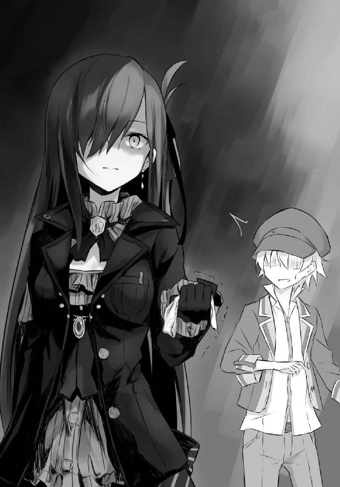

| リリエールと祈りの国 (GA文庫) | |
| 白石 定規 | |
| SBクリエイティブ株式会社 (2017) | |
リリエールと祈りの国
白石定規

本書に掲載されているコンテンツの著作権等の知的財産権およびその他すべての権利は、ＳＢクリエイティブ株式会社または正当な権利を有する第三者に帰属します。
本書の内容を権利者の許諾なく複製・複写・翻案・放送・出版・データ配信（送信可能化を含む）などすることはできません。
カバー・口絵 本文イラスト
あずーる
海の上に、丘のようになだらかに天を指す小さな国が一つ。
頂点に大聖堂を携えて、それを見上げるように──あるいはそれにすがりつくように、街並みが辺りにまとわりついている。
されど悠然と佇むこの国の情景はあまりにも美しくて、神々しくさえあるそうで、この国を訪れた旅行者は口を揃えて美しいこの国に足を踏み入れたくて仕方がなかったと漏らすという。
まあ僕はこの国を外から眺めたことなんてないから、その美しさとやらも分からないし、誰もが羨むような国に住んでいるというような自覚は特にないのだけれど。
街を往来するのは人間に魔族に獣人。つまりありとあらゆる種族が混在していて、だからこそ街並みは混沌を極めていた。
きわめて美しくて神々しい国かと思って国に入ってみたらなんかよく分からん種族がいっぱいいるよく分からん国だった。意味が分からない。などとお怒りになる旅行者も多数いると聞く。下調べしなよ。
とにもかくにもここはおかしなことだらけなのだという。
何がどうおかしいのかはよく分からないけれど、とにかく国の外とはあまりにも違うそうだ。一体何がどう違うのかはよく分からない。
けれど、僕が国の外へと出た時、そのときは、きっとこの国に訪れた多くの人たちと同じような言葉を吐くのかもしれない。
......なんて思いを巡らせながら、僕はいつものように、他所から見れば非日常的な、この国の日常を生きる。
この国は領域都市クラウスレイン。
あるいはこうも呼ぶらしい。
──祈りの国。
空から雨粒が降り注いでいた。
とうの昔に水を吸いつくした服は、レンガ敷きの地面にへばりついて離れない。
わずかに動かすことのできる指先は、微かに震えながら紙切れを握っていた。もうすっかり濡れそぼってしまっていて、そこに記されている文字を読むことすらできない。
慎ましやかな家屋が並ぶ路地には、人ひとりの姿すら見えず、閑散としていて、まるで世界から目を背けられているような疎外感を感じた。
僕は道の上、独りぼっちで、死に瀕していた。
──いったいどこで道を踏み外したのか。
「............」
とかこんなシリアスっぽい雰囲気を微妙に出してるけど実際お腹減ってて身動き取れないだけだからねマジで。あと雨降ってるとか言ったじゃん？ これも違うから。実際には近所に住んでる飛竜が水浴びしてるせいで飛沫が撒き散らされてるだけだからマジで。
あと腹減った。
このままだと僕死んじゃう。
......とまあ。
そんな風に瀕死のくせにわりと元気な思考回路を回しているときのことだった。
「──あら？」
ごしゃっ。
鈍い音が激痛と共に流れたのと同時に、女の声がした。僕の後頭部に当たる部分がどうやら足蹴にされたらしいと理解できたのは、「あ、ごめんなさい蹴っちゃったわ。大丈夫？」と同じく女の声が上から投げ下ろされてからだった。
おいおいおいおい瀕死の子を嬲るとかもう万死に値するよ！
お相手に対するささやかな殺意と、ついでに誠意の籠もった謝罪と賠償への期待を込めて見上げると、やや驚いている女性の顔があった。「あ、こいつ生きてたんだ」とか思ってそうな感じにまみれた表情ですらある。なんつー顔してんの蹴っておいて。
僕としばし目を合わせた彼女は、小首をこくりとかしげ、「......何か言ったらどうなの？」と表情を一切変えず宣った。もしかして僕が道に倒れてるのが悪いとか思っておられるのかな？
しかし。
見れば見るほど不可思議な女性で、さらりと伸びた髪は艶やかな紅葉のようで、僕を見下ろす瞳は、吸い込まれそうなほどに深く深く蒼い。頭にちょこんと載せられた小さなシルクハットの上から覆いかぶさるように日傘が差されていて、僕はこのとき、頭上にかかる飛沫が遮られていたことに気づいた。
着ている服は喪服に見えた。ドレスのように優雅な黒のロングスカートに、黒いジャケット。袖口からは灰色のフリルの袖が覗いていて、見れば日傘を握る手袋すら真っ黒だった。
すべて黒で覆いつくされているにもかかわらず彼女の顔はとてもとても白くて、綺麗だった。
「こんな道端で倒れていたら通行人の迷惑になるわよ。そして現に迷惑してるわ」
僕が口を一切開くことがなかったのは、もしかしたら彼女に少しだけ見惚れていたからなのかもしれない。
「......あ、う......」
うんうん。
じゃなかった。
普通に声を絞ることができなくなっていた。
さっきまで口に放り込まれてきていた水滴のおかげで喉は潤っているはずなのに、声はすっかり枯れていた。
僕は僕が思っている以上に、僕としての限界に近づいていたようだった。
景色は秒ごとに段々とぼやけていって、目の前にあるはずの女性の姿が、窓の向こうのように遠く、隔たりがあるようにも見えた。
「......め............し......」
どうにか声を頑張って絞り出して、それだけ口から吐き出して、僕は力を失った。
指先から、紙切れがはらりと落ちる。
そして僕の視界は、閉ざされた。
「......まったく。とんだお馬鹿ね。この子」
そんな冷たい声だけが、やけに鮮明に聞こえた。
そして僕は死んだ。多分。
〇
あ、生きてた。
美味しそうな香りもしくは僕のお腹のあたりから発生した食事の催促で目を醒ました僕は、そこが見知らぬ場所であることへの疑問よりも先に、僕の服がなぜだか可愛いピンク柄のパジャマに成り代わっていることへの羞恥心より更に先に、ひいては視線の先でさっきの彼女が手際よく料理を作っている光景を目の当たりにするよりも更に更に先に、そんなことをぼんやり考えていた。
............。
いや、というか何事ぞ？
「起きたみたいね。今ごはんを作っているからしばらく待っていて頂戴」
振り返らずに、彼女は言った。
「それと、あなたの服、濡れてたから外で干しておいたわ。乾くまでまだ時間がかかるから、しばらくそれで我慢して」
............。
マジで何事ぞ？
戸惑いながら、僕は起き上がる。
視線を巡らせてみると、どうやらここは彼女の寝室のようで、古びた木造り床と、真っ白の壁の一室には、必要最低限の家具だけが置かれていた。真昼の太陽は窓から中へ光を伸ばしていて、柔らかい風が、ベランダに並べられた洗濯物を揺らしていた。
暗緑のスラックス、それと白のシャツ、ブラウンのジャケット、それとキャスケット──僕の服だ。いつもスラックスのポケットに突っ込んでいるはずの懐中時計はそこにはなくて、テーブルの上で静かに時を刻んでいた。
ちらりと時計を覗き込む。
なるほど僕はどうやら二、三時間も眠りこけてしまっていたらしい。
「さっきはうっかり蹴ってごめんなさい。まさか餓死寸前とはね......。ただの酔いどれだと思って冷たく当たっちゃったわ。ごめんなさい」
淡々と、重ね重ねに謝りながら、彼女は目の前のテーブルにパンやサラダ、それからシチューなどの簡単な料理を並べる。
それと二人分の取り皿も。
「これは、まあ......私からの謝罪の気持ちよ」
反対側のソファに腰を下ろした彼女はにわかに笑みを浮かべる。
......やだ惚れそう。
「......ううううう。ありがとうございます......ありがとうございます......！」
「礼を言われる程でもないわ。あと敬語やめて頂戴。あなたと私、さほど歳は離れていないみたいだし」
「え、僕十七歳ですけど」
「じゃあ敬語はやめましょう」
「............」あ、自分の年齢は言わないんだね。
「ところでどうしてあんなところで死にかけていたの？」
彼女は小首をかしげると、「あ、食べていいわよ」とパンを手に取り、口に放り込んだ。
「えっと、あ、ありがとう......」僕はサラダを取り皿に移して、フォークで口に移し──あ美味い！ もうなんかただのサラダだけでも死ぬほど美味いし食べても食べても手が止まらないしもはや永遠に食べていられるような気が──ああシチューも美味い美味すぎて死にそう！
「ううううううううううっ......ぐすっ」
「うわ」
食べながら泣く僕と若干ひきつる彼女だった。
「うえええええ......。美味いよお......。お母さんの味がする......」
「......そう」
「僕お母さんいないけど」
「反応に困る冗談はやめてくれるかしら」
「これが最後の晩餐でも文句ないや......満足......。うううううううっ......」
「............」
「あ、それでね、さっき僕が死にかけてた理由なんだけど」
「切り替え早いわね......」
ごはんを少し食べたらようやくまともな精神状態になれたとも言える。死の淵から蘇ったとも言えるかも。
「えっと......どこから話せばいいのか分からないんだけれど......」
僕は、ここに至るまでにあったことを思い出しながら、スプーンでシチューをすくう。
......美味い！
「いちいち料理に感動していないでいいからとっとと話しなさい」
「あ、はい......」
喋らされました。
〇
「マクミリアくん。今日できみクビね。うん、今まで頑張ってくれてたんだけどさあ、ちょっと人員整理したくなってね」
「俺、今度バンドマンとして独立することにしたんだよね......だから会社畳むことにしたんだ。だからごめん、これでうちの会社は倒産ってことで」
「えー、単刀直入に申し上げますと、わが社は本日で倒産です」
「マクミリアちゃん。君きょうでクビね。お疲れ様」
「きみクビね」「倒産しちゃった」「クビ」「クビ」「倒産」「クビ」「倒産」以下略。
......以下略。
僕は不幸な人生を歩んできたと思う。
十四歳で孤児院を出て以来、今に至るまで送ってきた生活は、あまり充実した日々じゃなかった。
毎日のように働き、少ない給料で頑張る日々。
三か月ほど働くとどういうわけか会社が倒産するか、僕自身がクビになる憂き目に遭って、また新しい職場を探して、また倒産かクビになる。
僕は長いこと同じ職場にい続けたことがまるでなかった。
「......やってらんない。いらいらする」
そんな毎日ばかりだと嫌気も差すもので、独り立ちして三年が経った頃には、すっかりやさぐれた僕がいた。
あるいは不安定になりつつあるこの国のありさまが、結果的に僕を苛つかせていたのかもしれない。
『その祈り、本当に必要？ ──大聖堂での祈りを自粛しましょう。祈りは皆のために』
その日、大聖堂へと続く大通りにはいつものように張り紙が並べられていた。
デザインやキャッチコピーを替えながらも、ずいぶん前からこの道に張り巡らされているらしい注意喚起は、大通りから大聖堂へと向かう人々を脅すように飽きるほどに並べられているわけだけれど、そこを歩く誰もが見て見ぬふりをしていた。
この国唯一にして最高峰の遺産である『祈り』は、海に浮かぶこの国の中心部に位置している大聖堂にもたらされた奇跡だった。
大聖堂に行って、祈りを捧げると、ごく稀に、それが叶えられる──らしい。
僕は生まれてこのかた一度たりとも祈りを捧げたことなんてないけれど、実際、祈りが叶った人というのは数多くいるらしい。
この国の金持ちの中に祈りが叶っただけの者が何人いようか。難病を克服した者の中で祈りに縋っていた者が何人いようか。仲睦まじい恋人たちの中に祈りを捧げた者が何人いようか。
祈りとは、成功や栄光、そして克服の条件の一つとなっていた。
だから人々は、何かにつけて祈りを捧げる。夢を叶える便利なものが、国で生きている限り視界の端にちらつくから。
だから、すがりつく。
『建国当初からこの国の中心にそびえ立つ大聖堂は祈りを捧げ続けたせいで今までどおりに機能するのが難しくなりつつあります。どうか皆さん、もう大聖堂で祈りを捧げるのはやめてください。祈りのない生涯をこれからは送ることとしましょう』
先代王女のマリナリーゼが国民に向けて声明を出したのが二十年ほど前であり、祈りを全面的に禁じたのがその頃の話。
反発した市民は暴動を起こし、結局、先代王女は失脚。王位は妹のフィオーネに譲渡された。
そして妹のフィオーネが取った策が、街中に張り巡らされた張り紙だった。現国王はあらゆる事柄に徹底して不干渉を貫く姿勢を取っていた。──強行策を取って立場を失った姉を見ていたからだろう。
けれど何の意味もない。
現に大聖堂には、今日も人々が、種族の枠を超えて大勢集まっていた。
ある魔族たちがいた。「なあ聞いてくれ！ この前ここで『可愛い女騎士と巡り合えますように』って祈ったんだわ」「おう。どうなった」「女騎士に殺されかけた」「............」「まあ祈りは叶ったんだけどな......違う、そうじゃないって感じだったわ」「............」
ある人間たちがいた。「億万長者になれますように億万長者になれますように」「ねえ見て。あの人また来てる......」「やだわぁ。あの人いつもここで祈ってるわよね」「どうせ叶いっこないのに」「ところであんたは今日何を祈るの？」「え？ アレックスくんとうまくいくように」「あ？ 先週からあたしアレックスくんと付き合ってんだけど」「は？」「ああ？」
ある獣人たちがいた。「人間の女の子と付き合いたいんだが」「だが俺たちは毛むくじゃらである」「付き合うのは困難と見える」「............」「............」「早く人間になりたい」
どこからどう見ても俗にまみれた人ばかりが、大聖堂へと連なっていた。
ああもう、こんな願いをする人ばかりで、こんな願いすら叶えてしまう大聖堂だから、僕は好きになれないのに。
「............」
だというのに。
けれど僕も、気が付けばその行列の中に紛れ込んでいた。
身勝手な人ばかりなのがこの上なく腹立たしいけれど、それ以上に、何一つとして思い通りにならない今の僕に、腹が立っていたから。
だから僕も、憂さ晴らしに大聖堂で祈りを捧げることにした。
搔い摘んで言うとやってらんなくなったんだよね。いろいろと。
あるいは何がなんでも何かにすがりつきたかったとも言える。
そして僕は、行列を進む。
順番が巡ってきたのは、それから一時間ほど待ったあとだった。
大聖堂の中は、すべてが白で埋め尽くされていた。アーチ状になった天井は遥か彼方にあって、見上げればその場にへたり込んでしまうほど雄大だった。
歩みを進めるたびに、足音が反響する。大聖堂には一人で入ることが通例となっていることもあり、ここには僕の足音しか響いてはいなかった。それ以外には何も響かない。俗まみれの外とは完全に隔離された、別世界だった。
大聖堂の一番向こう、赤、青、黄、さまざまな色を散りばめたステンドグラス。その手前にある、名も知らない誰かの像に向けて、僕は片膝を地につけて、両手を握りしめた。
そして。
「もう二度と僕が就職した会社でクビにならないようにしてください！」
と叫んだ。
「もう二度と僕が就職した会社が倒産しないようにしてください！」
とも叫んだ。
「ばかやろー！」
あとついでに何かに対して罵倒してすらいた。
そんな感じで、僕の人生初の祈りは終わった。
「それでどうなったの？」
「叶えられたよ」
「ならどうして行き倒れていたのよ」
「二度と就職できなくなっちゃったからだよ」
〇
異変に気づいたのは祈りを捧げてからしばらく経ってからだった。
自慢じゃないけど僕、今までいろいろな会社で働いていた経験はあるから、能力面に関しては他より劣っていない自信はあったし、むしろ面接に至ってはもう完璧すぎる腕前だったのね。だから独り立ちして三年経った頃には、どんな会社に志望してもたいてい合格はもらえるようになってた。
でも不思議と、祈りを捧げた翌日からは、面接で普通に落とされるし、働きたくてもそもそもその土俵に立たせてもらえなくなってた。
悔しくなって、求人募集の掲示板を漁って片っ端からいろいろな会社に行ったんだけど、どこでも同じように断られた。集団面接で僕以外ダメダメなやつばっかりで受け答えもまるでできていないやつたちが合格して、なぜか僕だけ落とされるなんてこともざらにあるくらいに。
それで、仕方なしに今まで貯めてきた貯金を切り崩しながら生活している中で、僕、気づいちゃったんだよね。
これ、多分祈りが叶えられた結果だったんだよ。
「──二度と就職しなければクビになることも倒産することもない、ということね。......随分と厄介な呪いにかけられたものね」
「......呪いね」祈りのことを言っているのだろうけど、なるほど確かに呪いと言ったほうが適切かも。「──それから今に至るまではたぶん語る必要もないことだろうとは思うんだけれど、まあ、結局、祈りのせいだと分かっていても、それをどうすることもできないじゃん？ 祈りをなかったことにしてもらうように祈ってもみたけれど、効果はなかったよね」
捧げられた祈りが叶えられる確率は国民の誰も分からない。僕みたいにたった一度で祈りが叶った者もいれば、何年も同じ祈りを捧げて未だ叶わない人だっている。
そういう事情から察するに、果たして僕は運がいいのやら悪いのやらよく分からない。キレていいかな。
「それで就職したくてもできずに、貯金ばかり切り崩していく日々が続いて、ああいう状態になったということね」
「うん死にかけた」
祈りを取り消す祈りを捧げながら、就職先を探し歩く毎日だった。掲示板に貼ってある張り紙を端から順に全部片っ端から当たり続けたけれど、結果は変わらなかった。
そしてついに貯金が底を尽いた。
もはやすぐにでも仕事を見つけないと死に至る未来しか見えなかった。
「で、今日ね、『戒祈屋リリエール』っていう、妙な店の面接に行く途中だったの」
行き倒れていたとき手に持ってた紙切れはその募集用紙ね。「なんかとっても怪しい感じの店だった。『生きてる人間で奴隷のように働ける人であり、かつ秘密を守れて、余計なことに口を挟まない者を望む』って募集要項に書いてあるし。でも給料はそんなに悪くないし。これ絶対何かヤバい仕事じゃん」
「え、うそ......」
「ん？」僕変なこと言ったかな？ まあいいや。「まあ......、普段の僕だったら絶対こんな仕事の面接なんて行かないんだけれど、あいにく僕の現状はそんなこと気にも留めてられなかったからね、行ったの」
「けれどたどり着けなかったみたいね、あの様子だと」
食後のコーヒーに口をつけながら、彼女は言う。
まるでもってその通り。
「お店に向かう途中でお腹が減りすぎて歩けなくなっちゃってね、倒れたの。そしたら近所の飛竜がちょうどそのタイミングで水浴びを始めちゃってね、快晴なのにびしょ濡れっていうよく分かんない状況に陥っちゃった」
あとはご存じの通り、僕は彼女に救われて、今こうして食後のコーヒーでほっとしている。
かろうじて首の皮一枚つながっていた。
......僕にまつわる不幸な祈りにまつわる現状は何一つとして好転していないのだけれど。
「なるほど」
彼女はただ一言だけそう応えて、カップをテーブルに置く。「災難だったわね、マクミリア」
「おっといきなり呼び捨てとは」話の中で何度か僕の名前は語ったから今更自己紹介する必要はないかなとは思ってたけど距離感近すぎません？
「いいじゃない。私とあなたの仲でしょう？」
「ほんの少しくらい前に逢ったばかりなんだけど」なんなら初対面で僕蹴られてんだけど。
「けれど同じ釜の飯は食べたわ」
「............」
「......私って人を呼び捨てで呼びたい類の人間なのよ」
よく分からん理屈だけどそうしたいなら最初からそう言えばいいじゃんと思いましたハイ。
「まあ──要するに、結果として僕はもう働けない運命になっちゃったってことかな。これで僕のお話はおしまい」
僕は大仰に肩をすくめてみせた。
今も大聖堂に人は寄り合い、祈り続けている。
たとえ国から規制されようとも、今を生きている人たちには関係ないのかもしれない──いや実際僕も今を生きられなくなりそうだったから祈ったんだけどね！
いやはや困った。
これからどうやって生きていこう。お先真っ暗感がすごい。生活保護とかやってくれないかなー。頼むよ領域都市さん。
「そんなクソみたいな現状に陥っているあなたにいい話があるわ」
「クソて」
彼女は僕を真っすぐに見つめていた。「不幸にも罹ってしまった祈りだとか、重大な不具合を起こしている大聖堂のせいで変な風に罹ってしまった祈りだとか──そういった呪いとも呼べる類の祈りを解くことができる方法がね、実は一つだけあるの」
「もう一度祈りをかけることでしょ？」
しかし彼女は首を振る。
「そうじゃないわ。そんなまどろっこしいことをしなくても、呪い自体をなかったことにできる方法があるの──簡単に言えば、解呪ができるのよ」
解呪とな？
「......どうやって」
「うわ。滅茶苦茶怪訝な顔してる......」
そりゃそうだよご飯恵んでもらっておいてアレだけど、僕こう見えても結構疑り深いんだよね。いきなりそんな提案されても「マジ？ やったぜ！ ああん素敵！」ってなるわけないよね。そこまで僕も馬鹿じゃないんだよね。
「仮に祈りが解けるとして、どうやったらできるの」
けどまあ、聞くだけなら別にいいかなとも思って、僕は首を傾けていた。
すると。
「私」と。
......ん？
なんと？
何言ってんのかなーこの人。と思いながらぽかーん、としている僕に、彼女は、
「私ね、実は罹った祈りを──呪いをなかったことにする仕事をしているのよ」
と言った。
わりと自信満々な感じで。
〇
祈りを──呪いをなかったことにできる。
その一言は、お先真っ暗な僕にはまさに射しこんだ希望の光のようにも見えて、もうなんか目の前の彼女が女神に見えてさえいて、ついつい反射的に「マジすかじゃあ僕の祈り解いてください超お願い！」なんて頼みそうになったし言葉が喉から出かかったうえに身を乗り出してすらいたけど、すんでのところで耐えきった。
「......マジで言ってるんすか？」
「敬語」
「......マジで言ってんの？」
「大マジよ。にわかには信じられないだろうけれど、私には確かにその力があって、あなたは呪いのせいで希望のない毎日を過ごしている──まるで巡り合わせね。それとも私たちのどちらかがそのように祈ったのかしら？」
「............」
そこでふと思い至る。
祈りをなかったことにしてください──僕は確かに、ここ数日間ずっと祈り続けていた。
けれど。
「......本当に祈りをなかったことにできるの？」
「勿論」
「でも、どうやって」
聞いたこともない。
彼女は手をかざして見せた。白くて細い指が、こちらに伸びていた。「私があなたに触れる。ただそれだけよ。それだけで、あなたに罹った呪いを一つ、なかったことにできるわ」
「............」思わず目を細める僕だった。
いや、あの......本当にマジで言ってんの？
「その目は信じてない目ね」
「うーん......。うん。まあ」
「じゃあやってみる？」言いながら彼女は立ち上がり、「モノは試しよ」そしてどういうわけか僕の隣に腰を下ろした。
脚と脚が、肩と肩が触れ合いそうなくらい近くで、彼女は僕を見つめる。
「......なんか近くない？」
「近いほうが話しやすいでしょう？」
「触りやすいの間違いでは」
「............」
図星か。分かりやすすぎやしませんかね。
「ま、まあそれは置いといて」実に不自然な挙動で手を横に流す彼女。「で、どうする？」
「......痛くない？」
「............」
「待ってなんでそこで黙るの！ やめてこっちに手を伸ばさないで！ やーめーてー！」
「大丈夫大丈夫。たぶん痛くしないから。うふふふふ......」
「うわあああああああああっ！」
僕に触れようとする彼女と、その手を必死に押さえる僕。
なんだこれ。
「最近ちょっと解呪してなくて欲求不満なの。右手がうずくの。やらせて？」
「なにその痛々しい子っぽい理由！ 怖いよ！」
「本当に大丈夫よ。もし痛かったとしてもそれは一瞬で終わるから」
「それ絶対に死ぬやつじゃん！ やだよ！ もうなんか不安しかないよ！」
「ご飯恵んであげたんだからそれくらい我慢しなさいよ」
「蹴ったお詫びって言ったじゃん！」
「残念ながらそれに食後のコーヒーは含まれていないわ」
「コーヒーと僕の命を天秤にかけないでくれるかな！」
「あら。あのコーヒーは最高品種の豆を使っているのだけれど」
「僕の命は最高品種の豆以下ですか......？」
「あれはコピ・ルアクといってね、非常に珍しい豆なの」
「せめて否定してよ！ というかその豆クソじゃん！」
いろんな意味でね！
飲んだことはなかったけれど僕でも名前くらいは知ってるよ！ どっかのネコからとれたクソから抽出された珍しいってだけのクソ豆コーヒーでしょ何つーもん飲ませんだ！
「はあ......これだから素人は。採取方法が少し特殊なことを知っているだけで味も知りもしないくせにあーだこーだと文句を言うのはやめたほうがいいわ。そういうのは値段と味を知った上でその価値を見出せる者こそが味わうものなのよ」
手に込めた力を緩めたかと思えば、腕を組んでため息を漏らす彼女。
申し上げてることは実質正論だし紛れもなくその通りで、まあそれはそうなんだけどクソはクソじゃん？ 綺麗なクソでもクソはクソじゃん？
つまり僕の命はクソ以下と？ おいおいクソみたいな話じゃな。
「で実際味はどうだった？」
「............」僕は視線を落とし、テーブルに置かれた二つのカップを見た──二つは既に空だ。「めっちゃ美味しかった」
「でしょう？ コーヒーはどんなものでも飲むまで味は分からないものよ」
「むむむ確かに」唸る。実際これも間違っていない。
「というわけで私の解呪を受けてみましょう。私の解呪だってそのコーヒーと同じよ」
つまりは知りもしないのに文句を垂れるなと。
「......むむむ、確かに」また唸る。
というか正気になってみればこれ以上ないくらいのチャンスが今舞い降りているのでは。
足蹴にされたと言っても彼女の手料理がなければ僕は今頃道端でびしょ濡れになりながら息絶えていたわけで、死んでいたようなものなのだから、彼女の要望の一つくらい聞かないと恩知らずにも程があるというもの。
しかも、そもそも彼女の言葉が万が一にも真実ならば、僕にデメリットはない。
いいことずくめともいえる。
............。
結局僕は考えることを諦めた。
「......乱暴にはしないでよ？」
そして僕は身体を彼女に向けた。僕の言葉を素直に受け取ってくれたのか、彼女はゆっくりと手を伸ばし、僕の頰に触れる。
驚くほどひんやりとした指先が、僕の背中をぞわりとさせた。
「大丈夫よ。すぐ終わるわ」
そして彼女は、指先に力を籠める。
直後だった。
青白いぼんやりとした光が、彼女の指先から滲み、僕にまとわりついた。冷たい指先と、冷たい色合いのわりにその光は春の日差しのように暖かかった。
僕をまんべんなく包み込んだ青白い光は、やがて、ぱちぱちと弾けて、小さな粒になって消えていく。
泡のように、うたかたのように、彼女の言ったとおりあっという間の出来事だった。
暖かさは気づけば綺麗さっぱりなくなっていて、彼女の冷たい指先は、名残惜しそうに、僕から離れていく。
「......はい終わり」
そして彼女は何事もなかったかのように向かい側のソファに座る。
なんというか、あまりにもあっけない終わり方だった。「......あの、これで本当に祈りはなかったことになったの？」
「ええ。勿論」
「でもこれじゃあ呪いが解かれたかどうかが分からないんだけど」
手から光を出しただけじゃんと言えばそれまでだし。どのような効果がもたらされたのかも、僕には認識できなかった。
「あら。それなら簡単よ」
けれど彼女は当然のように頷いてから、くしゃくしゃになった紙切れをポケットから取り出した。
僕が今日行くはずだった怪しげな店──戒祈屋リリエールの求人用紙が、そこにはあった。
「そういえば自己紹介がまだだったわね」
彼女は言った。
「私の名前はリリエール。戒祈屋リリエールの店主よ」
そのように語った。
「あなた、うちで働かない？」
とも。
〇
つまり彼女の視点からすれば、こういうことだった。
祈りをなかったことにすることを生業とする戒祈屋リリエールは、近頃の大聖堂の不備で仕事が微妙に増えつつあり、人手不足に悩まされていた。けれど店主のリリエールはとにかく人心掌握がヘタクソで、求人広告に怪しげなことしか書けなかったせいでまともに面接に来る者もいなかった。
その最中、彼女は偶然、僕と出会って、偶然、僕は彼女の店に面接に行く途中で行き倒れになっていたと。
つまり僕がいいことづくめであったと同時に、今回の顚末は彼女にとってもいいことづくめであったというわけだった。
まさにうぃんうぃんの関係と言えるかな！
まんまと嵌められただけとも言えるがな！
「けれどあなたにデメリットがなかったのは事実でしょう？」
「いやでもさリリエールさん......」
「さん付けはやめて頂戴」
「リリエール」
「はい」
「確かにそうかもしんないんだけどなんか納得がいかないというか、ちょっと現実に頭が追いつかないというか......」
上手くいきすぎじゃない？ 命救われた上に僕にまつわる嫌な現状を払拭してもらって、それで就職もできて......僕こんな幸せでいいの？ あとで臓器売られることになったりしない？
「あらいいじゃない。今まで不幸だったぶん幸せになっても罰は当たらないわ」
「............」
「あなたの境遇を聞く限り、あなたは仕事が長続きしない呪いに罹っていたようだしね」
「ちょっとまって何その呪い」
初耳すぎるんだけど。
「あなた以前に誰かに恨みを買ったんじゃないかしら。今、この国はご存じの通りろくでもない願いも叶えられるわ。そういう風になっているのよ」
「つまり」
「誰かがあなたの不幸を願った可能性があるってこと」
「............」
「まあもう解いたからあまり関係はないけれどね──ともかく、そういった事情があったから、あなたは今まで仕事が長続きしなかったのよ」
けれど、これから先は違うわ。
どんなことがあろうと、あなたが誰から恨みを買おうとも、私があなたを守ってあげる。
と、囁きながら、彼女はテーブルに紙とペンを並べる。
「私の助手になって頂戴」
優しさに溢れているわけではなく。かといって含みを蓄えているわけでもない。力強くて、見つめられていれば吸い込まれそうになる深い蒼の瞳は、僕をじっと捉えていて離さない。
僕は今まで、何年か働いてきた中で、いろいろな人を見てきた。
だから知っている。小さい頃に憧れていた大人のように素晴らしくて、大人らしい大人なんて幻想で、世の中にまみれているのは子供の頃から本質的には何ら成長していなくて、自分の利益しか頭にない、澱んだ目をした人ばかりだと知っている。
だから祈りは途絶えない。
けれど彼女は祈りを止められる。
そして彼女は僕とは同年代と思えないほど大人びていて──それどころか、この国で出会った誰よりも澄んだ目をしていた。穢れを知らない少女のように。
見惚れてしまえるほどに、綺麗だった。
こんなの、躊躇する理由がどこにあったというのか。
だから僕は迷わずペンを取った。
○
「それじゃあ今後は馬車馬のように死ぬまで働いてもらうことになるから覚悟しなさい。私の店はブラックと呼ぶのが生やさしいくらいにブラックよ」
「はははご冗談を。僕ほんとはリリエールがいい人だって知ってるよ？」
「あら私と数時間前に会ったばかりなのに随分と知った風な口を利くのね」
「やだなあ同じ釜の飯を食べた仲じゃん？」
「それはそうとあなた借金は今後どういった配分で返済していくつもりなのかしら」
「......は？」
借金とな？ なんのことやら。「僕、借金はしない主義なんだけど。今日も借金ゼロのまま死にかけてたわけだし」
「あら。じゃあ解呪料金の千万レインはどうやって払うつもりなのかしら。臓器でも売る？」
「えっ」
「解呪してあげるとは言ったけど無料でやってあげると言った覚えはないわよ。きっちり働いて返しなさい」
「............」
「さっきの提案、受けてくれて本当にありがとう。もしあなたが断っていたら今頃大変だったわ。後始末で」
「............」
彼女はぽん、と僕の肩に手を置いた。
「何はともあれ、ようこそ戒祈屋リリエールに。歓迎するわ」
誰よりも澄んだ目をしているとはなんだったのか。
もしや僕の目が濁っていたのかな？ これ結局つまり僕って退路をふさがれた上で進むべき道が一つしかないように錯覚させられただけって感じかな？ おいおいやり口がやくざ者のそれと同等じゃないかーやだー。
「クーリングオフとか効きますか」
「ごめんなさいうちブラックだからそういうのはちょっと」
............。
やっぱりこれって絶対なんかヤバイ仕事じゃん！ やだー！
「──というわけで、魔女さんの物語はこれからも続くとさ。めでたしめでたし」
ぱたん、と本が閉じられると、古びたインクの匂いがわずかに舞った。
しばしの静寂が孤児院の一室に舞い降りて、それでも僕が口を開かなかったことで、物語が終わってしまったことに気づいた子供たちは、堰を切ったようにわめき始める。
「おいおいここで終わりとかふざけてるよ」「はい続き。続きはやく」「ちょっとー！ まだ三巻までしか読んでないよ！ 四巻は？ 五巻は？」「続き！ 続き読んで！」「はーやーくー！」
今までじっと黙って僕の語りを聞いていたとは思えないくらいにわーわーぎゃーぎゃーとうるさい子供たちだった。
「マクミリアああ！ はやく続き！ 続き買ってきてー！」子供の誰かが叫んだ。
「うんうん。あったらね」
「そんなこと言ってさあ。実際もう裏ルートから四巻入手してるんでしょ？」
「ないんだなあそれが」
「噓だあ」
「悲しいことにほんとなんだよねえ」
「ねえマクミリア。魔女ってほんとにいるの？ あたし将来の夢、魔女にしようかなって思うんだけど」年長の女の子は僕の服の袖を引っ張って首をかしげた。
「うん僕もよく知らないんだよね。いるんじゃないの？」
「うわすごい雑」
「よくわかんないんだから仕方ないでしょー」
「そういう場面では噓でも『いるよ』って言って希望を持たせるべきだって思うな」
「じゃあ、うん。いるよ」
「噓つきの大人、きらい」
僕にどうしろと......？
子供ってよく分かんない。
毎週末に孤児院に帰っては読み聞かせをしている僕だけれど、一週間おきに性格が豹変する彼らには毎回戸惑ってばかりだった。
......なんてことを、子供たちへの読み聞かせを終えたあとに孤児院の母たるシスターさまに相談したら、
「それだけ楽しみにしているということです」と、のほほんとした口調で言われた。「特に、その本はあの子たちも大好きみたいでね、妙なテンションになっても無理ないかもしれませんわね」
「ふうん......」
「よければ今後はその続きを読み聞かせてあげられませんか？ きっとあの子たちも喜びます」
僕は自然と首を振っていた。「いや、そうしたいのも山々なんだけどね、続きないんだよね。マジで」僕が子供たちに語っていたことに噓はない。
「元々外から持ち込まれた本なのでしたっけ、その......えっと、何でしたっけタイトルは」
「ん」
僕は本を掲げてタイトルのところに指を置く。あまり共感されないけど好きな本のタイトルを口に出すのって結構恥ずかしいよね。
「──そうそう、それの続き。もしかしたら今日、港に行けばあるかもしれないでしょう？ だから買ってきて頂戴な」
「買ってくるのはいいんだけど......でも、多分ないかも」
「？ なぜです？」
怪訝そうに首をかしげるシスターさまに、僕は応える。
「毎年探し歩いてるけど、見つかった例がないもん」
僕は本の表紙を軽くなぞった。
これは、国の外から持ち込まれた物語。
灰色の髪の魔女が、世界中の国々を渡り歩き、ただその場にいた感想をつらつらと述べているだけの日記みたいな私小説。
孤児院で生活をしていた頃は、この本を読んでは国の外に出ることを熱望したものだった。
どういうわけか、魔法使いなんてものは、僕のいる国──領域都市クラウスレインには存在しないから。
それこそ、祈りでもしない限り、魔法使いに出会うことなんてできないから。
で、まあ、予想通りというか、相変わらずというか。
ともかく僕は港を訪れてみたものだったけれど、やっぱりお目当ての本は見当たらなかった。
試しに港で露店を開いてるおっちゃんに片っ端から声を掛けてみたものだったけれど、結果は同じ。
「うん。無いね」「それ三巻打ち切りって噂だぜ？」「それの続き？ ああ持ち込まれてないな」「ねえな」「ところでこの新作とかどうよ？ 奴隷でハーレム作る話なんだけど」
以下略。
本を売ってる店を回り回って尋ねまくったけど、市場の売れ線と僕の趣味嗜好が完全にズレているのか、くそつまらん本しか置いてなかった。なんだよ奴隷でハーレムって。奴隷なめてんのか。
「ぬぬぬぬぬ......！」
僕マジ憤怒。
というか何で一冊も置いてないの？ 一冊くらい持ち込んでくれてもよくない？ 需要あるのにそれを見て見ぬふりして供給サボるとかこれもう商売の破綻じゃない？ さては読者をなめておられるな？
こうなったら僕自ら国の外に出向いて本の続きを買ってやりたいとさえ思ったくらいだった。
けど無理なんだよね。だから憤怒しているとも言える。
今日の港には呆れるくらいに人がいて、そのだれもが金持ちばっかりだった。
年に一度しか港を訪れることのない定期船は、国の外から金持ちと、外の世界の荷物を載せてやって来る。
そしてこの国に数日滞在したのち、人と荷物を載せてまた出て行ってしまうわけだけれど、そもそもこの年に一度しかない定期船に乗り込むためには途方もない金額が必要であり、そして持ち込まれた品々も馬鹿みたいに高いものばかりなのだ。
よってこの日の港は金持ちたちの道楽の場と化していた。
僕みたいな庶民がいればたちまち目立ちまくってしまうもので、歩いているだけで痛いほど視線を浴びているのがよく分かる。
「............」
いづらい......。
結局僕はそのまま港を回るだけ回って、時間を潰せるだけ潰してから、仕事に行った。
〇
「定期船のチケットは乗船と同時に本人確認があるから、非正規の手段で入手したものや、身分が不明瞭の者は外に出ることは叶わないわ。転売目的で買ったとしてもただのクズごみになるだけ。まあ買うだけ無駄というところね。ちなみに輸入品はどれも高いから『高い金払ったんだから美味いに決まってる』なんていう貧乏人根性丸出しの思考回路の連中がこぞって買いたがるけど、よその国の人間の好みに合わせたものは舌鼓を打つほどのものばかりじゃないわ。むしろ味覚に合わないことが多いの」
港に行ったついでに買った輸入品のチョコレートをリリエールにあげてみたら、「ありがとう」と素直に礼を述べられて、そのあと「ところで」との枕詞のあとに今の言葉をぶつけられたわけだけれど、何で僕怒られてんの？ というか何？ もしかして定期船のチケットを転売するために港に行ったとか思っておられる？ おいおい喧嘩売ってんのかな？
「文句があるなら返してよ。僕が一人で食べるから」
とりあえず腹立つからチョコレートの入った箱を強奪した僕だった。
「ちょ、ちょっと！ ......食べないとは言ってないでしょう」リリエールは慌てて箱から二、三個のチョコレートをつまみ上げる。「ちなみにチョコレートを食べると血糖値がやたらと上がってね、シミとかシワの原因にもつながるし、ニキビができやすくなるわ。食べてもいいところがまるでないわね」
「............」
必死に食べながら言うセリフじゃないと思うなー。
結局僕は押し負けて、チョコレートの箱を僕たちの間にあるテーブルに置きながら、ソファに腰を下ろした。
ふわりとした感触が僕の身体を支えてくれたけれど、なんだか落ち着かなかった。
働き始めてまだ三日しか経っていないせいか、見渡す限りの景色が新鮮さをもっている。
筆、鏡、傘、壺、本、鋏、その他ジャンル不問の物たちが、店の中には並べられている。毎日のようにそれらにかかる埃をはたき落としているわけだけど、未だに何を売ってるのやらさっぱり。
リリエールが人助けをしているってことは分かるんだけれど、でも、だったらこの店に置かれている物々は何なの？
「ここって何屋さん？」話の流れを切って疑問をとりあえず口にできるのは新人の特権だよね。
「は？ そんなことも知らずに働いていたの？ クビにしようかしら......」
「............」
ちなみにブラック企業では新人の特権などあってないようなものだからみんなも気をつけようね！ えへへ死にたいなあ。
リリエールは心底呆れたようにため息を漏らす。
「うちの店は基本的には物を売買する店よ。この国には祈りがあるでしょう？ 祈りを叶えれば、どんな自分にもなれる──というのは知っているわよね」
「うん」
リリエールはチョコレートのついた指をナプキンで綺麗にふき取りながら、
「祈りはね、時には人じゃなく物にもかけられることがあるの。例えば、大事にしている人形に『生きて欲しい！』と願えば、人形の髪が伸びるようになるわ」
「それホラーだよね」
「あるいは人形が夜中にひとりでに歩き回るようにも」
「それもホラーだよね」
「......まあ、そういった奇妙な事案が起こるようになった物を引き取ったり、あるいは誰かに譲渡したりするのが私の主な仕事よ。誰かの祈りを解くのはあくまで副業。レアケースよ」
「ほほう」僕は頷く。けど直後に首をかしげた。「......売買してるところ見たことないけど」
「やめなさい」
「この店、実は繁盛してないんじゃ......」
「怒るわよ」
「というかお客さん来たとこすら見たこと──」
店の扉が鐘を鳴らしながら開かれたのは、ちょうど僕らが雑談に花を咲かせていた、そのときだった。
お客さんを指差しながら勝ち誇った顔色を浮かべるリリエールに対し、扉から飛び込んできたお客さんは、やや慌てきっているように見えた。
「リリエールさん！ 助けてくだされ！ 吾輩とても困っておるのです！」
肩に大きなバッグを掛けたスーツ姿の壮年男性だった。
過ごしやすい春の朝方だというのに、男は真夏の日差しの中を急いできたみたいにずいぶんと汗ばんでいる。
「いらっしゃい。とりあえずそこにどうぞ。お名前は？」
「カジノ店、ガットショットの支配人モリスです。今日は祈りを解いてもらいに来た次第であります！」
妙なテンションの男だった。
リリエールは顧客名簿にペンを走らせた。
「要件は？」
リリエールの言葉に、モリスこと支配人が応じる。
「店に魔法使いが現れたのであります！ ぜひとも助けてほしい」
「......魔法使い？」思わず僕は声をあげていた。
ふと気づくと、リリエールも涼しげな表情を崩していた。
「この国に魔法使いなんているはずないじゃないの」ぴしゃりと断言するリリエール。
けれどモリスこと支配人は頑なだった。
「だが魔法使いが確かにいるのであります！ 魔法使いのせいで、我が店は経営が傾いているのですよ！」
必死な形相の中に噓はないように思えた。
だから僕もリリエールも怪訝な表情で顔を見合わせた。
「......ところで今日のお客さんも解呪のお願いみたいだけど」
「レアケースって続くものなのよ」
「私が運営するカジノにその女が現れたのは二日ほど前のことであります！」
支配人が語り、リリエールがペンを走らせながら時折頷いていた。
妙な話だった。
支配人曰く、魔法使いの格好をしたその女は、訪れたその日、まるで他には用はないとでも言うように、真っすぐにポーカーのテーブルに座ったそうだ。
かなりの上級者のようで、堂々とした態度をしていたとも語った。
しかし若い女の子が一人で訪れるには、カジノは少々物騒な場所だった。魔女の仮装をしている彼女は尚更、周囲の目を惹いていた。
だから多くの男が、彼女と勝負をしたがった。なんなら「俺が勝ったらなんでも言うことを聞けよな......へへへ......」とか宣うゲス男くんも出てくる始末だったとか。
「しかし驚くべきことに、その女はただの一度たりとも負けなかったのですよ！ 役なしなんて一度たりともなくて、最低でもフルハウス、ごく稀にロイヤルストレートフラッシュを平然と出してくるのであります！ 男どもは徹底的に身ぐるみを剝がれたであります。払える金がなくなって下着姿のまま店から追い出された奴もいました」
「なかなか容赦ないわね。グッド」
なぜか満足げに頷くリリエール。
なに言ってんのきみ。
ちなみにポーカーにおける役の中で、フルハウスの難度はかなり高い。ロイヤルストレートフラッシュに至っては自分で出すことはおろか、目撃することすら超希少。
つまりバケモノじみた手を使う女ということだった。
ポーカーで勝てるように祈ったのかな？
「要するに、女にかかった祈りを解けば、恐らくは店の経営状況もよくなるってこと？」
「まあ恐らくはそうなるでしょうね」リリエールも同じ結論に至ったようで、僕に頷いていた。
でもつまりこれって、女の子にあんなことやそんなことをしようとした男たちが片っ端から痛い目に遭ってるだけだよね。
自業自得だと僕思いますハイ。
しかしお店的にはやはり、女の子の一人勝ちにするよりも、あらゆる男から搾取したほうが得策なのだろう。
「あの女の子が現れて以来、我が店は大打撃を受けましてな。もはやポーカーの席には事情を知らない新参者がわずかに座るだけ。絶対に勝ってしまう彼女のせいで、客足は遠のきつつありますであります！」
「事情は分かったわ──」リリエールはペンを走らせる手を止めた。
その一言と様子は、「面倒くさいけど仕方ねえからやってやるよ」というニュアンスを存分に含んでいるように見えて、要するに彼女が乗り気でないのは火を見るより明らかだった。
だから直後に浮かべた満面の笑みも、付き合いの浅い僕ですら分かるくらいにまがい物だった。
「その女の子の件を解決したいのならば、とりあえず手付金として五千万レインを頂戴。解決したらその倍もらうわ」
大金吹っかけて諦めさせる気で満ち溢れてさえいた。
しかし。
「ふむ。構わん！ ちょうど手持ちが五千万レインだ」
支配人は即座にバッグをテーブルに置いて、ファスナーを開く。
中にはお金がぎっしり。なるほど支配人が持っていたのは五千万レイン入るバッグだったようだ。それ裏金じゃないだろうな？
「ちっ。これだから金持ちは......」
支配人に聞こえないように毒づくリリエール。
乗り気じゃないにも程がある。
しかしそんな彼女に反して、僕は俄然乗り気だった。何なら今すぐにでもカジノに赴きたいくらいに。
「......あなたの依頼、確かに承ったわ」
テーブルのバッグを「よいしょ」と自らの足元に置いて、ため息を漏らすリリエール。
その横で、僕はひとり、うずうずとしていた。
あ、お金が傍にあるからじゃないよ？ マジで。
「......さて、それじゃあ行きましょうか」
「おっと早速カジノ行っちゃう？ こう見えても僕、昔はカジノで働いてたことあるから結構ギャンブルには自信が──」
「ああ違うわよ。まずはその魔女の女の子の身元を調べる必要があるでしょう？ こういった事態の場合、まずは情報収集が最優先よ」
「ほほう」
「というわけで行くわよ」
「......どこに？」
「喫茶店」
............。
はー？
〇
地味な西洋風の店構えの中で、衣擦れの音をにわかに鳴らしながら、着物の少女二人が歩いている。よく似た顔立ちをしている彼女らは、立ち振る舞いも顔立ちも、肩口のあたりで綺麗にさっぱり切り揃えられた髪に至るまで、そっくり。
相違点があるとすれば髪の色だけだった。
「事件でありんす？」と白髪の女の子は首を傾けて、僕の前にパフェ（ふつうサイズ）を置く。
「事件でやんす？」黒髪の女の子も同じように首を傾けて、リリエールの前にチョコレートサンデーストロベリーミックスワンダーランドデラックスパフェ（えげつないサイズ）を置く。
「私がここに来てパフェを頼んだということは事件が起きたということよ」なぜかしたり顔のリリエールちゃん。可愛い。
「当店のパフェは期間限定商品でありんす」「そもそも今日初めて注文されたでやんす」
「............」ふてくされてパフェの山を崩し始めやがるリリエールちゃん。可愛くない。
しばし食べてから、リリエールは、
「情報屋と会うのは初めてだったわよね。こっちの白いのがシロナ。こっちの黒いのがクロエ。どっちもこの国の人のことなら大抵知っている情報通よ。人を探すときはたいていこの二人に頼めば万事解決よ」
と、双子に札束をポイと渡した。
「わあいお金でありんす」白髪のほう──シロナが指先をはじきながら札束を数えて、
「あなたが戒祈屋リリエールの新入りのマクミリアでやんすな？」と黒髪のほう──クロエが僕を見つめた。
「......いやまってなんで僕のこと知ってんの？」
僕たち初対面ですが？
「だってわっちたちは情報屋でありんす」「この国の人のことなら大抵分かるでやんす。......つーか今そう説明してたでやんす。お前さては馬鹿でやんすな？」
「............」
なんで僕罵倒されてるんだろ......。
「もちろんあなたのこともわっちたちは知っているでありんす。あなたはマクミリア。領域都市運営の孤児院で生まれ育って、十四歳で独り立ち。それから三年くらい色々な職を転々としながら生きてきたでありんす」「最近の趣味は週に一度、孤児院の子供たちに自分の趣味を押し付けることでやんす。周りに自分と同じような趣味嗜好の本を読んでくれる人がいないから、子供たちに読ませて自己満足に浸ってるでやんす」
「............」
「合ってるの？」
なんか興味津々のリリエール。
「腹立つくらい合ってる」
なるほど二人の実力は確かに本物らしい。ふぁっく。
個人情報ダダ漏れじゃないかひどいや。とも思ったのだけれど、よく考えたら祈れば何でも叶う国の中、こんな双子がいたところで確かに不思議はないかもしれない。
「いえーいでありんす」「いえーいでやんす」
揃って無表情のダブルピースを浮かべる双子。
「ま、雑談はこれくらいにして」リリエールは二人にさらりと紙切れを渡した。「カジノで事件が起きたの。その犯人のこと、調べてくれないかしら──詳細はこの紙きれに書いといたわ。このあたりで魔女のコスプレが趣味の女の子とかいない？」
「ふむふむ」「なるほど」
二人は仲よく紙切れの端っこを互いにつまみながら、しばし黙った。
そして、
「該当なしでありんす」「こんな特徴の子は知らないでやんす」
とテーブルに置いた。
知らないとな？
「......急に二人の能力が疑わしくなったんだけど」
「自慢じゃないけどわっちたちはこの国の住民のことなら完全に網羅してるでありんす。でもこの特徴の女の子は知らないでありんす」「やんす」
「......じゃあ、カジノの連中は集団で幻覚を見てるのかな」
「んなわけないだろ貴様は現実見ろでありんす」「やんすぅ」
「............じゃあ、外から来た魔女、とか」
「この国に魔法使いは入国できないでありんすよ」「やんすー」
「..................え、マジ？」
「そんなのも知らないんでありんす？ この国で魔法使いが見られないのは魔法使いの入国が禁じられているからでありんす」「やんすよ」
「........................いやまって。魔女が定期船に忍び込んだ可能性も」
「魔女ともあろう者がそんなことするはずないでありんす」「やんやんす」
「ああああああああ謎は解けた！ 犯人は魔女の変装をした外国の女の子だ！」
「答えにたどり着くのが遅いでありんす」「やんすでやんす」
すべて二人に冷静に反論されて、もうなんかヤケクソだった。クロエに至ってはやんすしか言ってないけどね！
僕たちの会話が一区切り終えたところで、リリエールは「恐らくその通りね」と口を挟んできた。よく見たらえげつないサイズのパフェが半分以上崩落していた。食うの早すぎません？
「私が推測するに、この事件の犯人の女の子は、定期船でこの国まで来た女の子よ──何の目的かは知らないけれど、国に来た瞬間に大聖堂で祈りを叶えたみたいね。それでいて、ギャンブルで金を稼ぎまくったと」
「でも定期船に乗り込んでくるのは金持ちばっかりでしょ？ カジノで荒稼ぎしなければならない理由がどこにあるってのさ」
「それはほら、アレよ」
「アレとは」
「......自分で考えなさい」
「............」つまり分からない、と。なるほどなるほど。「けれど、それにしても魔女の格好をわざわざしている理由も分からないね」
「それはほら、アレよ」
「......アレとは」
「可愛いから」
「確かに魔女の格好は可愛いでありんす」「萌えるでやんす」
なんだろう一寸たりとも納得いかない。
この国には魔法使いと呼べる者が存在しないというのならば。
そもそも魔女の格好などしていたら目立って仕方がないはず。外から来た子だというのなら金持ちのはずだし、金を稼ぐ必要すらないはず。
今しがた立てた推論では、まるで必要のない手間をわざわざかけている七面倒くさい犯人像しか浮かび上がらない。
「ともかく」リリエールはスプーンをくるくると回したのち、パフェの山に刺した。「現時点で分かることはただ一つよ──相手は何を考えているのかまるでまったく分からない」
「............」
「慎重に事を運ぶこととしましょう」
パフェの山をざくざくと崩していくリリエールだった。
そして、
「ところでマクミリア。私はこのあとパフェをあと二つほど追加注文してから行くから、先にカジノに行って、例の女の子に接近してくれないかしら。あなたが相手とお友達になったあとなら、私も相手に接触しやすいわ」
「要するに囮でありんすな」「やんすね」
「えーやだよ面倒くさい」
「そう言うと思った──だからこれあげるわ。好きに使ってもらって構わないわよ」
リリエールはテーブルの上で封筒を滑らせ、こちらに寄こした。
分厚い封筒だった。
開いてみると金がたんまり入っておられた。たぶんさっきのバッグに入っていた金の一部。
「僕、カジノ、大好き」
「それはよかった。うふふふ......」
「へへへへ......」
「こいつら金に汚いでありんす」「薄汚れた大人の匂いがするでやんすな」
僕は幸せにまみれて、リリエールも幸せだった。これぞうぃんうぃんの関係といえるね！ というか金に汚いとか双子に言われたくないかな！
............。
しかしながら僕の頭の中では、やはりカジノで荒稼ぎをしている女の子のことが引っ掛かっていた。
僕はテーブルにある紙切れに視線を落とす。
どうして魔女の格好なんてするんだろう。
灰色の髪と。黒のローブ。それに黒の三角帽子。
まるで本の中の魔女みたいな、本の中から出てきたかのような格好に、いったい何の意味が込められているのだろうか。
............。
ま、とりあえずこの金を三倍くらいに増やしてから細かいことは考えようかな！ えへへ。
〇
まぶしいほどに輝く金色にまみれた店内だった。
まるで宮殿を丸ごと借りてきたような絢爛な店内には、まばらながらに人──人間と、魔族と、獣人──の姿がある。
ルーレットがからからと回り、ディーラーが華麗な手さばきでカードを配り、サイコロがボードの中を転がっていた。
華美な室内では俗にまみれた大人たちが金と欲に溺れていた。歓声と悲鳴が喧騒の中で入り乱れていて、どういうわけかその場にいるだけで気分が高揚した。脳から変な汁が出そう。
「......ぬ」
僕は騒がしい店内をほどほどに進み、ポーカーのボードまで赴いた。人々の阿鼻叫喚が飛び交う絢爛な店内で、そこだけやけに重苦しい雰囲気を立ち込めている。
四方を本一冊ぶん程度の外壁で囲んでいるボードの中からはチップの山が誇らしげにひょっこりと顔を出していた。積み方を誤ればすぐにでも雪崩を起こしそうなくらいに積み重なっているチップたちの傍らに腰を下ろしているのは、一人の少女。
それは紛れもなく、彼女だった。
「──残念、フルハウス」
ちょうど勝負がついたころのようだった。
彼女は飄々とした様子で自らのカードを晒し、横に座る魔族の男に絶望を与えていた。男はそのときチップがなくなったようで、「ふざけんな畜生！ こんなのやってられるか！」と立ち上がり、僕とすれ違っていく。
「またどうぞー」ひらひらと手を振る彼女だった。
そしてチップを一枚ずつ丁寧に重ねながら優しげな表情を浮かべる魔女さん。
「ちょろいですね」
おっと。優しげというより卑しげといったほうが正しかったかも。
「どなたも弱すぎです。つまらないです」彼女は最後に残った一枚をつまみ、手で弄りながら、独りごちる。
一方的な勝負の展開に退屈しているご様子であることは傍から見ても明らかだった。
「............」
これもう急接近のチャンスだよね。
僕は今しがた空いたばかりの席に腰を下ろす。
「や。どうもこんにちは。僕はマクミリア。お相手していいかな」
「ええもちろん。どうぞどうぞ」
彼女はにこやかに僕を迎えた。むしろ「ふふふ新しいカモが来ましたね。やったぜ」とでも言いたげな感じの雰囲気だった。
「私はイレイナです。どうも初めまして。ポーカーの経験者ですか？」
「カジノでいきなりポーカーを始める初心者がいたらそれはもはや無謀を通り越してただの馬鹿だと思うな。もちろん僕は経験者だよ」
「そうですか。でも皆さんそう言って私にボロ負けして帰っていくんですよ。不思議ですね」
「ふふん。僕はそうならないけどね」
「皆さんそう言って以下略」
「ちなみに僕は強いよ？」
「皆さん以下略」
「............」
「ちなみにお金はどれくらい持ってきていますか？」
僕はテーブルに封筒を置いてみせた。
その厚さからおおよその金額を察したみたいで、彼女は「へえ......」といやらしい笑みを浮かべた。「ふふふあの大金がもうすぐ私のものに......」とか思ってそう。
「ふふふあの大金がもうすぐ私のものに......うふふ......ふふ......、ふふふふ......」
むしろ言ってさえいた。あとなんか顔色が完全に裏金を受け取った悪い役人のそれだった。
もうちょっと心の声と表情を抑えたほうがいいと僕は思うな！
「無駄話もほどほどにして、とっとと始めようか──僕の友達が来る前に勝負を終えたいし」
彼女は頷いた。
「殊勝な心掛けです。ちなみにお友達はお金を幾らほど持ってくるおつもりですか？」
「さあ？ まあその頃には君のチップはすっからかんになってるから関係ないんじゃないかな」
「以下略」
「むむ」馬鹿にしておるな？ 僕本当に強いよ？ 泣いても知らないから。
そして僕はテーブルに幾らかのチップを置く。
ふはは手始めにこやつの身ぐるみを剝いでやろうか！
と思っていた時期が僕にもありました。
「フルハウス」「フルハウス」「スリーカード」「ツーペア」「ツーペア」「フルハウス」「フルハウス」「フルハウス」「フルハウス」「ロイヤルストレートフラッシュ」「フルハウス」「フルハウス」「フルハウス」「フルハウス」「フルハウス」
「........................................................................................................................」
その後のゲーム展開といったらそれはもう涙が枯れるくらいに一方的。
かなり長いこと黙り込んでしまうくらい。
一方的でありながらもちょいちょいスリーカードとかツーペアを織り交ぜ、「あれ？ もしかしたら勝てるんじゃね？」とか思わせてくるあたりも憎たらしい。
「どうしたんですか？ 顔色が暗いですよ？ 降りますか？ それともまだ続けます？ ああもちろん降りるなら有り金ぜんぶ置いていってくださいね」
うふふ、と笑みを浮かべる彼女。
ポーカーといえば配られた手札をひた隠しにしながら相手プレイヤーとの駆け引きをする、頭脳戦の要素が強いゲームなわけだけれど。
むしろ彼女に至っては頭脳とかお構いなしに問答無用でぶん殴ってくるくらいの気概が感じられた。こやつは悪魔じゃ。
「進むも戻るも地獄ですね」
「ううううう......ごめんなさいごめんなさいごめんなさいごめんなさい」
「誰に向けて謝っているか分かりませんけど、諦めるのはまだ早いですよ。ところでチップはあと幾らほどで？」
「......あといちまいです」
「それじゃあ勝負になりませんね。困りました」
「うん。だからもう降り──」
「ところであそこに良心的な金貸しがありますが。どうですか？ ほら、『良心的！ 金利は十日で五割！』ですって」
「ただの闇金じゃないかー！ やだー！」
「ごたごた言ってないでとっとと金を借りてきてください」
「むりー！」
「大丈夫。九日で返せば何も問題ありません。よく見てください。十日で五割ということは、九日までは金利はゼロということです。実質ゼロですよ」
「じっしつゼロ......？」なにそれ甘美な響き！
「何なら例のお友達とやらにあとから借りればいいじゃないですか。ほら、それでもう万事解決ですよ」
「......あとから借りれば、問題、ない......？」
「そうです。問題ないんです。それにほら、今から挽回すれば今すぐ返せますよ？ むしろお金が増えちゃうかもしれません」
「ふえちゃう......？」
「増えちゃうかもですよ。だからまだ続けましょう？ ね？ 私、あなたともっとポーカーしたいんです」
「............」
「あなたはまだ続けたいですか？」
「つづけたい！」
「じゃあ一緒に借りに行きましょうか？」
「うん！」
そして僕はありったけの金を借り──。
「って騙されるかあああああああああああああああああっ！」
荒ぶる僕だった。
これ完全に泥沼に嵌るパターンだよね。冗談じゃないよ！
「誘導にまんまと引っ掛かったりいきなり怒り出したりわけ分かりませんね。猛獣ですか」
「うるさい！」吠える僕。
「しかしあなたが既に戦えなくなっているのは事実です。諦めるか借金するか選んで下さい」
「ぐぬぬ......」ごもっともすぎる。
「どうします？ ああ、ちなみにこのお店では身に着けているものを担保にしてもいいそうですよ。今までも何人かの男が身ぐるみ剝がれていましたし」
「うんそれは知ってる」
というかそう仕向けたのってきみだよね。
「ちなみにまだあなたとゲームをしていたいというのは事実です。あなたがもしも身に着けているものを担保にするというのなら、一度くらいは負けてあげてもいいですよ」
「......ぐぬぬ」
「担保に懐中時計とかどうです？ そのポケットに入ってるやつ」ちらりと彼女は視線を降ろす。「チェーンしか見えませんけど、売れば結構値が張りそうですね」
「......これはダメ。絶対ダメ」
「？ 大事なものなんですか？」
「親の形見だよ」孤児院に僕が置かれたとき、これが一緒に置いてあった、らしい。
「............」彼女は一瞬だけ目を伏せてから、静かに僕の肩に手を置いた。「あとで取り返せば問題ありませんよ？」
気づけば滅茶苦茶にっこりとした笑みを浮かべてた。
貴様は悪魔か。
じっとりとした視線を返す僕に、彼女は、
「というのは──まあ、さすがに冗談です。では別のものを担保にしましょう。手始めにそのキャスケットとかどうです？ べつに無くても困らないでしょう？」
と、僕の頭をちょんちょんとつついてきた。
むむ。確かに。
これでゲーム続行できるのなら安いものかもしれない。べつに貴重品ってわけでもないし。
僕は軽く頷き、キャスケットを脱いで、そしてテーブルに置いた。
「じゃあこれを担保に──」
「待ちなさいマクミリア。罠よ」
横から視界に飛び出してきた手が、僕のキャスケットを頭に戻した。
リリエールだった。
「一度くらいは負ける──なんて言っているけれど、信じちゃだめよ。いつどこで負けるとは言っていないわ。あなたが下着だけにされるまで負けないつもりでいるかも」
「そういうことか！」
やっぱり悪魔だ！
「というかどうしてそんな単純な裏すら読めないのかしら。残念すぎて言葉もないわ」
「............」
沈黙する僕を後目に、リリエールは視線をずらす。
「私の連れ合いを虐めるのはそのくらいにしてくれるかしら。魔女さん」氷河のよう冷たい瞳は、イレイナに注がれた。
「あなたがマクミリアさんのお友達ですか。お名前は？」
「リリエールよ。よろしく魔女さん」
「イレイナです。よろしくお友達さん」
「そこに重なっているチップ、返してくれるかしら。元々は私のお金なの」
「ではお金を掛けて取り戻してください」
「そうさせてもらうわ」リリエールは僕の肩に手を置いた。「というわけだから邪魔。どいて」
僕が温め続けた席に腰を下ろし、むすんとするリリエール。僕は彼女の耳元に、口を寄せた。
「......ねえ、勝算あるの？」
「当然よ」彼女も僕にならって声をひそめていた。「あなたが一方的に嬲り殺しになったあとに子供みたいにわめいていた時にね、こっそり彼女に罹った祈りを解いておいたわ。つまりもう彼女はギャンブルで全勝はできない」
「ほうほう......ん？ ちょっと待って。いつ来た？」
「わりと序盤に」
「......あのう。その時点で祈り解いてくれてもよかったんだよ？」
「ごめんなさい。フルハウス連発されて涙目になってるあなたが面白かったから、つい」
せめてもう少し申し訳なさそうな表情をしてみては如何だろうか。
リリエールは平然とした顔のまま膝の上にバッグを乗っけた。五千万入るやつ。
「さあイレイナさん。ゲームをしましょうか。私かあなたの金が尽きるまで」
「つまりそのバッグのお金を私にくれるということですね？ わあい」
「ふふ......たわごとを言っていられるのも今のうちよ。私はカジノの必勝法を知っているの。あなたなんて簡単にけちょんけちょんにできるのよ」
「そうですか。以下略」
そしてリリエールは紙幣をテーブルに置き。
イレイナはチップをかけた。
ディーラーがカードを配る中、僕はこっそりリリエールに声をかける。
「......ねえ必勝法ってなに？」
「私は生まれてこのかたギャンブルなんてしたことないけれど──勝ち方は分かるわ。かけ金を倍々にしていけばいいの。そうすればいつかは所持金がプラスになるわ。これがギャンブルの必勝法」
まるでそれが自分のみぞ知る真実とばかりに得意げな表情で机上の空論を語るリリエールちゃん。可愛い。
「......ねえカジノに来たことあるの？」
「もちろん今回が初めてよ」
「ポーカーは」
「もちろん今回が初めてよ」
「............」
無謀だ......。
無謀を通り越してもはやただの馬鹿だ......。
うううう......これもうダメだ......ごせんまんが消える未来しか見えない......。
〇
「フルハウス」「フルハウス」「スリーカード」「ツーペア」「ツーペア」「スリーカード」「フルハウス」「スリーカード」「フルハウス」「ワンペア」「フルハウス」「フルハウス」「ツーペア」「ツーペア」「ツーペア」「......ツーペア」「............ツーペア」
妙だった。
いろいろと妙だった。
祈りを解いたというのに、イレイナは当然のように勝ち続けていた。祈りが効果を為さなくなったというのならば、少なくとも彼女の手ができあがらずに心理戦に持ち込む展開もあり得たはずなのに、その様子は一切なかった。
いくらリリエールが素人といえど、一勝くらいできてもいいはずなのに、それすらなかった。
しかしながらイレイナの勝ち方はどんどん地味になっていって、勝負が長引けば長引くほど、ワンペアやツーペアといった、まあ普通に出せるような役ばかりになっている。
非現実な勝ち方から、堅実な勝ち方に変わりつつあるように思えた。
変だった。
どことなく違和感が渦巻いていて、けれど違和感の正体を僕は言葉にできずにいた。
そして最も妙なのは、イレイナの表情だった。
「..................」
彼女は自らが積み上げたチップの山と、リリエールの膝の上にあるバッグを見比べていた。悩ましげに眉を八の字にしながら。
いったい何を考えているのか──。
「どうしたのかしらイレイナさん。だんだんと手が弱まってきているわね」
「......挑発のつもりですか？」
「事実を述べているの」
「......べつに、何でもありません。あなたの資金の残りを心配して差し上げているんです」
「ふうん──」
安い挑発の応酬の最中にも、二人はチップをテーブルに置き、ディーラーはカードを配る。
イレイナは自らのカード二枚を確認すると同時に、チップの山から一部だけ取り出して、「ベット」とテーブルの中央に添える。
リリエールは「コール」とイレイナと同じ数のチップを添えた。カードは見てない。見ろよ。
気が付けば二人の抱えるチップの数は同等にまでなっていた。といってもリリエールは所持金から切り崩しただけであり、僕や他の客から根こそぎ奪っていったチップによって積み上げられた山とは重みがまるで違うけれど。
二人がチップを置いたことで、テーブルに三枚のカードが並べられる。
手元に配られた二枚とテーブルの三枚で自分の手の良し悪しを見極めるのがポーカーの第一ラウンドである『フロップ』だ。テーブルに四枚目が置かれる『ターン』と、五枚目が置かれる『リバー』まで進むためには先ほどの二人のように同額のチップをかけ続けるか、もしくは全員が一枚もかけなければいい。
互いの手札を開く『ショーダウン』が行われるのは、勝負の最後。それまでは自分の手が相手よりも強いのか、弱いけど相手を蹴落とすために虚勢を張って高額ベットするのか、素直に降りるのか、この勝負は続けても勝つ見込みがあるのかをひたすら考え続ける。金を投じながら。
こうした心の読み合いのうえで、最後までかけ続けた者、もしくは最後の最後で勝った者が、テーブル上のチップをすべて奪える。
ポーカーは一見して単純そうなルールの裏にプレイヤー同士の複雑な思惑が交錯するから初級者には向かないのだ。
リリエールとの勝負を始めた直後のイレイナはかなり強気だった。毎回のようにショーダウンまで持ち込み、当然のようにフルハウスもしくはロイヤルストレートフラッシュで上がる。そしてチップをいただく。
けれど今は見る影もなく、
「......ベット」
と、申し分程度のチップを重ねて置くだけ。
かなり弱気になっていた。
「ふふ──レイズ」
対してリリエールはあり得ないくらいに強気だった。
ちなみにベットに対するコールは、同額かけることを意味していて、レイズは、それ以上のチップをかけること。
リリエールはチップの山を全部そのままテーブルに置いた。
「............」
金の力でイレイナを黙らせていた。
この圧倒的な自信の強さという点では、二人のプレイスタイルは非常に似通っている。
イレイナが問答無用でぶん殴るプレイスタイルならば、リリエールは札束で顔をひっぱたくプレイスタイルだろう。
............。
何を言ってるのか自分でもよく分かんなかった。
「......さあどうしたのイレイナさん。降りるの？ それともまだ続ける？ ちなみに私の手は相当強いわよ。現時点で既に私の勝利は見えているわ」
うそつけ自分の手札見てないじゃん。
毎回僕に「ねえ、これって役できてる？」ってショーダウンになってから確認してくるじゃん。そして毎回惨敗してるじゃん。
「............っ」
しかしイレイナはまたも苦しげな表情を浮かべるのだった。
何かを深く深く考え続けているというか──見ようによっては単に体調が悪そうにも見えた。
「さあ、どうするの？ イレイナさん。勝負する？ それとも降りる？」
リリエールはイレイナの傍らに重なった山を見つめていた。
チップの数は紙幣に直すと、おおよそ千万レインといったところ。
勝てばすべてが手に入るが、負ければすべてを奪われる。
リリエールの圧倒的な財力を前に、イレイナは今までちまちまと貯めていた金を投じて戦わなければならない。
勝てば勝つほど──続ければ続けるほど、負けたときのリスクは跳ね上がる。
............。
もしかしてこの展開を見越してあえて倍々にかけてたの？
無謀を通り越してただの馬鹿とか思ってすみませんでした。やっぱり世の中金ですよね。へへへ。
「さあどうするの？ 早く決めて」リリエールが急かし。
「......むむむむむ。うううう......」イレイナが頭を抱える。
そして。
大金をかけた戦いが膠着状態に陥って、しばらくの時間が流れたときだった。
「全員そこを動くな！」
カジノの扉が、轟音と叫喚によって開かれ、物々しい武装をした集団が入ってきた。
たった一瞬でしんと静まり返った店内の中、荒々しい足音と、先頭を歩く男の声だけが響く。
「我々は領域都市保安局！ ここに国外から侵入してきた魔女がいるとの情報を入手した！ よってここを調査させてもらう。──貴様ら。くまなく探せよ」
連れ歩く保安局員たちに目配せを送る。
ぞろぞろとやって来た保安局の連中は、蜘蛛の子のように店内に散った。
兵士の一人がここにたどり着くのは時間の問題だろう。
「あら大変。外から来た魔女ですって。──いったい誰のことかしらね？ イレイナさん」
「........................」
「もしもあなたが本物の魔女だというのなら、大変ね。保安局の連中は人権なんてまるで考えないおぞましい連中よ。もしかしたら死ぬまで拷問されるかも」
「え？ 僕、前に捕まったことあるけど、ごはん奢ってもらったあとに釈放され──痛い！」言葉の途中でリリエールに足を踏まれた。なにするやめろ。
「ねえイレイナさん」リリエールはイレイナに身を寄せた。「あなたの正体も境遇も知っているわ。どうしてあなたがここにいて、金を稼いでいるのかも。すべて知っている」
「......ほう。あなたは全知全能のお偉いさんか何かなんですか？」
「違うわ。でもあなたのことは知っている」
「私はあなたに逢ったことはありませんが」
「今ここで虚勢を張るのはやめなさい。賢明とはいえないわ」
「............」
「教えてあげる。今、あなたに残された道は二つよ」
リリエールは指を二つ立てる。
そして一つを折り、
「まず一つ目。ここで魔女としてあなたは捕まり、檻の中へとさようなら。あまりお勧めはしないわね。私も後味が悪くなるし」
「......できれば避けたいですね」
「でしょうね」
そして彼女はもう一つを折る。「二つ目。今の勝負を放棄しなさい。そうすれば、私が全力で助けてあげる。そのうえで、あなたが国の外に出られるように協力してあげる」
「......三つ目とかはないんですか。私がこの勝負で勝って、国の外に出るとか──」
「この状況で勝負が続けられると思って？」
「............」
二人が一体何を話しているのかは、よく分からなかった。
イレイナは物語に出ている魔女のコスプレをしているだけの女の子で、本物の魔女ではない──はずでしょう？
「一体どういうこと？」
僕が首を傾けると、リリエールは大げさに呆れてみせた。
「......あなた、あれだけ私たちの勝負を見続けていて、まったく気づかなかったの？ 私が解呪したはずのイレイナが勝ち続けていることに、何の疑問も抱かなかったの？」
「え、うん。リリエール弱いなーって思って──痛い！」
足を踏まれたのは本日二度目。やめろっつってんだろ。
保安局員たちの気配が近づく最中、リリエールは立ち上がった。
「時間がもったいないから、簡潔明瞭に説明してあげる。イレイナさんはね──コスプレなんてしてないの。外から来た正真正銘の魔女なのよ。不幸にもこの国が魔法使いの入国を全面的に禁じていることを一切知らずに、入国してきてしまったのよ」
「えっと......？ ごめんどういうこと？」
首をかしげる僕。
しかしリリエールがその場で僕の疑問に応えることはなかった。
「降ります」
イレイナが、吹っ切れたように息をひとつ吐いて、勝負を放棄していたから。
「賢明だわ」
リリエールは頷く。
そして、
「じゃあ行きましょうか」
と、胸からペンを出し、僕ら三人を包むように、床に円を描いて見せた。
「何してるんです？」とイレイナ。
「この国には祈りと呼ばれるものがあってね、祈りは人や物に作用するのよ。このペンはその作用を受け継いだ一つよ」
「ほう」
「このペンには二つ機能があるのよ。一つ目の機能は特に凄くてね──描いた円を経由できるの。たとえばこんな場所で床に円を描くと、こうなるの」
彼女がそう言った直後だった。
絢爛な情景が一瞬にして搔き消えた。
気が付けば僕たちは双子のいる喫茶店の中で立っていて、しばらく視線を泳がせたのち、僕たちが瞬間的に場所を飛んできたのだと知った。
......なにこれ超便利！
「......凄いですね。魔法よりも便利かもしれません」
店内を見渡し、イレイナはぽつりと呟く。
「ただの下位互換よ」
リリエールは自嘲気味に笑っていた。
ところで。
「二つ目の機能は何なの？」
「文字が書けるわ」
リリエールは自慢げに笑っていた。
〇
それから喫茶店で語られたのは、魔女の真実だった。
イレイナこと灰の魔女さんは、世界各地を渡り歩く旅人だったそうだ。
ある日、とある国に訪れたときに、金持ちばかりが降りてくる船があるのを見つけた。
船で向かう先は、金持ちがこぞって行きたがるようなリゾート地に違いないと彼女は推測した。きっと宮殿や民家が金でできてる凄い国がそこにあるに違いないとも思った。何という名の国なのかすら分からなかったけれど、ともかく金の気配を感じ取った。
ちょうど財布が寂しくなってきたのを感じていた彼女は、「これはもう行くしかないですよね。えへへ」とその場で自らの姿を魔法でネズミに変えて、船に忍び込んだのだ。
「......魔女ともあろう方がそんなことするなんて信じられんでありんす」「きさま本当に魔女か？ でやんす」
三人ぶんのコーヒーをテーブルに運んできた双子が軽くショックを受けてた。
昔、図書館で読んだことがあるけれど、魔女というのは確か、魔法使いの中でも最高位に君臨する超偉い人たちのはずだけれど、なんだか目の前のイレイナは妙に俗っぽかった。最高位らしくない。むしろゲスい。クズと言っても差し支えない。
ともかく、かくして船に乗り込んだ彼女は、航海中、金持ちに紛れて過ごした。
数日間にわたる航海の中、彼女は高級料理にご満悦になりながら、ぼんやりとこれから訪れる国に思いを馳せていた。
そして、船は領域都市にたどり着く。
船を下りた彼女が見たものは、それまで訪れたどの国よりもごちゃごちゃとしていて、混沌としていたそうだ。
「魔族と人間と獣人が仲睦まじく暮らしている国なんていままで見たことありませんね。たいていは文化の違いから軋轢が生まれるものなのに」
ブラックコーヒーを一口飲んで、彼女は語る。
角砂糖を次々とコーヒーの中に落としながら、リリエールは頷く。
「そして、この国にたどり着いたあなたは違和感に気づいたんじゃないかしら。この国はあなたが想像していたような素敵な国ではなかったはずよ。ただ人種が多様的であるだけ」
「そうですね」
「だから三日程度で出ようとも思ったはず」
「その通りです」
「けれどできなかったのよね」
「............」彼女は嘆息を漏らす。「ええ」
ネズミに姿を変えて忍び込んだというのならば、また同じ方法で国の外に帰ればいい。
けれど彼女は、そうすることができなくなっていたという。
「不思議なことに、この国に入ってからというもの、私は徐々に魔法を行使できなくなっていました。たとえば自らの姿をごまかすような魔法というのは、かなりの難度と、それなりの魔力が必要なのですけれど、どういうわけか、訪れたその日から単純な魔法しか使えなくなっていました」
魔法が上手く使えなくなった彼女は、別の方法で国の外に出るために画策することにした。
金を稼いで船に乗ればいい。
「それでカジノに行ったってわけね......ははあ、なるほど」
なんとも単純ないきさつだった。
簡単な魔法しか使えないといっても、カジノで荒稼ぎすることは不可能じゃなかった。彼女は魔法でポーカーのカードを弄り、絶対に勝てるように調整した。
カジノには幾つものゲームがあるわけだけれど、その中で彼女がポーカーを選んだのは、ポーカーが唯一、運でなく実力で勝つ要素を含んでいて、且つ、相手が人だからだった。
運の要素で勝つようなルーレットやクラップスで連勝を続けてしまうと、店側から即座に目をつけられて、出禁になる可能性が十分にあった。
プレイヤー相手に大儲けすれば、店が受けるダメージは少ない。摘発される可能性は少ないように思えたのだそうだ。
まあ結局、支配人はイレイナの常勝ぶりに絶望して、リリエールの店に来たわけだけれど。
「魔法を使って連勝して、定期船のチケット代を稼ごうとしていたあなたは、途中でこの国の真実に気づいたはずよ」
「......ですね」イレイナは小さく頷いた。
「？」意味が分からず、僕は首を傾けてしまう。
国の真実？ 何のことぞ？
「マクミリア。いい機会だから教えてあげる──けど、くれぐれも、この話は誰にも漏らさないで頂戴。これは私たちだけの秘密よ」
リリエールは砂糖たっぷりのコーヒーを飲んだあとで。
身を乗り出し、声を沈め、
「この国はね、魔法使いがいないんじゃないの」
そして語る。
「存在できないのよ」
〇
「昔話をしましょうか。
大昔、大魔法使いが一人いた。
男は世界平和を何よりも望んでいて、人と魔族が手を取り合って暮らせる国を造りたいとかねてから考えていた。
平和のための国造りのために、彼は、とある島に目をつけた。
そこは魔力のるつぼのようになっていて、底知れない魔力が地下から湧き出る、不思議な島だった。
島の存在を知ってから、男はその島にすぐさま渡り、魔力の研究を始めた。
数年、あるいは数十年もの間、彼は研究していたかもしれないわ。
途方もないほど長い時間を経て、男は島から湧き出る魔力の研究を終えた。
魔力の性質を、島の中でだけ変質させることに成功したの。
魔法などという便利すぎて危険な存在があるからこそ、争いが絶えないのではないか。力があるからあらゆる種族間で争い合うのではないか。
男は魔法を忌避していた。
だから、島から湧き出る魔力を、魔法が使えないように別のものに作り替えた。
それが祈りなの。
大聖堂で祈りを捧げると、ごく稀に聞き入れられて、願いが叶う──というのは、マクミリアでも知っているわよね。
男は人と魔族が歩み寄りやすい環境のために──島に来た者たちが互いの共栄を願い、叶えることができるように、このシステムを作り上げた。
そして、男は完成したシステムの上に、大聖堂を築き上げ、祈りを捧げた。
──どうかこの国が、人間と魔族、それと獣人が手を取り合って住まうことのできる平和な国になりますように、と。
そして願いは、叶えられたの。
国に多くの種族が集まり、今や世界そのものとも呼ばれるほどになった。
男の名前はクラウスレイン。
この国を──島を、魔法が行使できない領域に作り替えた創始者よ」
それが真相だった。
だからイレイナは時間が経つにつれ、ポーカーを続けるにつれ、徐々に弱くなっていったのだろう。
「今はもう魔法なんてまったく使えなくなっています。さっき使い切っちゃったみたいで、まるで魔力が湧きません。どうやらその話、噓偽りはないみたいですね」
「ええ──」
リリエールはもしかしたら、モリス支配人に相談を持ち掛けられた時点で、イレイナが外から来た魔法使いであることに気づいていたのかもしれない。
つまりポーカー対決とはイレイナの魔力を枯らせるための策でしかなくて、リリエールは端から解呪なんてしていないということだった。
「ちなみにイレイナ。船のチケット代って幾らだか知っていて？」
「三千万レインですよね、確か」イレイナは肩をすくめていた。「誰かが妨害しなければもう少しで稼げたんですけどね......」
「私が守らなければもう少しでお縄だったけれどね」ふん、と鼻を鳴らすリリエール。「それに、もし仮に三千万レイン稼げたとして、そのあと一年間どうやって過ごすつもりだったのかしら？」
「は？」
「いえ、だから、チケットを買ってもすぐに乗れるわけじゃないのよ？ どうやって一年間この国で過ごすの？」
「....................................................................................は？」
「今売られているのは来年のチケットよ」
「..................................................................................................................え」
完全に顔から表情が消えたイレイナだった。
「当然ながら船に乗りたいなら来年までここで過ごさなければならないわ。金を積んでももちろん通してもらえるわけないし」
「え、ちょっと言ってる意味が分かんないです」
「搔い摘んで言うと、あなたあのまま稼いでたら路頭に迷ってたわよって話よ。金を十分に稼いでチケットを買えたとしても、財布が再び空っぽになった状態では、一年間ここで生きるのは無理。あなたもうただの女の子なんだから」
「............」
イレイナはじっと黙りこくっていた。
「ところでイレイナさん。ここで一つ提案があるのだけれど、聞いてくれる？」
「......なんでしょう」
「実は最近、この国は少々治安が悪くなっていてね、うちの店も人員が微妙に足りないの。マクミリアが新しく働くようになってくれたけれど、もう一人くらい欲しいのよ」
「ほう」
「どう？ 一年間うちで働いてみない？ そうしたら、あなたが来年、国から出られるように保障してあげる。もちろん、それまでの生活も、不自由なく暮らせるように手を回すわ」
どうせ依頼解決料として一億レイン入るし──と滅茶苦茶小声で呟いたのを僕は聞き逃さなかった。
さては罹ってもいない祈りを解いたことにして支配人から金を奪い取るつもりであるな？
......悪女だ。
「......つまり外に出たければ配下になれと」
「そういうことね。どう？」
「............」
イレイナは考える素振りをしばし浮かべて、ぬるくなったコーヒーを一口飲んだ。
そして。
勝負を降りたときのように、吹っ切れたように息をひとつ吐いて、応えた。
夜。
イレイナを近くの宿屋に連れて行ったあとの帰り道、僕は横を歩くリリエールのほうを向いた。
「......ねえ。でも、今回の件でちょっと腑に落ちないことがあるんだけれど」
「なあに？」
「どうしてあのタイミングで保安局の連中がカジノに来たのかな？」
すると思い出したように、彼女は「ああ」と手を叩く。
「私が通報したのよ。『魔女がカジノで荒稼ぎしててヤバい』って。もちろん、入国を禁じられている魔女が国にいるという情報を持ち込まれて、保安局が黙っているはずもないわ。すぐに動いてくれた」
「......いつ通報したの」
「パフェたべたあと」
「............」
「あとで連絡をしておかないとね。『あれは見間違いでしたすみません』って」
「でも店内にいた連中が証言するんじゃ」
「大丈夫。金を渡して沈黙を勝ち取っておいたから」
「............」
さすが札束で顔をひっぱたくスタイル。
でも、つまりそれって。「ぜんぶリリエールの思惑通りに動いていたってこと？」
保安局に踏み込まれたことで、イレイナはあとがなくなった。魔法を使えなくなり、あの時点で、既にイレイナはリリエールに頼るしか道がなかった。
僕とリリエールによって、魔力が空になるまでポーカーをさせられたおかげで。
「べつに思惑を巡らせていたわけじゃないわ」
リリエールは闇に沈んだ空を見上げた。
どこか懐かしそうに。
「ただ、彼女を迎えたかっただけよ」
〇
それから一週間が過ぎた。
毎週末の決まり事のごとく、僕は孤児院に向かっていた。週末の僕の朝は早い。
まだ眠りから醒めたばかりの街並みはまるで賑わっておらず、むしろ閑散としているようにも見えた。
「......こんな朝早くから一体どこに向かうつもりなんですか」
ふああ、とあくびを漏らしながら、イレイナは僕の横で文句を垂れる。
「子供たちに夢を持たせに行くんだよ」
「私は今すぐ夢を見たいです......」
ここ一週間、魔法を使えなくなったイレイナは魔女らしい格好をやめて、ただの私服を着て仕事をしてくれていたわけだけれど、今日のこの時間に限っては、魔女らしいローブを着てもらっている。
「......なんか一週間ぶりにこれを着るとコスプレみたいです」
まあ実際、魔法のないこの国においては確かに紛れもなくコスプレみたいなものだけれど。
「これから孤児院の子供たちに読み聞かせをしに行くから、脱がないでね」
「......何を読み聞かせるんです？」
「ん」
僕は手に持っていた本を掲げてタイトルのところに指を置く。好きな本のタイトルを口に出すのは恥ずかしいからね。
「『ニケの冒険譚』ですか」イレイナは目を丸くしていた。「それ、私も持ってますよ。全五巻」
そして彼女はバッグから五冊全部取り出して、したり顔をしてみせた。
ほんとに全五巻あった。
幻の......四巻と、五巻が......！
「え、ちょっと。それどこで買ったの！」
「十数年前にとっくに出てましたが」
「マジ？」
「マジです」
「......借りてもいい？」
「もちろん」彼女は柔らかく笑って、僕の手に本を置いた。「特に四巻は楽しめると思いますよ。この国のことが書いてありますから」
「......？ どういうこと？」
「この国って、確か領域都市クラウスレイン、ですよね」
「そうだけど......」
「ネタばれしちゃいますと、主人公は四巻の序盤でこの国を訪れて、一年間過ごすんです。四巻序盤から中盤までずっとこの国での話を綴ってます。ご存じの通り、この旅日記は実話を元にして書かれたものですから──まあ、この国の名を知ったときは本当に驚きましたよ」
「............」
「本の著者はこの国で、不思議な女性に出会って、その人の元で一年間働いていたそうですよ。それがどういうお店かは──まあ、読んでれば分かると思います」
「............」
「魔法が使えなくなった......なんてことは一切書いてないんですけどね。すっかり騙されましたよ......。そういう国だと知っていたら、もう少しうまいやり方でお金を稼いでいたのに」
「............」
「ちなみに主人公は不法入国したみたいですよ。ワイルドですね」
「............」
もしかして三巻までしか持ち込まれていないのって、そういう事情？ 不法入国した魔女の物語が国内で売られていたらいろいろとまずいから、四巻は持ち込み拒否にされていて、四巻がないから五巻も持ち込めないということ？
え？
そういうことなの？
............。
大人の事情で不都合があったせいで需要あるのに見て見ぬふりして供給サボるとかこれもう商売の破綻じゃない？ やはり読者をなめておられるな？
「しかし思った通り、ここは楽しげな国ですね。一年間くらいいても構わないかもしれません」
歩みを進め、彼女は僕の前に出た。
僕は、
「ねえ、というか、その魔女が一年間働いてた店って──」
彼女の背中に、問いかける。
イレイナは振り向く。
「リリエールさんは本当に不思議な女性ですよね」
そして笑った。
「彼女と一緒にいたら、もしかしたら面白いことと出会えるかもしれませんね。本の主人公みたいに」
──ただ、彼女を迎えたかっただけよ。
懐かしそうに語っていたリリエールの言葉が、ふと頭をかすめた。
街並みを眺めながら僕の前を再び歩み始めたイレイナの瞳は、まるでその時のリリエールの様子と、そっくりだったから。
その日の朝、僕が出勤したとき、ちょうど戒祈屋からイレイナが出てきたところだった。
魔女らしい衣装は着ておらず、真っ白のブラウスと薄青色のスカートといった、極めてラフな格好。髪は頭の横で一つに結ばれていて、馬の尻尾みたいに揺れていた。
店のドアノブを握ったままの彼女は、そのまま扉に額をぴたっとくっつけた。
「......はあ」
「おはようイレイナ。......体調不良？」
額をぐりぐりするイレイナ。
「......そうですけど微妙に違います。あなたは今から出勤ですか？」
「うん。そうだけど」
「なら、気を付けてくださいね。今、私が連れてきたお客さんが来てますから」
「ほほう」
イレイナは基本的には店におらず、外を歩き回って、解呪を必要としている人、あるいはリリエールの店にある道具を必要としていそうな人を探し歩いている。
早い話が客引き。あるいは営業を担当してくれている。
さすがは旅人としてあらゆる街を歩いてきただけあって、イレイナが来てからというもの、店に来る客がずいぶん増えた。片っ端から声をかけまくってくれているのだろう。同時に変な男が「ここがイレイナちゃんの家って聞いたぞどういうことだただの変な店じゃねえかおい！」と訪れることも増えたけど。ストーカーを撒くのに店を使うのはやめていただきたい。
「これからまた街に出るの？」
ぐりぐりぐりぐり。
「今日はもうこれで仕事は終わりです。お店に来たお客さんは解呪のお願いに来たんです。リリエールさんが直接現場に赴くことになりそうです」
つまり今から店じまいになると。
ほうほう。
「で、なんで具合悪そうなの」
「それは中に入ったら分かります」
「帰ろっかな」
「私は帰りますがあなたはダメです」
「ええー......」
「とっとと中に入ってどうぞ地獄を見てきてください」
「............」
マジで何を連れ込んできたの......？
「まあとにかくどうぞ──たぶんリリエールさんもあなたのことを待ってるはずですよ」
そしてイレイナは扉を開く。
からんからん──と鈴の音が鳴り、
「だから言っているでしょう？ あたくしの歴史資料館におかしな男が現れたの！ すぐに止めて頂戴！」
ヒステリックな叫び声がこちらまで飛んできた。
そのあと遅れて、きつい香水の匂いが漂ってくる。僕の横で「うええ、くさい」とイレイナが鼻をつまんでいた。
店内に目を向けると、やけに派手なドレスを身にまとった厚化粧のおばさんが、リリエールと向かい合うようにソファに腰を下ろしていた。
「おはようマクミリア。ずいぶんと遅かったわね」
僕に気づいたリリエールは満面の笑みで僕を迎える。
ついつい顔をしかめてしまう臭気の中で、不自然すぎるくらいに笑顔だった。
......怖いよ。
僕が来た時にはすでに話は進んでいたから、途中からとりあえずリリエールの隣に座って、事情通ぶりながらテキトーに相槌をうってやり過ごした。
結局リリエールは依頼を受けることにしていたようで、「分かったわ。とりあえずあとで現場に行ってみるから帰ってくれるかしら」と笑顔で扉を開けた。
脅威（あるいは臭いテロ）はそして去った。
「......最悪の臭いね。ストレスで胃がおかしくなりそうだわ」
ドアを強引に占めたリリエールは、そのまま自らがさっきまで座っていたソファに寝転がり、クッションに顔をうずめて、「ううううう」と唸った。
「よく我慢できたね......僕、数分いただけで死にそうだったんだけど」
「途中から心を殺すことにだけ専念したわ」
「......話は聞いてた？」
「少なくともあなたよりはね」クッションの上から僕にじとりと目を細める彼女。
あ、僕がテキトーに頷いてたの気づいてた？
リリエールはそして、厚化粧おばさんの依頼内容を軽く教えてくれた。
おばさんは、ああ見えて、この国の歴史資料館のお偉いさんだそうな。
彼女がここに来た理由は、僕も扉を開けたときにも言っていた。曰く、変な男が歴史資料館に現れたとのこと。
「怪盗紳士を名乗る男らしいんだけど──真昼間に堂々と現れて、歴史資料館に置かれている貴重な資料を盗んで回っているらしいわ」
「ほう」
「そして盗むついでに歴史資料館の像という像に女性用下着を穿かせているらしいの」
「......なにそれ」
「怪盗ってだいたい、自分の犯行が分かるようにその人だけのマーキングをしていくものでしょう？ 散歩に出た犬と同じで。だから怪盗紳士とかいうふざけた怪盗も、石膏像とか銅像に下着を穿かせるのがマーキングの一環になっているのでしょうね」
つまり話の流れから察するに、歴史資料館に出た怪盗紳士を捕まえるのが僕らの仕事と言いたいのだろうけれど。
「僕らにどうしろっての？」
怪盗の退治は戒祈屋の仕事に含まれない気がするんだけど。
「そこが厄介なの」リリエールは見るからにうんざりとした表情をしていた。「その男、どうやら何らかの祈りが叶った疑いがあるのよ。歴史資料館の職員も、保安局の連中も総出で、とにかく人員を割いて割いて割きまくって、何度も捕まえようとしたのだけれど、絶対に捕まらないの」
だから祈りに罹っているかを調べて欲しいということなのだろう。
「......つまり、僕たちは、その怪盗紳士ってのと対峙しないといけないってこと？」
「......まあ、そうなるわね」
「............」
「............」
僕らは揃ってため息を吐いた。
〇
「ご覧ください！ こちらは初代国王から先代国王までずらりと並ぶ『国王の間』でございます！ そしてこちらが、初代国王のクラウスレイン様！ この方の偉業をすべて語るとそれだけで日が暮れてしまうのですが──」
僕らの後ろで、歴史資料館のガイドさんが、先日、観光のために国を訪れたばかりの金持ち集団を引き連れていた。
ちなみにその一行と僕らしか客はいない。
美しい資料館の内装に呆然としながら、僕はリリエールの横で、『国王の間』を進む。
「しかし随分と豪華な佇まいね。こんなに客が少ないのに。どうやって経営してるのかしら？」
「さあ？ 金持ちから搾取してるんじゃないの」
僕も孤児院にいた頃、「歴史の勉強をしましょうねー？」などとシスターさまに言われて来て以来、かれこれ十数年はここに来ていない。そもそもここに幼い頃に訪れたかどうかすらよく覚えていない。そもそも強制されなきゃただの地元民はこんなところ一切興味を示さない。そして外からの客は年に一度に数人程度来るだけである。なのになんでこんなにやたらと豪華なんだ。税金無駄遣いしてない？
「ところでどうして僕らは普通に資料館の中を見て回ってるのさ」
「私たちが来ているということが明るみになったら、怪盗紳士が警戒して出てこないかもしれないじゃない」
「......本音は？」
「あのおばさんに会いたくない......」
「............」
......うむ！
実に聡明な判断！
「で、いつ現れるの？」
するとリリエールはポケットから一枚のハンカチを取り出し、僕に渡してきた。
「今日、これが届いたそうよ」
「............」
あ、違うこれ下着だ。しかも紐のやつ
文字が綴られていた。『今日、またもこの資料館で下着を穿かせてみせよう。覚悟したまえ』
と。
「目的が窃盗から下着を穿かせることに変わってない......？ あと何この下着」
「予告状は毎回下着だそうよ」
下着にこだわりすぎじゃないかなあ......。
呆れながら、手に持った下着をどうするか迷っていると、『国王の間』からの出口が見えた。
ここを抜けると、『領域都市の偉人たち』のコーナーに進むらしい。遠くのほうからガイドが「我が国の偉人たちはあらゆるジャンルに富んでいましてねぇ！」と声が響いてくる。
「............」
僕はそこで立ち止まっていた。
リリエールが先代国王マリナリーゼの像を振り返って、見つめていたからだ。
「............」
像の下には説明書きがなされていて、『領域都市クラウスレイン始まって以来初の女性国王。三年間国を統治したのち、退位。妹であるフィオーネに王位を譲る』と並べられている。なんとも淡白な文面で、それ以外に綴ることはなかったのかと思えてしまうくらいにぞんざいに見えた。
「どうかした？」僕は首をかしげた。
「......いえ」
リリエールは先代王女の顔をじっと見つめたあと、一呼吸置いてから僕に目をくれる。「怪盗紳士は女性用下着を穿かせて回っているじゃない。もしかしたら、女性の像に下着を穿かせることに快感を覚えているのかもしれないと思って」
「少なくとも男の像に女性用下着を穿かせて興奮するほど稀有な性癖は持ち合わせていないだろうね」というか持ってたら引く。いやもう既に結構引いてるけど。
「ここで待ち伏せすればもしかしたら怪盗紳士は現れるんじゃないかしら」
「なるほど！」
そしてとっとと解呪してずらかればいいって寸法だね！ 頭いい！
「でも隠れられそうな場所なくない？」
「そうなの。そこで困ってるのよ。この『国王の間』って、像が並べられてるばかりで、それ以外に物がまるで無──」
と、リリエールが周囲を見渡しながら言いかけたときだった。
「うわあああああ怪盗紳士だあああああああああああああああああっ！」
叫び声がした。
ここより先のエリア、『領域都市の偉人たち』から、ガイドさんの声が。
「......待つ必要なくなったね！」
「行きましょう」
僕たちは走りだした。
「ふははははははははは！ ンンっ！ 予告通り！ 私が！ 来て差し上げたぞ！」
天井から提げられているシャンデリアにつかまって高らかに男が叫んでいた。
それが怪盗紳士であることはすぐに分かった。
けれど。
「うわあ」
「うわあ」
いったい紳士とは何だったのか。
男は黒いマントを羽織り、下着一枚（当然のように女性用）を穿き、顔を下着（当然のように女性用）で隠していた。色々とやべえ。
「ンンっ！ 実に！ いい！ 今日はオーディエンスがやたらと多いとみた！ 興奮する」
いったい紳士とは何だったのか。
こいつただの特殊性癖じゃないのか。
僕らが呆然とシャンデリアを見上げていると、警備員たちが集まってきた。ついでに例のおばさんも。「まあ！ やっぱり予告状通り現れましたのね！ さあリリエールさん出番よ！ とっとと祈りを解いて頂戴！」
ばしばしリリエールの肩をたたくおばさん。
「............ちっ」
心底鬱陶しそうに顔を歪めて舌打ちするリリエールちゃん。可愛くない。
しかしおばさんの言動は、怪盗紳士を前にして、やや不用心と言わざるを得なかった。
「リリエールだと？ 聞いたことがあるぞ！ 祈りを解くことができる女のことであるな？ 貴様ぁ！ この！ 私の！ 祈りを！ 消し去るつもりかぁ！」
「まあそうなるわね」
「ふふふ......ははははは！」男は顔につけた下着に手を当てて、笑っていた。「だが無駄だァ！ 今の私には貴様の存在など恐れるに足らず！ 私は誰にも捕まらない──とう！」
そしてシャンデリアが揺れた。
と思ったら男は消えていた。
直後。
「ふはははは！」男が。「はははは！」部屋のあちこちを飛び回る。「どうだ！」「この！」「私の力！」視線で追いつくのがやっとだった。「圧倒的な速度！」右へ、左へ、上へ、下へ。「誰も追いつけまい！」怪盗紳士は飛び回る。
まるで人間のものとは思えない速度。
ひええ。
「おい誰か捕まえろ！」「俺がやってやりま──うわあ消えた！」「とんでもねえスピードやで......」「くそっ......どうなってやがる！」「捕まえろ！ どうにかするんだ！」
こんな馬鹿げたスピードの相手をとらえることなど困難を極めていた。
「はははははははははははは！ はははは！」
まるで挑発するように、わざわざ僕らの間を縫って、怪盗紳士は走り回っていた。それでもなお、誰も彼に触れることすらできない。気が付けばもうすでに手が届かないくらい遠くにいるのだ。
ただ慌てふためく僕たちだった。
男は圧倒的なスピードで、怪盗紳士は次から次へと『領域都市の偉人たち』の像に下着を穿かせて回っていた。
しかも紐のやつ。
「ちっ......鬱陶しいわね！」
リリエールは顔を歪めて手をかざす。
青色の光をまとった手がゆらゆらと揺れながら、怪盗紳士に襲い掛かる。
「無駄だ！ そんなもの効かん！」
でも普通に避けられました。避けたうえで近くにあった像に下着を穿かせて下着を頭に被せてさえいた。「ふはは！ 私もこの国の偉人かな？」
圧倒的な速度の前で彼女の解呪はまるで意味を成さなかった。まるで当たらない。
その場にあった像のすべてに下着を穿かせた男は、再びシャンデリアの上に戻った。
「はははははは！ その程度か！ 助っ人を頼んだとしてもこの程度！ やはり私はだれにも止められない！ ンンッ！」
シャンデリアを吊っているコードに足を引っかけてくるくる回る男。見ようによってはポールダンスみたいで、つまり吐き気を催す光景だった。超きめえ。
「どうだ？ これで分かっただろう！ 貴様らがいくら束になったとしても、私の足元にも及ばん！」
男はそして、一枚の下着を投げる。
「今日はこのくらいにしておいてやろう──だが、予告する。次はもっと被害を拡大させて差し上げよう！ 覚悟したまえ」
しゅぱっ。
とシャンデリアから男は消え、「ははははははははは！」と高らかな笑い声が歴史資料館に響き渡った。
嵐のように去った男だった。
というかマジで窃盗なんて一切してないんだけど。さっきの予告状の時点から薄々不安だったんだけどもしかして目的変わっていらっしゃらない？
余韻を残すようにふわりと舞い降りてきた下着。
「..........................................................................................」
まるで狙いすましたかのように、リリエールの顔の上にへばりついた。
「..........................................................................................」
彼女はゆっくり、それを剝がす。
『明日の朝、この歴史資料館のすべての像に下着を穿かせて、ついでに金目の物をすべて奪い去ろう』
と書かれていた。
『追伸。君にはこれが似合う』
とも。
「....................................へえ」
ぶちいっ！ と何かが切れる音が傍らで聞こえた......気がする。
「......あの、リリエール？」
恐る恐る、僕は彼女の肩に触れた。
顔から一切の表情を失い、瞳からハイライトを取り払った彼女がいた。

「マクミリア。帰るわよ」
あ、人って怒りが限界に達するとこういう顔になるんだなあと思いました。
「というか結局、怪盗というわりに何も盗んでなくない？」
「いいえ。奴はとんでもないものを盗んでいったわ」
「......何を？」
「私の平常心」
〇
ただでさえおばさんのきっつい香水の臭いのせいで腹が立っていたのに、追い打ちをかけるように怪盗紳士とかいうアレに下着を顔に落とされたせいで、彼女の怒りは最高潮だった。
わけだけれど、彼女は怒っているといえど、どちらかといえば冷静にことを運ぶことができる人間のようだった。
「ええと......これと、それと......あとこれも必要ね。うん」
戒祈屋の応接間の隣にある一室。
埃まみれになったそこで、リリエールは片っ端から木箱を開けて、お気に入りのおもちゃを探す子供のように中を漁っていた。
声色はいつもの彼女のものだった。
「えっと......これは、うん。必要。これはいらない。これは必要」
盾。鎧。ただの紙切れ。眼鏡。剣。パンくず。バッグ。ドレス。赤い靴。鞭。ガラスの靴。マッチ。草刈り鎌。にんにく。十字架。諸々。その他諸々。
彼女は道具を「いる」「いらない」と選別していた。
「......何してんの？」
「ぶっ殺......決戦の準備よ」
いま何かとんでもないこと言いかけなかった？
リリエールは道具をがしゃがしゃと積み上げていった。物置の中だし、まるでいらなくなったものを処分しているだけにしか見えない。
「私の店は祈りの罹った物を売買している──というのは前にも話したわよね？」
「？ うん。確か、この前使ってたペンもその一種でしょ？」
然り、と彼女は頷いた。
「この店はね、ずっと前から祈りの罹った物を収集しているの。ここにあるのは全部、その一部。つまり大事な商品よ」
ぽい。と鉄球を背後に投げ、ガラスの靴がその下敷きになって派手に割れた。
大事な商品のわりにさっきからずいぶん雑に扱ってますなあ......。
「ここに置いてある道具たちは、応接間に並べられているのとは違うの？」
「もちろん」
リリエールは包丁を持った人形を木箱から引っこ抜いた。「へはははは！ 久々の娑婆だぜぇ！」とか叫んだと思ったらリリエールに予備動作なしで首をへし折られてた。人形は壁に向けて投げられた。
......怖いよ。
「ここにある道具はすべて、よからぬ祈りや、強力すぎる祈りが籠もったものよ」
「ほほう」
ということは応接間に置いてあるのは、ほかのお客さんでも簡単に扱えるような軽度な祈りしか罹っていないってことかな。
「ここにある道具は危険なの。易々と人の手にわたってしまうと、重大な災害が起こる可能性も否めない。だから、こうして普段は物置に封印しているのよ」
「......解呪はしないの」
「できるけど、しないわ」
リリエールは笑った。
「だって、こういうときに使えるもの」
「............」
うーん、なんだか怪盗紳士の命が心配になってきた！
〇
翌日の朝。
怪盗紳士は確かに現れた。
窓をばりーんと割って、床にこぶしを叩きつけながら着地。その様子はまさしくヒーローのそれだった。けれど当人は下着を被った紳士。泣きたくなるくらいちぐはぐな光景だった。
男は立ち上がると、周囲を見渡し、顔の下着に皺を浮かべる。......怪訝な表情をしたって意味ね。
「おやぁ......？ 無人とな？ ほうほう。何か仕込んだな......？」
普段ならば誰かしらがいる時間帯であるけれど、そこには人の姿も、誰かがいる気配もない。
完全な静寂だった。
しかしその程度で動揺する怪盗紳士ではなく。「構わん！ どこからでもかかってくるがいい！ ははははははは！」むしろいつもと違う様子にいたく興奮してさえいた。
男は床に散らばっているガラスを、鼻歌を歌いながら避けて進む。軽やかなステップを踏んで、まるで踊るみたいに。
リリエールが仕掛けた罠の数々が動いたのは、そのときだった。
四方八方から槍が吹っ飛び、彼を襲った。──けれど当然のように男は避けた。
床に敷き詰められた赤いじゅうたんから真っ赤な火が昇った。──けれど男は圧倒的な速度でそのじゅうたんを丸めてしまった。
「へははは！ 死ねオラぁ！」と人形が襲い掛かったりもしたけれど、普通に叩き潰された。
罠はすべて簡単に始末された。
「ンンっ！ この程度かい？ つまらんな！」
そして男は、無人の歴史資料館を独り歩く。
足音だけがしばらく響き、男は『領域都市の偉人たち』のエリアで立ち止まる。
首をひねりながら、
「......おや？ こやつ、どこかで見たことがあるような......？」
と、一つの石像を見つめる。頭にキャスケットを被り、白いシャツ、細身のデニムを穿いた若者だった。右手に持っている盾は、民間人らしい装いにはやや不釣り合い。
男はしばしその石像の顔をじっと見つめていたけれど、すぐに「まあいい」と興味を失い、下着を取り出した。
が。
「残念！ これも罠なんだよね！」
石像は動き出し、下着を穿かせようとしていた手を摑んだ。
「──何だと！」
男の顔の下着が皺を伸ばす。......驚いているという意味ね。
僕が持っている盾は、リリエールが物置に放置していたものだった。かの昔、メドゥーサと険悪だった男が、「メドゥーサをぶっ倒したい！」と願った末に手に入れた盾だそうな。
盾の効能は単純で、持ち主が石みたいに重く、硬くなる。つまりこの盾の力を使って、「既に石になってますよー」と油断させ、だまし討ちをしようと考えた。
しかし盾には欠点があった。
持ち主は体の自由が利くものの、身体がめっちゃ重いのですな。だってほぼ石だし。
それに加え、手で触れたものを片っ端から石にするため、扱いが実に厄介。だから物置に捨てられていたのだ。
けれどこの場においては相当のメリットがあった。
「面妖なっ......！」
怪盗紳士の体は、一瞬にして、石に変わった。
メドゥーサとの決着にこの盾を用いた男も、油断して近づいてきたメドゥーサを石にして勝利（もしくは捨て身の相打ち）となったらしい。
「くっ......！ 離せ！ 離さんか！」男は僕から逃れようとするけれど、互いに石のようになっている今、まともに逃げることなどできるはずもなく、当然ながら、持ち前の素早さを発揮することもできなかった。
男はゆっくり身を引き、僕はゆっくり引っ張られていた。
「よくやったわマクミリア」
冷たい一言ののち。
ばさり、と布が擦れる音とともに、男の背後にリリエールが現れた。
「貴様っ！ いったいどこから現れた！」
「あら。ずっとあなたの近くにいたわよ。気づかなかった？」リリエールは空気を指でつまんでいた。「馬鹿には見えないマントを被っていたのだけれど」
正しくは透明になるマント。
のぞき用にどこかの誰かが祈ったらしい。
「残念だったわね。あなた、自分のスピードが自慢だったみたいだけれど、こうなってしまってはまともに身動きなんてとれないでしょう？」
そして彼女は手をかざす。
リリエールは、今度こそ男を解呪してみせた。
それから僕はリリエールに盾を取ってもらい、晴れて元の身体を取り戻した。
祈りが効かなくなる物でも持っているのか、彼女は素手で僕から盾を取り上げていた。まあ確かに、いちいち祈りに罹ってしまっていたら戒祈屋みたいな仕事は務まらないとは思うけれど、未だにリリエールという人物が何なのか僕はよく分からない。
やたらと国の裏事情に詳しいし、歴史資料館を回っている時の彼女も、まるで久々に地元に帰った大人みたいに懐かしげな表情を浮かべていたものだ。
本当にリリエールって何者？
............。
とまあ、それはさておき。
「ちょ、ちょっと待て！ 話せば分かる！ 私は趣味で下着を穿かせて回っていたわけじゃないんだ！ これは......そう！ こういう祈りだったんだ！ 私は下着を穿かせて回らなければ生きてはいけない異常者にされてしまっていたんだよ！ 悪いのは祈りだ！」
身体を縄でぐるぐる巻きにされた怪盗紳士は、床の上に膝をついて目尻に涙を浮かべていた。
「私の力で解呪をするとね、大抵、祈りに罹っていた期間の記憶はすっぽり頭から抜けるものなの。その人に根付いた習慣とか、忘れてはならないくらいに大切なこと以外はね。でもどうしてあなたは覚えているのかしら？ 祈りのせいで性格が変わったのなら、習慣でも大切なことでもない筈よね？」
「......それは」
「噓よね？ 本当は何と祈ったのかしら」
「............」
「言いなさい」
「ええ......、俺をクビにした歴史資料館に報復したいと願いました......」
結局白状させられた男に対し、彼女は穏やかな口調で、諭すように語る。
「なるほどこれは罰が必要ね......」
「ちょ、ちょっと待て！ それは──」
「心配しないで頂戴。私は悪魔じゃない。あなたの命を取ったりはしないわ。けれど今回はちょっとやりすぎたわね──これからあなたは捕まって牢屋に閉じ込められるわけだけれど、もしかしたら、反省もせずに出てきてしまうかもしれない」
「そんなことはない！ 反省してる！ 本当だ！」
「ああ、そうなの」
そしてリリエールは、体中からありとあらゆる道具を取り出した。
盾。鎧。ただの紙切れ。眼鏡。剣。パンくず。バッグ。ドレス。赤い靴。鞭。ガラスの靴。マッチ。草刈り鎌。にんにく。十字架。諸々。その他諸々。
じゃらじゃらと、彼女の足元は道具で埋め尽くされた。
「けれど、ごめんなさい。べつにあなたが反省しようとしていまいと関係ないの。これは私からあなたに対する報復。何がどうであれ、私はあなたを徹底的に潰すつもりよ」
にっこりと彼女は笑みを浮かべる。
「ちょ──」
そして。
......ああ、いや。
ここから先は僕も見ていられなかったのでそそくさと逃げてしまったものだから、結局何がどうなったのかまではよく分からないんだよね。
ただ、
「ふふふふふふふふふふふふふふふふふふふふふふふふふふふふふ......」
遠くのほうで彼女の不気味な笑い声が、断末魔の間に響いてきていたことだけはよく覚えている。
「............」
ひええ。
リリエールが徹底的に怪盗紳士をいたぶっている間、僕はすっかり手持ち無沙汰だったから、歴史資料館の中を独り歩いていた。
小さい頃に一度ここを訪れたという事実がまるで幻かのように、僕の瞳に映り込む景観はどれも新鮮で、退屈を感じることは少なくともなかった。
歴史資料館という箱モノの中には、偉人や過去の国王の像ばかりでなく、たとえば過去の偉人たちが発明したカラクリであったり、あるいは絶滅してしまった種のはく製であったりとか、像のほかにも多くのものが展示されていた。
絵画もそのうちの一つだった。
芸術にさして興味のない僕ですら知っているほどの有名画家がかつて描いた絵画が、『芸術の間』に並べられていた。
「............」
ただ歩き回っていただけの僕は、ここで初めて、立ち止まった。
およそ数百年前に描かれたとされる、一枚の絵画だった。
『祈らない女神』
と題された絵画には、紅葉のように赤い長髪をたなびかせている、一人の女性が描かれていた。美しい彼女は愁いを込めた瞳でどこか遠くを眺めていて、背後にはこの国の街並みが夕日に沈んでいた。
綺麗な絵画だった。
けれど、
「......どう見てもリリエールなんだけど」
どういうこと？
............。
本当にリリエールって何者なの？
「ふふふふふふふふふふふふふふふふふふふふふふふふふふふふふ......」
遠くのほうから響く断末魔と不気味な笑い声は、ここまで普通に響いてくる。
............。
年齢のことを聞いたらああいう風に始末されそうだなぁ......。
〇
「ははあ。それで結局、犯人はどうなったでありんす？」
事件が済んだのち、僕とリリエールは例の喫茶店に赴いた。「頑張った私にご褒美」とかなんとかリリエールは言っていたけれどスイーツ食べたいだけだよね。僕知ってる。
「お待たせしたでやんす。当店自慢のウインナーコーヒーでやんす」
クロエとシロナは僕らが座るテーブルに、馬鹿でかいクリームを乗っけたコーヒーを二つ運んできて、そのまま僕らを見下ろしていた。コーヒーの香りの中に甘い甘い香りが混ざり、溶け込んでいた。
スプーンで生クリームの端っこをコーヒーに沈めて、持ち上げてから、
「捕まったわよ。虫の息だったけれどね」
とリリエールはスプーンを口に運び、笑みを浮かべる。
虫の息にした、の間違いではないかね？ まあいいけど。
「しかし道具を使ったのは久々ね......使い方がよく分からないものもあったから加減に苦労したわ」
「うん」
「危うく死ぬところだったわ」
「そうなんだ」
「もちろん相手がね」
「うん知ってる」僕はコーヒーの上に乗っかったクリームをすくい、ぱくりとくわえてから。「ところであの怪盗紳士とかいうのは何者だったの？」
「歴史資料館の元従業員らしいわ。資料館の展示品を勝手に売りさばいていたことがばれて、数か月前に解雇されていたらしいわ。歴史資料館にしか彼が現れなかったのはそのせいね」
つまり下着を穿かせて回っていたのは、自らを解雇した資料館に対するせめてもの嫌がらせってことかな？
「ちなみに下着を穿かせていたのは彼の趣味らしいわ」
「............」
中々アレな趣味をお持ちのようで。
展示品をくすねるような手癖の悪い男がどのようにして女性用下着を入手してきたのかは聞かないほうがいい気がした。
というか怖くて聞けないかな！
「まあ事件は解決したことだし、今回の件は綺麗さっぱり忘れることにしようよ。リリエールも疲れてるでしょ？」
「えっ？ 私はこれから二人に彼の素性を聞き出して、家族友人交際関係すべて洗いざらい把握してから、彼がどんな人間だったかを全員に触れ回るつもりだけれど」
「やめてあげなよ......」
オーバーキルにも程があるよ......なんで身体的に半殺しに遭ってる相手を社会的に抹殺しようとしてるの......。
呆れと畏怖のせいでスプーンをコーヒーの中に突っ込んだまま固まった僕だった。
彼女はそんな僕にくすりと笑う。
「冗談よ。さすがにアレはやりすぎだったと自分でも思ってるわ。今日ここに来たのは、本当に事件解決した自分へのご褒美のため」
乾杯でもするみたいにこちらに向けて軽くカップを差し向けてから、彼女はコーヒーを啜る。よく見たら既にクリームの姿はそこになく、代わりに淡い湯気が揺れているだけだった。
いつの間にクリームを食べたんだろう......いや、もうその程度じゃ驚かないけどね！
僕も彼女に倣ってカップを持ち上げて、差し向けてから、「乾杯」と一言添えて、コーヒーを啜る。
未だ半分くらい残っているクリームがするりと僕の口元に吸い寄せられて、口の中で、温かいコーヒーと混ざり溶けた。
こうして事件は無事解決したのでした。
めでたしめでたし。
「というかあっしらに頼めば道具なんて使わなくても一発で犯人確保できたでやんす」「わっちたちならすぐに犯人の正体が分かったでありんす」
「あっ」「あっ」
............。
冷静さって大事だね！
「やだ......私が作った広告、完璧すぎ......？」
できあがった求人広告を眺めて、私は感嘆の声を漏らしていた。
大聖堂が崩れつつある今、私の戒祈屋リリエールは重大な人手不足に陥っていた。
日夜私のもとを訪れる珍妙な客たち。さすがに私一人でさばくのは面倒そのもので、いっそのこと誰か助手でも雇って押し付けたいくらいだった。
ので、書いた広告だったのだけれど本当に一体何なのかしらこれ完璧すぎない？
「困ったわね......こんな紙を張り付けたらお客さんどころか募集に来た人でお店が埋まっちゃうかもしれないわ」
完璧すぎるゆえの悩みだった。
むむむ......。
「どうしよ......」
などと頭を抱える私。
お店の扉が叩かれたのはそのときだった。こん、こん、と遠慮がちな感じでノックが二回。
たいていこういう感じで店を訪れるのは郵便配達の女の子に決まっていて、扉を開けてみればやはりいつも配達に来る女の子が、笑顔を咲かせて待っていた。
「どもー！」
「どうも」
「いやー今日もいい天気っすねー。働き甲斐がありますな！」
「どうも」
「というわけでこれが本日の郵便っすー。ところでリリエールさん聞いてくださいっすよー。最近カレシができましてね？ いやーもう私ってばこれもう人生の最高潮っていうかー」
「どうも」
「──それでー......」以下五分ほど勝手に喋ってから、彼女は私に手紙を渡してくる。「相変わらず冷たいですなー。でもそんなところもクールで素敵っす！」
「どうも」
大体こんな感じのやり取りを経て私は扉を閉じ、彼女は「それじゃーまたー！」と自転車で走り去ってしまう。
だいたいこんな日常だった。
「えっと、今日は......」
私は届いた手紙をめくりながらソファにつく。
依頼の手紙。お礼の手紙。それと苦情の手紙......は捨ててるから実質、届くのは二種類くらいのもの。
いつもその日常。
けれど、その日はいつもとは違っていたようで、そのどれでもない手紙が一枚だけ紛れ込んでいた。古い友人から私に宛てられたものだった。
そして私が出掛けて、紙切れを掲示板に張り付けたのがその日のこと。
私がマクミリアと出会ったのは、それから一週間後の話だった。
それから私の日常はがらりと変わった。
●
「いやあどうですかお客さん？ この壺とか。え、この壺の効果......？ えっと──あ、そう！ これはですね、めちゃめちゃ幸せになれる壺なんですよー。ほら見てください。この店の店主のリリエールもすごく綺麗でしょ？ これは、この壺が成している効果なんですよ！ 綺麗になれて、しかもお店を経営できるくらいお金持ちにもなれる！ 凄いでしょ？」
私の店でマクミリアが働くようになってから、基本的にふらりと訪れた客──たとえば物を買う気もないのに、ここをただの骨董品屋と勘違いして入って、見物するだけ見物して帰るような客は、マクミリアに任せるようになった。
私が対応するのは、解呪の依頼をしてくる人に限った。
というより私にはどんな呪いも効かないのだからその壺の効果も発揮されないのだけれど。あとお金持ちと呼べるほどお金持ちでもないし。お馬鹿なのかしらあの子。
「まあ！ 美しくなれるのね！ 買いますわ！」
客もお馬鹿だったわ。
「ちなみにこの壺は五十万レインっすよ」
この店で売られている物の中で、値段が書かれていないものはすべて五十万レインと教えてある。つまり簡単に売る気はない物という意味を含めているのだけれど。
「買いますわ！」
お馬鹿にも程があると思うの。
結局馬鹿高い値段で壺を買って、素敵なマダム（笑）は去っていった。
「やったねリリエール！ 僕のおかげでお店の売り上げアップだよ！ ついでに給料アップしてくれると僕うれしいかも！」
「駄目よ。どうせアレ、返品されるもの」
「むむ？」
「あれはお店の飾りよ」
「えっ」
「値段が書いてないのも当然よね。備品だし」
「......祈りは？」
「べつに」
「............」
「............」
「......ぼく、もうちょっとお店の品を勉強するね」
「是非そうして頂戴」
それから後日、また別の客が来たときだった。
「いやあ最近カノジョができましてね？ なんかプレゼント欲しいんですよ。いいのないっすか？」
「あー。それならうってつけの品がありますね！ これ見てください」
言いながらマクミリアは、男にひとつの眼鏡を差し出した。
「これは？」
「人生がばら色になる眼鏡ですよー。これつけると凄いんですよ。なんかこう......凄いんですよ！」
「へえ。かけても？」
「おっと。それはおすすめできませんね。なんといってもこの眼鏡、持ち主を選ぶんですよ。清い心を持った人がかけないとひどいことになるとか」
「なにそれ怖い」
「まあカノジョさんがいい子なら眼鏡をあげてもいいんじゃないんですか？」
「......ふむ。確かに僕のカノジョはいい子だ！ 可愛いし。胸大きいし。あとスタイルいいし胸大きいし」
「うわこいつぜってぇ身体目当てだ......」
「幾らだい？ この眼鏡」
「えっと......」ちらりと視線で私に伺いをたてるマクミリア。
私は首を振った。適当に高い値段吹っかけて断っちゃいなさい。という意味を含めて。
「この眼鏡はとっても高価で──だいたい、百万レインくらいですね」
「それはいい。ちょうど手持ちに百万レインある」
「ちっ」「ちっ」
何なのこの国の若い連中は。
金持ちばっかりで嫌気が差しそう。
結局男は眼鏡を買っていった。
「......ちなみにあの眼鏡の本当の効果ってなんなの？」
別に信頼していないわけではないけれど、マクミリアには店で売っている道具に関する情報はふんわりとした意味合いでしか伝えていないものが多数ある。
あの眼鏡にしてもそうだった。
絶対にかけてはならない。かけたらろくな目にあわない──という噓とともに、何とも言い難い効果を教えておいた。
「あれは好意が見える眼鏡よ。あれをかけると、人から人に対する好意が一本の線になって見えるのよ」
「ほほう」
「まあ多分あの男のカップルは別れるわね」
「なるほど今夜は美味い飯を食べられそうだ」
「それには同意するわ」
●
私の日常は悲しいくらい退屈に紡がれていた。
けれどこのところは──マクミリアが来てからというもの、どういうわけか大きな事件とか、あるいは変な魔女とか、ともかく今までになかったような依頼が飛び込んでくることが多くなっていて、結果的に私は最近、それまでどういう風に日常を過ごしていたのかを思い出せなくなる程度には、退屈を感じなくなっていた。
けれどあくまで、それはマクミリアが傍にいるときに限っていて、私一人になると、ふと、妙な寂しさのようなものに襲われそうになる。
今日は店は休みにしてある。
のだから、マクミリアが来ないことは分かりきっているというのに、私はいつものように店のデスクに座りながら紅茶を嗜んで、扉の前に誰かが来てくれるのを心のどこかで期待していた。
祭のあとのような静けさは、今まで私を絶えず取り巻いていた日常そのもののはずだったのに、どういうわけか今は耐えがたい。
落ち着かない。
「............」
気づけば独り言をぼやくこともなくなっていた。
店の前に人影が現れたのは、ちょうどそのときだった。
マクミリアの予定外の来訪かと一瞬思った私だったけれど、遠慮がちなノックが二回、こん、こんと響いて、結局その予測は叩き落とされた。
私は少々落胆しながら、扉を開く。
「......今日もありがとう」
「や、どもー！」いつもの郵便屋の女の子だった。
............。
「......は？」
いつもの子だったけれど様子がいつもより違っていた。
心なしか前訪れたときよりも美人になっている気がする。たぶん化粧が上手くなっただけだろうから、これに関してはまあどうでもいいわ。
けれど、
「......その眼鏡どうしたの？」
明らかに私の店に置いていた眼鏡だった。
「あ、これですかー？ カレシからもらった超高級の眼鏡でー。伊達眼鏡なんですけどあんてぃーく？ とかいうやつで、とっても......いい......めが......ね......」
滑るように口を動かしていた彼女は、しだいに勢いを失っていき、最終的には、
「................................................は？」と小さく呟くことしかできなくなっていた。
そのうえ、彼女の眼は私の胸元に注がれているのだから、若干の不快感もあった。
「......何？」
「うそ......リリエールさんから伸びてる糸......太すぎ......？」
「は？」
「私のカレシから伸びてる糸なんて毛糸よりも細いのに......これ綱だ......綱レベルで太い......」
「............」
しまった。
「なんか最近カレシの目がいやらしい感じに見えると思ったら......身体目当てだったんすねー。カレシから私に対する好意、なんかうすっぺらいと思ったんすよー。別れよ」
「............」
「そういえばこのお店って、祈りが罹ってるものを置いてるんすよね？ この眼鏡買い取ってくれます？」
「百万レインで買い取るわ」私は彼女の肩に手を置いて、応えた。「今見たものを誰にも言わないならね？」
●
こうして私の日常は紡がれる。
「あれ？ リリエール。この眼鏡、前、変な男に売らなかったっけ？ 何で戻ってきてんの？」
「別れたから要らなくなったのよ」
「なるほどね」
「壺はまだ戻ってないみたいだね？」
「時間の問題でしょうけどね」
今日もいつものように届いてる手紙を眺めながら、私はマクミリアに応える。
マクミリアはすぐに興味を失ったみたいで、眼鏡についていた埃をふき取ってから、ケースに収めて置いた。
「えっと......このペンの効果は......なんだっけ？ あ、そうそう。確か──」
店の物品の整理整頓をしながら、マクミリアは今日も置いてある品々の効果や歴史を勉強していた。
ちゃらんぽらんに見えて存外、生真面目だった。
「......あら？」
マクミリアの様子を横目で眺めながら手紙の束をめくっていると、宛名も差出人もない、白い封筒が紛れていることに気づいた。
......こんなもの、配達なんてできないはずだけれど。
私は首をかしげながら、封を切る。
見知った顔からの手紙だったようだ。
『最近よく笑うようになりましたっすね！ 「どうも」以外も喋るようになってくれましたし、今のほうが前より女の子っぽくて好みっす！ 郵便配達員より』
『追伸 私が最近綺麗になれたのも、百万レインもらえたのも、リリエールさんの店からお母さんが壺を買ったおかげらしいっす。やったぜ。ありがとうございます』
ということは今までの私は「どうも」以外には喋らないから女の子っぽくなくて嫌われていたということなのかしらん。というかあの壺買ったのってあの郵便屋さんの母親だったの......？ 似てない......。
なんてあれこれ考えながらも、私の口元は緩んでいた。
「どうしたのリリエール」
「なんでもないわ」
とりあえずその眼鏡は店の物置に隠しておいて──と私は、手紙で口元を隠しながら、彼女に応えていた。
こうして私の日常は紡がれる。
退屈な日常から、めまぐるしく回る退屈のない日常へと移り変わりながら。
戒祈屋リリエールで働かせてもらっておきながらこんなことを言うのは忍びないことこの上ないのだけれど、はっきり言って、彼女の店での収入はあまり多くはない。残業はたまにする程度。基本給はわりと多いほう。つまり給与自体に不満はない。どころか感謝してさえいる。
けれど例の借金を抱えているおかげで、僕の手取りは心もとないことになっていた。
金が少なければやれることも少なくて、貯金だってままならない。僕自身の生活を回すことで精一杯になってしまうものだから、孤児院に仕送りをすることもできはしない。
搔い摘んで言えば時間があるくせに金がなかったのだ。
と、いうわけで。
「本日よりお世話になります、マクミリアです！ 本とお金と本とお金と、あとお金が大好きですしむしろ何ならここで働くのは正直に申し上げると金のためですよろしくどうぞ！」
国営図書館で副業することになりましたとさ。
返却された本を元の棚に戻したり、カウンターで対応したり、あとはお客さんを案内したり──そんな感じで、ごくごく普通に、図書館で働くことになった。それもこれもすべて金のため。金さえあればなんでもできるって昔の偉い人が言ってた。
リリエールの店が終わったあととか、あるいは休日を使って、時間の許す限り、僕は働いた。
僕が彼女と出会ったのは、そうして副業をそそくさとやり始めてから、数日後のことだった。
とてもとても不思議で、奇妙で、見れば見るほど不審で、けれどどこか儚い彼女と、僕は出会った。
○
彼女は見るからに怪しかった。
図書館に点在するテーブルの一つに何冊もの本を重ね、一冊ずつ読みふけっている彼女の周りには、いつも誰もいなかった。端っこのほうで、誰の目にも触れないようにひっそり読んでいるからなのか、それとも彼女に誰も近づきたがらないからなのかは分からないけれど。
服はいたって普通。近所の学校の制服を着ている──ワインレッドの制服は、確か国立学校の高等部だったはずだから、多分、僕と同い年か、もしくは少し年下だろう。手入れの行き届いている美しい金色の髪は緩くウェーブがかかっていて、窓から差し込む陽射しを流して輝いている。
そこにいることがおかしいわけでもない。まして、服や髪型がおかしいわけでもない。
おかしいのは、顔を覆い尽くしている、真っ白のお面だ。
目の部分にだけ穴があいている白のお面は、その下の表情を冷たく覆い隠していて、誰も寄せつけない厳格な雰囲気を醸していた。
彼女を初めて見た日はたいそう驚いたものだし、それからも僕は彼女の存在が気になっていて、仕事の合間、何かにつけて彼女のことを観察していた。傍から見たら完全にストーカーのそれだと思いますハイ。
仮面の彼女の習性は語れば一瞬で済んでしまうほどシンプル。
僕が図書館で働き始めるくらいの時間にやってきて、閉館までずっと本を読んで過ごす。以上。多分学校帰りにここに通いつめているのだと思う。
その最中、誰とも言葉を交わしているところを見たことがないので、たぶん、仮面を被っている所以には、誰とも関わり合いたくないだとか、そういった事情が含まれているのかも──。
「ねえ。この国の歴史資料、どこにある？」
とか思ってたら普通に話しかけられた。
「............」
うん喋れないわけじゃないみたいだね！
ということは仮面は趣味かな？ ふふふ。
この国の図書館は、種族の多様さからか、それとも国の外から持ち込まれたものがやたら多いからか、とにかく馬鹿みたいに広く、何となしに歩き回れば迷子になること必至なほど。
僕は仮面の彼女を連れながら図書館の中を歩いたわけだけれど、馬鹿みたいに広いため、そこそこ歩き回ることになり、つまり沈黙は妙に気まずくて、僕はどうにも落ち着かなかった。
「よくここに来てますよね」
なので当たり障りのない世間話を投げかける僕。
「本が好きなの」普通に答えてくれた。「それに、ここは静かだし」仮面をしているだけで、中身は普通の女の子みたいだった。
「学校は？」
「行ってる。浮いてるけど」
「............」
「こんな仮面してる女が不審がられないわけないし」
「............」
あ、自覚あったんだね......。でも、
「なら外せばいいんじゃないんですか？」
僕はそう言って、振り返った。
彼女は仮面をこちらに向ける。その下にどんな表情を浮かべているかはまるで分からなかったけれど、
「できたら苦労してない」
けれど、とても冷たい声をしていることだけは確かだった。
その日を境に、どういうわけか僕は彼女とよく言葉を交わすようになった。
きっかけがどうであれ、僕と彼女はなんだか顔見知りみたいな関係になっていて、図書館で会うたびに、会話を交わしていた。
たとえば本の場所を聞いてきたり、「好きな小説の続きがまだ出ない。どうなってんの」と愚痴をこぼしてきたり。
図書館での仕事の合間、暇さえあれば彼女と一緒にいたような気さえする。
仮面をしていて、どこか近寄りがたい雰囲気があるといえど、彼女も普通の女の子だった。しばらく一緒に過ごした頃に、ふと思い出したように「そういえば名前、まだだった」と、少し申し訳なさそうな声色で、「私、フレイア」と名乗った。
僕も軽く自己紹介をして、「今日は何をお探し？」と首をひねる。
「とりあえず面白い小説が読みたい」
「漠然としてるなあ......」
「個人的には人が死にまくる小説が大好き」
「闇を抱えてるなあ......」
「そういう小説で面白いの、ない？」
「んー......、あるよ。こっち来て」
「ん」僕の手招きにとことことついてくる彼女。
気づけば僕らの間には客とアルバイトという関係は見えなくなっていた。
不思議なことに彼女と僕は妙に気が合うところがあるみたいで、僕が勧めた本は「面白かった」と淡々と感想を述べるし、彼女が勧めてくれる本はどれも漏れなく面白かった。
どうやら僕たちはやたらと趣味が合うらしい。気が合うらしい。
もはや彼女と喋るために図書館で働くようになってさえいた。
「──あ、今日も来てたんだ。どうだった？ この前僕がおすすめした本」
「続きは？」
「図書館にはまだ無いねー。本屋に行けば多分あると思うけど」
「持ってないの？」
「探しても無いんだよー。人気無いみたい」
「今度探してみる」力強く頷く彼女。「ところでオススメの本があるんだけど」
「ほうほう。何かな」
「この推理小説。私けっこう好み。マクミリアさんも楽しめると思う」
「推理小説かー」
「嫌い？」
「んー、むしろ好み。ネタバレなしでお願いねー？」
「ちなみにこの推理小説はものすごく面白いよ。おすすめ。犯人が主人公ってところが特にイイ」
「んー、僕の話を聞いてなかったのかなー？」
楽しい時間は、刻々と過ぎていく。
「............」
けれど未だ、僕は彼女が仮面を被っている理由を聞けずにいた。
○
その数日後。
戒祈屋の仕事を終えて、いつものように街の大通りを通って、図書館に向かっているときだった。
ワインレッドの制服の女の子が、金色の髪を軽く揺らしながら歩いている後ろ姿を見つけた──彼女だ、とすぐに分かった。
僕は彼女に悟られないように、歩みを緩やかにして、後ろから近づいた。びっくりさせたら面白いかも、なんて思ったから。
けれど。
「──なに気持ち悪い仮面被ってんのよ。脱げよ」
横から現れた女の子三人によって、僕の思惑はばらばらに引き裂かれた。数人がかりでフレイアを取り囲んだ彼女たちは、薄気味悪い笑みを浮かべていた。
フレイアは微動だにしない。ただ「退いて」と一言、呟いただけだった。
きっとその態度が気に食わなかったのだと思う。彼女を取り囲んでいた彼女たちは、「は？ 何様のつもり？」「つーかそんな仮面して学校来ないでくれる？」「ずっと図書館引きこもってなさいよ」と口々に声を荒らげ、フレイヤの肩を押し、髪を引っ張り、蹴り、そして──仮面に手をかけた。
「やめ──」けれど仮面は放り投げられる。
直後だった。
「あ......ああ......！」
フレイアは、声にならない声をあげて、虚空に手を伸ばした。「あ、うう......ああああ......！」その場にうずくまって、這いつくばって、路地に転がる仮面へとにじり寄る。
「ははは！ 無様ね！」「仮面がないと何もできないなんて何て可哀想なのかしら！」「あんたにはお似合いよ！」
まるでそうなることが分かりきっていたかのように、這いつくばる彼女を見下ろしながら女の子たちはあざ笑う。
............。
考える前に手が出ていたというのはきっとこういうことを言うのだと思った。
僕は手に持っていたバッグを振り回して、その女の子たちに襲いかかっていた。
「この──！」
いきなり殴られた彼女たちは一瞬だけ驚いたような目をこちらに向けて、すぐに敵意を浮かび上がらせてきた。
「いったぁ！ は？ 何こいつ！」「何？ あんたこいつの味方？」「仮面被ってる女のお友達なんてよほどの変人なのね！」
彼女たちは僕と対峙した。
けれど、ここは街の大通りのど真ん中。いくらあらゆる種族が寄り集まる国といえども、騒ぎが起これば当然、注目を浴びるもので、ただの弱いものいじめから乱闘騒ぎに移り変わりかけていた僕らの様相は、周囲から痛いほど視線を集めていた。
「............」
状況は一目瞭然。
さすがに分が悪いことを察したのか、女の子たちは周囲にできかかっている人だかりを睨みつけてから、舌打ちひとつ漏らして、
「......邪魔しやがって」
と、そそくさ立ち去る。
すぐに彼女たちは人ごみの中にまぎれて、見えなくなってしまった。
「............」
その場には、バッグをぶら下げた僕と、地面にうずくまるフレイアだけが残されていた。
「......見られたくなかった」転がっていた仮面を顔に張り付けた彼女は、ぼそりと呟く。「こんなとこ、見られたくなかった」
「......フレイア」
「ごめん。もう私に関わらないほうがいいと思う」
「............」
僕はその言葉になにも返すことができなくて、ただ黙り込んでしまっていた。
「私、こういう風になっているの。仮面がないと駄目なの。まともではいられないの」
彼女は何事もなかったかのように立ち上がり、制服についた汚れを軽く払いながら、
「あなたも私にはあまり関わらないほうがいいと思う。きっとあなたも、私のようになってしまうから」
「それ、どういう......」
「──ごめん」
そして彼女は、ひどく一方的なやりとりのあと、僕から逃げるように立ち去ってしまった。僕は後ろ姿を追いかけることすらできずに、ただその場に立ち尽くしていた。
離れゆく彼女の背中はとてもとても小さくて、沈んでいるように見えた。
今にも折れてしまいそうなほど。
あとになって、図書館の司書さんから聞いたことだった。
数年前から、図書館に通いつめていた美しい女の子がいたそうだ。
金色の髪の彼女は学校帰りにいつも通いつめているのか、制服を着込んだまま、いつも同じ席に腰を下ろし、いつも本を読んで閉館まで過ごしているとのこと。口数は少なく、基本的に誰かを連れてくることもなく、仏頂面で、無愛想でもある彼女は、けれどただ佇んでいるだけの様子がとても美しくて、だから司書たちの間でも有名人だったそうだ。
彼女の様子がおかしくなったのは、今より二週間ほど前のこと。僕が働き始めるほんの数日前。
彼女はどういうわけか、顔に変な仮面を張り付けて図書館を訪れるようになったのだそうだ。
まるである日突然、仮面をつけなければ生活できなくなってしまったみたいに。
まるで何かの呪いにでも罹ったかのように。
今も彼女は図書館で本を読んでいる。
仮面の下に表情を隠しながら。
○
「──事情は概ね分かったわ」
じっと僕の話に耳を傾けていたリリエールは、対面するソファの上で、軽く嘆息を漏らしてから、「というか、最近妙に早く帰りたがると思ったら、副業してたのね......ちょっとショックだわ」と眉根を寄せた。
「いや、それはその......ごめん」
「生活が苦しいなら正直にそう言って頂戴。迷惑かけたくないからと黙っていろいろやられるほうが迷惑よ」
「うぐ......」
「今後は私に報告してから副業をするように」
「え、副業はオッケーなんだ」
「止める理由が見当たらないわ」
「............」
「しかし黙って勝手に副業をしていたということは、つまり私のことをさほど信頼していなかったということよね......やってられないわ。不貞腐れそう」と言いながらも既に不貞腐れて頰を膨らませるリリエールちゃん。可愛いかどうかでいえば辛うじて可愛い。
「いや、あのね。別に信頼してないわけじゃ......なかったんだけど」言い訳めいてるけれど、「話すと余計な心配かけそうだなと思ったし、なんかアレだったし......」僕はしどろもどろになりながら語った。
「目を逸らしながら言っても説得力は生まれないわよ」呆れ返ったように肩をすくめると、リリエールは視線を宙に投げやる。「それで、つまりあなたはこう言いたいのよね？ 結局、その仮面の子が仮面をするようになったのは、呪いのせいなんじゃないかと」
「ん」
至極その通り。
女の子たちに虐められていたフレイアの様子から察するに、たぶん、彼女に対する誰かのよくない祈りが叶ったせいで、ああいう風に仮面をせざるを得ない状況に陥っているのだと思う。
「美人というのはそれだけで敵を作りやすいものだし......、なるほど、確かに、誰かがその子に呪いを込めた可能性は高いわね」
「でしょう？ だから、その祈りを解きたいんだよ。ねえリリエール。手伝っ──」
「それは難しい相談ね」
きっぱりと。
彼女は僕の言葉を遮る。「怨恨絡みの案件は慎重にいかないと悲しい結果を招くわよ」
「............」
「厳しいことを言うようだけれど、もし仮にその子に罹っている呪いを解いたとして、それで何もかも解決するわけじゃないの。それに、話を聞く限り、あなたは偶然その場にいあわせただけよね？ 実際には加害者と被害者が逆である可能性だって考えられるのよ」
「......フレイアを虐めていた子たちが、実は被害者だったって？」
「可能性は無くはないわ。例えばそのフレイアという子がとんでもない性悪で、周りの子たちに酷い仕打ちをしていて、今の彼女はその報復を受けているだけ──とかね」
「そんなの有りえないよ！ フレイアはそういう子じゃない」
「どうしてそう言い切れるのかしら。あなた、その子の素顔も知らないんでしょう？」
「............」
「目の前で困っている人間に手を差し伸べたとして、そのあとのことはどうするつもりなの？ そのフレイアという子が抱えている問題はきっとあなたが思っているよりもずっと根深いわ。思いつきで行動すればきっと後悔することになるはずよ。あなたが今やろうとしていることは、ただのおせっかいで、偽善なの。目の前の惨状だけ見て弱者に見えるほうを哀れんでいるに過ぎないわ」
「そんなことないよ。これでもよく考えて、それでこうしてリリエールに声をかけたんだから」
「そ」どこまでも冷たく、リリエールは僕を突き放すように語る。「あなたが何と言おうと、裏が取れない限りは私は動かないわよ。その子がどんな子か分からないもの」
ほほう。
「......じゃあ、裏が取れていれば協力してくれるんだよね？」
「取れていれば、ね」
ほほう！
「なるほどなるほど。それはよかった！」
その言葉が聞きたかったんだよね。
僕は事前に用意していた資料を、僕たちの間のテーブルに次から次へと並べた。「情報屋を使って調べたところ、フレイアは正真正銘ただのいい子で、性悪なんかじゃないよ」ばさり、ばさりと、束ねられた紙切れたちが無造作にテーブルの上を滑りながら広がっていく。「フレイアは捨て子で、孤児院育ちみたい。勉強せずにすぐに働く道を選んだ僕とちがって、彼女は小さい頃からとても賢かったみたいで、成績は常に学年トップクラス。今は高等部に通っているみたいだけれど、実際はまだ十四歳なんだってさ。飛び級らしいよ。ちなみに学費は奨学金をフル活用して全額免除。で、いつも図書館に引きこもっているのは勉強しているからみたいだね──」
孤児院育ち。それ以外は僕とはまるで正反対の人生を歩んでいるわけだけれど。
決して安易に祈りに頼ったりせず、自分の運命を切り開くために努力しているのが彼女だったというわけだ。
ただの努力家で、そこに嫌う要素なんて一つたりともありはしない。
僕は紙切れを放り投げ続けた。あっけにとられているリリエールをまくしたてるように。
「今の説明だけでも分かるように、彼女はとても優秀で、けれど、だからこそ敵を作りやすいみたいだね。優秀すぎる人間ってそれだけで恨まれやすいからね。美人なだけでそうなるのと同じで」
「ちょっと待って。あなた、情報屋を使ったの？」
「そりゃあもちろんそうだけど？」じゃないとこんな短期間であれこれ調べるのなんて不可能だよね。
「......あの子たちは無償での仕事は引き受けないはずよ」
「心配しなくてもお金なら支払ったよ？」
おかげて貯金はすっからかんになりましたが？
「............」彼女の表情は、気づけば険しいものになっていた。「......そのフレイアという子にそこまでしてあげるほどの義理があるの？」
「どうなんだろうね。多分ないかも」
リリエールの言うとおり、僕は彼女の素顔も知らないし、まして彼女とは一週間程度の付き合いしかない。
けれど。
「でも、それは助けちゃいけない理由にはならないよ」
僕はせいぜい胸を張って、言った。
「友達を助けたいと願うのに理由なんて要るの？ おせっかいだろうと偽善だろうと押し付けるのが友達ってものでしょう？」
そこに損得なんて関係ない。
助けたいから助けたいというのに、それ以上言葉を並べて何だというのだろう。
考えるだけ無駄だとも僕は思う。だから、こうして、すべての条件を整えたうえで、リリエールに事情を明かしたのだ。
「ねえリリエール。僕はね、協力を仰いでるんじゃないんだ。依頼をしているの。友達を助けるために、リリエールが持ってる道具と、その力を貸して欲しいって交渉しているの」
かなり強引なやり口だったとは思う。
けれど、それほどまでに僕はフレイアの今を変えたかった。身勝手だとしても、そんな義理がなくても、放っておくことのほうが堪え難かった。
リリエールはしばし考え込むような仕草を見せてから、やがて、やわに微笑んだ。
「仕方ないわね──。ま、そういうことなら、手は貸してあげる」
「マジ？ ありがとう！」
「ちなみに成功報酬はあなたの給料から天引きさせてもらうから」
「うぐ......それは......、うん。だ、だいじょうぶ。覚悟のうえだよ......？」
もしかしたら事情を憂慮して無償で手を貸してくれたりしないかなーとか思ってなかったよ？ マジで。うんうん。そんなわけなかったよね。なんか分かってましたハイ。
「そう。じゃあいいわ。早速行きましょうか──そのお友達を救うために」
そしてリリエールは、立ち上がった。
「血は争えないわね──」
なんて、ぼそりと呟きながら。
○
翌日。
僕は図書館で、一人、窓際の席に腰を下ろし、待っていた。
かなりのしたり顔で、脚を組み、腕を組みながら、待っていた。
「............」
ぼんやりと何も考えずに待つこと十数分。彼女たちは怪訝な様子でやってきた。
ワインレッドの制服姿の三人組。
フレイアを寄ってたかって袋叩きにしていた、彼女たちだった。
彼女たちは僕を見るなり目を丸くして、あるいは指差して笑いだして、こちらをじろりと睨みつけていた。
「は？ 何その格好」「コスプレ？ ウケる」「あんたが私たちを呼び出したのよね？ 変人さん」
「そのとーり！」
僕は大いに頷いてから、ゆるりと立ち上がる。
スカートの裾がたなびき、膝のあたりで揺れた。太もものあたりがすーすーする。
「ていうか何？ こんなもので私たちを呼びつけて、一体どういうつもり？」
三人組の一人が、手紙一枚をこちらに掲げていた。
事前に僕が情報屋から引き出した情報を使って、三人の元に送りつけておいたものだ。「あなたたちの秘密を知っています。来ないと×××（自主規制）を×××（自主規制）で×××××××××」とかなんとか脅迫めいたことを書きまくった手紙だったと思う。
「てか何その魔女コスプレ......きも」
そういうストレートな発言は普通に傷つくのでやめていただきたいなー！
しかしきもいと言われるのも無理ないかも。僕が着込んでいるのは黒の三角帽子に、黒のローブ。まさしく魔女が着ている魔女らしい装いそのものであり、はっきり言って僕が着ても違和感しかないしこんなの可愛い女の子が着ること前提で作られているようなもんなのに何でこんなの着てんだろうと三分に一回のペースで我に返っては死にたくなるくらい似合ってない。
ちなみにこの衣装を誰からレンタルしたかは言うまでもないよね！
「この前は君たちとちゃんとお話しできなかったからね──ちょっと今日はお呼び出しさせてもらったんだよ」
僕は手に持った杖で三角帽子のつばをくい、と上げながら三人を見つめる。「君たち、フレイアに嫉妬してるんでしょ？」
「はー？」三人は顔を見合わせて、やがて真ん中の子が、「なに。そんな馬鹿なことを聞くために私たちを呼びつけたわけ？ あたしたちがあの子に何しようとあんたに関係なくない？」
「うんないね」
然りと頷いてから、僕はポケットから一枚の紙切れを取り出す。これも情報屋から引き出した情報だった。「君たちさ、今から二週間くらい前に三人揃って大聖堂行ったでしょ。何祈ったの？」
大聖堂では、その日、誰がいつ訪れたのかを漏れなく記録している。何を祈ったかは本人のみぞ知ることなのだけれど、しかし誰が来たかは明確に把握することができる。「ねえ、もしかしてさ、フレイアが素顔を晒せないようになるように祈ったんじゃないの？」
そして大聖堂は不幸にもそれを叶えてしまったと。
「だったら何？」真ん中の子は三人の中でもリーダーに当たるようで、先ほどから妙に強気の態度を取っていた。
「否定しないんだね」
「べつにあたしたちは悪いことしたとは思ってないから」
両脇の二人も頷いていた。「鼻につくんだよね。年下のくせに私たちと一緒の教室にいてさ」「それにちょっと顔がいいからって調子乗ってるし」
「............」
「てかこんなつまんない祈りを叶える大聖堂が悪いし」
うんそれはもうマジでごもっとも。
けれど、
「だからって、寄ってたかって彼女をいじめて楽しむのはいただけないよね」
僕は三人の元に歩み寄る。ゆっくりと、足音を響かせながら、焦らすように距離を詰めていった。「僕ね、図書館で一週間くらい前にフレイアに初めて会ってね、それから友達になったんだよ」
そして三人の目の前に立ち、
「だから僕、我慢ならないんだよね。君たちには死を持って償ってもらいたいくらい業腹なの」
と言い放つ。
威圧感たっぷり込めたつもりなんだけれど、僕自身に迫力がないのか、それとも絶望的なまでに魔女の衣装が似合っていないからか、三人は微塵にも怖じ気づいたりなんてしていなかった。
「はん。で、何？ 魔法で私たちをこらしめようっての？」「魔法使いなんているわけないでしょ。本の読みすぎじゃない？」「ナチュラルに頭悪いのねあんた。最終学歴低そう」
......そこまで言わなくてもよくない？
こほん、と僕は咳払いをひとつ。
「うんうん。やっぱり我慢ならないや」
と、杖を振るい、指を鳴らした。
直後にそれは起こった。
地面からずるずると立派な一本の木が生え、枝がやわらかくしなり、まるで手のように三人の元へと伸び、捕らえた。
「ちょっ──え？ えっ？」「やだ、何？」「ああああああっ！」
枝によって吊るし上げになった彼女らは、しなる木の枝に振り回されるように宙を舞う。まるで嵐に揺られているかのように激しく頭を揺らす木の傘の中で、悲鳴だけがはっきりと響いた。
がさがさばさばさと、木は揺れ続ける。
「ああああああああああっ！」「いやあああああああああっ！」「おえええええええええっ！」
泣き叫ぶ三人。リーダーかと思われた子に関しては涙以外の何かも撒き散らしていた。うわあ。
それからしばらく揺れ動いたあと、悲鳴がかすれて聞こえなくなったところで、木は煙のように消えてしまった。
「............あ」「............ううううう」「ひっ......ううう......もうやだ......」
身体中に木の葉とか擦り傷を浮かべた彼女たちは、地面にへたり込んだまま、怯えるように抱き合って僕を見上げていた。
「これで僕が本物の魔法使いだって信じてもらえた？ もちろん、もっと凄いこともできるし、もっと酷いことだってできるよ？ もちろん生死に関わることだってね？」
僕はしゃがんで、三人に目線を合わせる。
「でも僕、そういうことはできるだけしたくないんだよねえ......だからさ、君たちにはお願いがあるの。聞いてくれる？ 聞いてくれたら、命だけは勘弁してあげる」
返事はなかった。
けれど三人とも肩が震えていて、たった一度、木の餌食になっただけでも十分すぎるほどの効果があったのはよく分かる。
そして僕は、杖の先に光を生み出しながら、三人に順番に向けて言った。
「ね、僕のお友達に関わるの、今後一切やめてくれない？ でないと今度はどうなるか──分かるよね？」
強がっていても所詮は僕と同年代の女の子たちで、少し脅してしまえばあとはあっけないものだった。
まあ実際のところ杖は先っぽから光を出すだけの偽物だし、突如として生まれた木は、「めっちゃエキサイトできる遊具が欲しい」と願った子供が作った遊具の成れの果て。あまりにエキサイトすぎるゆえにリリエールの店に売られることとなった木の枝。指を鳴らすと数十秒だけエキサイトな遊具に早変わりするそうな。
まあ裏側ではどうであれ、実際には彼女たちはそれを僕の魔法だと信じて、そして二度とフレイアに手を出さないと約束した（させた）から、きっともう、フレイアがあの三人の余計な嫉妬に惑わされることはないと思う。
これにて一件落着だね！
「あ、マクミリア君。お疲れさま。今日さあ、きみ図書館の中で何してた？」
「え？ 仕事してましたよー？」
「うんうん。そうかー。ところで俺が備品整理してたら君が魔女のコスプレしてなんか騒いでるのが見えたんだけど。あれも仕事のうちなのかな？」
「......いや、それは」
「あと利用者を泣かせてたでしょ。ほんとに何やってたかよく分かんないんだけど、図書館員がああいうことをするのは社会人として見過ごせないな」
「......いや、あの子たちは」
「きみ今日でクビね」
「............」
一件落着じゃねえ！
●
その日の図書館の別の場所にて。
ぼんやりと佇んでいる少女が一人おりました。
どこかの誰かからの借り物を着込んでいる彼女は、キャスケットを頭に被り、スラックスとジャケットに身を包まれています。
ちなみに服はサイズが違うせいで絶望的なまでに袖がだぼだぼですが、その様相がなんとも可愛らしくて、もはや図書館にいるすべての人の心を鷲摑みにして差し上げる程度には有り体に言って最高でした。
とまあそんな感じに、何を着てもだいたい似合う彼女はいったい誰か。
そう、私です。
イレイナです。どうもどうも。
「あなたがフレイアさんね。初めまして。私はリリエール。呪いのせいで困っている人間を助けている超いい人よ」
「............」仮面を被っているフレイアさんとやらは、突然のリリエールさんの登場にやや戸惑っているようでした。まあ表情は見えないんですけど。
「安心して。私はべつに怪しい人間じゃないわ。あなた、祈りのせいで困っているでしょう？ 助けてあげる」
「......どうして？」
ごもっともの疑問でした。
「あら。人を助けるのに理由なんていらないものよ？」
さらりと応えるリリエールさんの言葉はまるで誰かの言葉をそのまま移植したみたいな微妙な違和感が含まれていました。
「......べつにいい」と首を振るフレイアさん。
「どうして？」
「私の顔が見えたら、また同じようなことが起こるから。きっとまた、私を恨む連中が、今度は別の方法で、私をいたぶるから」
「それについては問題ないと思うわよ──」言いながら、リリエールさんは、フレイアさんの髪を軽く撫でます。「きっとそれは、明日になれば解決しているわ」
「......あなたが何を言いたいのか分からない」
「それも明日分かること」
直後に、リリエールさんの指先から青白い光は漏れ出し、やがてその光がフレイアさんの身体を包み込みました。
顔につけられていた仮面は、そのとき、からん、と音をたてて地に落ち、フレイアさんの顔が露わになります。
呆然としながら、彼女はリリエールさんを見つめていました。「え......なん、で......？」リリエールさんの話では、仮面を外せばまともでいられなくなる──はずでしたが、その様子は見受けられません。
ただそこには、呆然とした可愛い女の子が一人いるだけでした。
リリエールさんは髪に触れていた手を離してから、
「まあ、一体何がどうなっているのか分からないでしょうね──どうしても今のこの現状が信じられないなら、明日まで仮面をつけて生活をすることをお勧めするわ。けれどすぐに仮面なんて必要ないことが分かるはずよ」
そう言って、フレイアさんから離れて行ってしまいました。
余計な言葉などかけたくはなかったのでしょう。
聞けば、リリエールさんはマクミリアさんにきつく言われていたそうです。「僕が関与していることが絶対にばれないようにして」と。
きっと、マクミリアさんの差し金で解呪することになったことがフレイアさんに知れると、いろいろとやりづらいのでしょう。
恩着せがましいことをしておきながら、恩を着せるという行為にとてつもない嫌悪感を抱いてしまう、とっても面倒くさい性分のようです、あの人。
素直じゃないですよね。
お店に帰る最中、リリエールさんは目を細めて私の格好を見つめていました。
「......ねえイレイナ」
「何です？」
「今気づいたのだけれど、結局、あなたがマクミリアの格好をしているのなら、結局、あのフレイアって子は、マクミリアが関与していることにそのうち気づくんじゃないかしら」
「......おっと、着替えるのを忘れてました」
「知っててそのまま着てたわね？」
「なんのことやら」
「............」ふう、とリリエールさんは嘆息を一つ漏らしました。「あなたもあなたで素直じゃないわね」
ほうほう。もしや挑発しておられるな？
ではここはひとつ、素直に言って差し上げましょう。
「悪いこともしていないのに、本性を隠す必要なんてどこにもないじゃないですか」
それこそ、隠さなければまともでいられないというのなら話は別ですけどね。
○
そして僕らはお店に戻る。
「ねえリリエール。どうだった？ ちゃんと解呪できた？」
「あら。私の能力を疑っているの？ 私の仕事は完璧だったわよ？ ちゃんとあなたのずさんな計画に合わせてあげたんだからむしろ感謝して欲しいくらいよ」
「ずさんて」
「だいたい、どうしてマクミリアのことを彼女の前で話しちゃいけなかったのよ。おかげで私、突然現れて意味深なことばっかり言って去る変な女になったじゃない」
「えーでもそうしないと恩着せがましくなっちゃうしー」
「いいじゃない着せれば」
「やだよ。そういうのって、なんかやらしいし」
「......ま、いいわ。あなたのほうはどうだったの？ 無事にいじめっ子とやらを撃退できた？」
「そりゃあもう。けちょんけちょん」
「ふうん」
「わあ。めっちゃ興味ないじゃん」
「......でも、いいのかしら。あなたの計画通りに事が進んだということは、つまり、この国に存在するはずのない魔法使いが、例の仮面の子の背後についている、ということになるのよね。交友関係狭まるんじゃないかしら」
「その辺は大丈夫でしょ。僕口止めしたし。というかもしも誰かに話したとしても、それは三人の妄言としか捉えられないよ。だってこの国には魔法がないんだし」
「......だといいけれどね」
「たぶんこれからは彼女は平和に図書館で本を読めることになるよ」
「............。でも、結局、学校で孤立しているという状況は何一つとして変わっていないと思うわよ。結局あなたはいじめっ子を処理しただけで、けれどそれ以前からその子は学校で浮いていたんでしょう？ 飛び級だし。美人だし」
「ああうん。でも大丈夫大丈夫。学生時代の人間関係なんて社会に出てから何の役にも立たないしむしろお互い自分がどれだけ苦労して頑張ってるかを語り合って傷をなめ合いながら塩を塗り合うだけのクソみたいな関係にしかならないから。むしろ今のうちから縁を切っておいたほうが得だよマジで」
「......かなり偏見が入ってると思うのは私の気のせいかしら」
「偏見ちゃうよ？」
「まあそれは置いといて。今回の料金なのだけれど」
「あ、はい」
「無料でいいわよ」
「あ、え......はい？」
「じゃあそういうことで」
「いや、ちょっと。それってどういう──」
「それじゃ。お店の戸締まりよろしくね。私はもう寝るわ」
「え、ちょっと！ ねえ！ ......行っちゃった」
............。
と思ったら戻ってきた。
「勘違いしないでね。別にあなたのお財布事情を考慮してあげたとかそういうアレじゃないから」
とかなんかツンデレっぽいことを壁に隠れながら言って今度こそ去った。
「............」
素直じゃないなあ。
○
それからの話。
図書館をクビになった僕は、今度こそきちんとリリエールに許可を取ってから、早速新しい副業を探した。やっぱ僕って面接受けはいいみたいで、新しい副業先は秒で決まった。
「え？ うちで働きたい？ いや歓迎するよマジ」
というわけで今度は戒祈屋の近所にある本屋で働くことに。
「らっしゃーせ」なんて感じのやる気たっぷりの挨拶を客にぶん投げながら、僕はめっちゃ頑張って働いた。
結局僕はあの日以来、図書館は訪れていない。クビになった職場に行くのは気まずいもんだし。
だからフレイアにもあれ以来会っていないし、結局、あのあと、彼女がどうなったのかもよく分からない。会おうと思えば会えるのかもしれないのだけれど。
「............」
本屋の店員の業務は図書館の職員とさして変わらなかった。基本的に、僕みたいな下っ端は与えられる業務が少なくて、暇な時間がわりと多いもの。僕が新しい職場として選んだ本屋に至ってはむしろ客の入りが極端に少なくて、店番をしているだけで一日が終わることもあるくらいだった。暇さえあればポケットから懐中時計を取り出しては、弄ぶように時間を確かめてさえいた。
要するに、すっごく退屈だった。
「......ふわあ」
だからこんなにも大きなあくびも出てしまう。
店番をしているだけなのに妙に長く感じた。いや、ただ座っているだけだからかもしれないのだけれど。
「──こんにちは。店員さん。ちょっといい？」
凛とした声が退屈な時間の中に響いたのは、そのとき。「この本の続きを探してるんだけど。知らない？」
目の前に美人の女の子がいた。端的に美人と形容するしかないくらい顔立ちが整っていて、髪は陽の光を流すように輝く金色。肌は透き通るように白く、着込んでいる制服は、ワインレッド──国立学園の高等部のものだった。
僕は彼女がこちらに差し出していた本を、手に取る。
「............」僕がこの前、友達にオススメしたばかりの本だった。「......ああ、この本、ね。んー......。あるよ」
「売り場まで案内して？」女の子は首を傾けた。
だから僕は、カウンターから出て、彼女を先導する。とことことついてくる彼女を横目で見ながら。
「ここだよ」
売り場には、見覚えのある本が置いてある。
彼女が欲しがっている本でもあり、僕がこの店で働くようになって、初日で見つけて、初日で買ったものだった。
「そう」
彼女は言いながら、その本を手に取る。「やっと見つけた。色々な本屋とか、図書館を回っても見つからなくて、本当に、探すの苦労した」
「............」僕は気づけば、他所を眺めてた。「ずっと探してたの？」
「うん。大好きだから」
「へえ。......僕もだよ」
どうやら僕たちはやたらと趣味が合うらしい。気が合うらしい。
「知ってる」
ふと顔を向けると、いたずらっぽく、彼女は笑みを漏らしていた。
「これ買う？」
その問いかけに、当たり前のように彼女は頷いた。
「ありがとう」
そして楽しい時間は、刻々と過ぎていった。
領域都市にはありとあらゆる種族が寄せ集まっていて、それぞれの趣味嗜好も多彩すぎるほど多彩だった。
「ああ、お姉様......お姉様ぁ！」
「うん......何？」
ということはたとえば、残業帰りの喫茶店にて、隣の席で、実にアレな感じの赤髪の魔族ちゃんが同じく魔族の黒髪さんに詰め寄ったりしているのも珍しくはない。
できればあまり目に入れたくない光景だけれど珍しくない。くそが。
「わたくし、今日、お姉様と結婚できるように祈りましたの！ 三か月前から毎日祈っていますのよ！」
「あ、うん。そうなの......。すごいね。うん」
「叶ったら結婚しましょうね？」
「叶ったらね......。うん......」
「子供もいっぱい作りましょうね？」
「あ、うん......そうだね。ところで私、そろそろ──」
「ああ！ きっと私たちの間から生まれる女の子ですもの！ 可愛い女の子に決まっていますわ！ うふふ今から楽しみ......」
「女の子が生まれる前提なんだね......」
お姉様と呼ばれた黒髪の女性は、めっちゃ顔を引きつらせながらむしろ汚物を見るような目を向けながら頷いていた。
「マクミリア。あまりじろじろと見るのは好ましくないわ」
そんな様子を横目で眺めていたら、目の前から咎めるような声が飛んできた。「というか何。ああいうのが好きなの？」
「ああいうのとは」
「女の子同士の恋愛を横目で眺めてにやにやする趣味でもあるのかしら」
「どうしてそういう発想になるのか理解に苦しむな......」
というか僕、にやにやしてた？ マジ？
僕は自然と上がっていたらしい口元を緩めるために頰のあたりをふよふよと揉んでから、
「......ちょっと気になって、それで見てただけだよ」
と。
僕がこうも向こうの席の子たちに視線を注いでいたのは、別にその二人組が可愛くて見惚れてたとか、そういった事情からではない。その魔族ちゃんたちが二人揃って背中に大きな羽を生やした夢魔──サキュバスと呼ばれる種族であったからだった。「サキュバスって男をたぶらかす種族じゃない？ 女の子同士で恋愛することなんてあるんだなーって思って」
根本的に夢魔は異性をたぶらかす種族。それが女性の姿をしている場合はサキュバスであり、男の姿の場合はインキュバスと呼ばれている。......その種族が女の子同士で恋愛するって一体どういうことなのかしらん？
「この国にはいろいろな人がいるでしょう？ 種族の枠組みを超えた人がいても不思議じゃないわ」僕の反対側でコーヒーを飲んでいたリリエールは、至極どうでもよさそうに答えていた。
魔族、獣人、それと人間を一括りにして「人」と呼称しているわけだから、当然、人の種類は目眩がするほど多種多様であるのは当然なことなのだけれど、それにしても種族の根本的な性質さえ歪めてしまう人がいるとなると、いよいよわけが分からなくなりそう。
今も赤髪ちゃんに「はい、お姉様。あーん☆」などとやられているけれど、当のお姉様は「いや、あの......やめて。マジ。ほんとにやめてマジで」と普通に嫌がっておられる。その顔が若干赤いのはたぶん風邪ひいてるか本気で怒っているかのどちらかだと思いますハイ。
「ああいう子の願いが叶えられたら厄介なことになるわね......」
「......？ どうして？ 二人が何らかの形で結婚するだけでしょう？」
「......今の大聖堂がああいう願いを叶えたらろくなことにならないでしょうに」
「そう？」
首をかしげる僕に、リリエールは憮然とした表情を浮かべたまま、
「この国はね、今までも数多くの抗争とか、おかしな事象に襲われてきたものだけれど、それらの大半が、ああいう偏屈でくだらない祈りにより引き起こされたものだったのよ」
と応える。
「ほほうつまりあの子の祈りが叶えられれば抗争が起こると」
「ありえない話じゃないわ」
「まさかぁ」
そんなことでいちいち抗争になってたら今頃国は滅茶苦茶じゃないですかーやだー。危機感ありすぎかよー。
なんて感じの雑談もつかの間。その後もぽつぽつとくだらない話を交えた僕たちは、閉店時間が差し迫っていることに気づいて、席を立った。
「ところでリリエール。今日も泊まっていい？」
僕はあくびをひとつ漏らしてからお願い事をひとつ。
「また？」
「夜遅いし帰るの面倒くさくなっちゃった」
だいたい残業した日はこうしてリリエールの店に泊まることが多くなっていた僕だった。だって帰るのめんどいんだもん。
「............」
「ダメ？」
「ダメ」
「そこをなんとか」
「ダメ」
「お願い！ 泊めてくれたら家事とかめっちゃ頑張るよ？」
「......ダメ」
でもなんだかんだと文句を垂れながらも、結局毎回泊めてくれるリリエールちゃん。天使か。
とまあ。だいたいそんな感じで僕らの日常は過ぎていって、つまるところこの国の日常というのは、変な人にまみれて変で変で変な日常なのだけれど。
まさか更に変な方向に進むとは思わなかったよね。
○
翌日、僕は応接間のソファで目を覚ました。
ソファで寝たせいか腰の辺りが妙に痛んだ。あとついでに頰のあたりもまるで誰かに全力で殴られた直後のようにひりひりとした。なぜかは分からないけれど寝相が悪かったのかな？
戒祈屋は二階がリリエールの住居であり、一階がお店になっているのだけれど、その二階は彼女のプライベートな場所であるし、そもそも彼女の部屋にはベッドが一つしかないため、僕は応接間で寝ることを余儀なくされるというわけだった。
寝かせてもらえているだけありがたいものだけどね。
「......ふわああ」
僕が目を覚まして軽く伸びをしたとき、リリエールは既に一階に降りていて、通りに面するお店の窓に向かいながら呆然と立ち尽くしていた。
まるで何か信じられないものを目の当たりにしてるように、口をぽかりと開けて、手に抱えた新聞紙を握りしめて。
「おはよう......なにしてんの？」
僕は寝ぼけ眼をこすりながら彼女の隣に立った。
「！ ちょっと。急に隣に立たないでくれるかしら」僕を露骨に避けて、身構えるリリエール。
「どしたの急に」
「............。その様子だと、正気を取り戻したようね」
「ぬぬ？」僕はいつでも正気ですが？
「その様子だとさっきのことは覚えていないのね──まあいいわ。そのほうがこちらとしても好都合よ」
「......えっと、ごめん。何？ いまいち状況が理解できないんだけれど」
「簡潔明瞭に言えば、まじヤバい事態になってるわよ。まじヤバいわ」
リリエールがそのような言葉を吐くのは僕が知る限り初めてで、彼女の口調が崩れるほどの出来事に直面したのかと思うと、なんか本当に凄くヤバそうな雰囲気を感じますな。
「これを見なさい」
いまいち頭がぼんやりとしている僕に、彼女は手に抱えていた新聞紙をこちらに寄越した。
開いてみると、一面には、栗色の髪の毛をした美しい女性──王女のフィオーネだ──の顔写真とともに、彼女の声明が綴られていた。
『同性間の恋愛を全面的に認めます。むしろ推奨します。なんかそういう政策をしたほうがよい気がしましたので、今後は同性間での結婚をした場合には補助金を出します。むしろ異性間での恋愛など邪道』
............。
おう......？
『ただし同性間といっても、国の補助の対象は女の子同士に限ります。男に人権はない』
......おおう？
「なにこれどういうこと」
「つまりそういうことになったということよ」
「......いやいや暴動もんでしょこれ。男も黙ってないよこれマジ」今日中に王宮が火あぶりにされてもよもや文句も言えまい。
リリエールは「だといいのだけれどね」と肩をすくめて、
「外を見なさい。おかしなことになったのは、どうやら王女だけじゃないみたいなのよ」
と窓の外を指差す。
「うわあ」
そのとき初めて気がついた。
街の様子がやや異様なものになっていることに。
いつもならば陽が昇りきった街並みには種族問わず男女入り乱れてあらゆる人が往来しているはずなのである。
そのはずなのに。
道を往来するのは女の子ばかりだった。
人間、魔族、獣人。それらの女の子ばかりが道をゆく。男はといえば、道の隅に追いやられ、女の子たちの視界に映らぬようにか、こそこそと動き回っていた。
そして何よりひどいのは女の子たちの様相だった。
「ねえ、次はどこ行くー？」「えーどうしよっかー。あ、そうだ。あたしの家来なよ」「やだもうえっち」
「もう嫌！ 私、あなた以外の女の子のことが考えられないの！ あなたが私を見ないというなら、私もう死ぬ！ あなたを殺して私も死ぬ！」「おいおいこいつヤンデレじゃねえか」「私のこと、嫌いになった......？」「いやむしろ大好物かな」「素敵！ 抱いて！」
滅茶苦茶イチャイチャしているのである。
滅茶苦茶イチャイチャしているのである。
とっても大事なことは二回言うって昔の偉い人が言ってた。
「うんごめん何なのあの状況」
「おそらく街中の女の子がアレな感じになっているということね......これは事件だわ」
「............」
真面目な顔して何言ってんだ。
「誰かの祈りがこの国全体に影響を及ぼしたということなのでしょうね」
「影響でた範囲広すぎない......？」
祈りが国ひとつを作り変えるってなに......？ ちょっと大聖堂さん壊れすぎじゃないですかね。もうこれ手遅れに等しいよ！
「本当に厄介なことになったわね......」
窓の外と新聞紙を抱えながら軽く呆れる僕の横で、リリエールは額に手を当てて大きくため息を漏らしていた。
うーむ。
この国はもうおしまいかな？
「ところでリリエールはなんともないんだね？ あと僕も」
「私は元々、呪いが効かない体質だもの。効果がなくて当然だわ」と、そこまで言い切ってから、リリエールはやや気まずそうに顔を背けた。「あなたに関しては......さっき解呪したから効かないのよ」
「僕さっきまで寝てたけど」
「一度起きたのよ。それとさっきまで目が覚めなかったのは寝てたからじゃないわ」
「というと」
「気絶してたのよ。ぶん殴られたからね」
ぶん殴られただと！
「何？ 僕は一体誰にやられたの！」
「私」
「ん？」
おっと？
「本当に......大変だったわ」
「............」
「............」
「なんか......ごめんね？」
「もう二度とやめて頂戴」
○
ある日突然、女の子同士の恋愛が容認された領域都市クラウスレイン。
どういうわけか女の子たちは端から女の子しか興味がなかったかのように振る舞い、男たちも端から女の子たちの奴隷であったかのように首を垂れ、さらには国の長たる王女すらその状況に巻き込まれていた。
つまり国は確実におかしくなっていて、しかし誰もそのことを認識できない──この状況下で、リリエールが誰かの依頼を待つ理由はなかった！
「......めんどくさいわ。なんでこんな祈りが通るのよ。死ねばいいのに。外出たくないわ」
「............」
と思ったら早速ゴネだした。おいおいやる気なし子ちゃんかよ。
「この問題を解決したところで私には何のメリットもないのよね。だから解呪は気が進まないの」
「なるほどリリエールもそっち系の人と」
「ぶっ殺すわよ」
めっちゃ睨まれた。「そうじゃないわ。解呪しても結局、お金にならないもの。誰にも依頼されていないのだから、誰からも報酬は発生しないもの」
だから面倒くさくて気が進まないと。
ほうほう。確かに。
「でも出かける準備しながら言うセリフじゃないと思うな」
「行かないとは言ってないでしょう。怒るわよ」
ご機嫌斜めなせいで僕に八つ当たりするリリエールちゃん。可愛くない。
「とりあえず解呪して回る？」
「そんな軽い感じで言わないで頂戴。無理に決まっているでしょう？ この国に何人の人が住んでいると思っているの」
「......じゃあどうしろと」
「こういう問題は、祈りを捧げた張本人を解呪すれば問題ないわ」
「ほほう。つまり？」
「喫茶店に行くわよ」
とまあ。
そんなこんなで例の情報屋が働く喫茶店に足を運んだ僕たちだった。
真犯人が誰かは大抵の目星がついている。
どうせ昨日喫茶店にいたあのサキュバスちゃんでしょ？ うんうん知ってる。むしろそれ以外に考えられないっていうかなんというか。
リリエールも僕と同じようなことを考えていたみたいで、喫茶店に行く前に、昨日見たサキュバスちゃんの特徴を軽く紙に書き記して店を出た。
で、店に着いたわけだけれど。
「............」
「............」
ここで僕たちはある重大な事実を見落としていたことに気がついた。
「あ......ダメでやんす......お客さんが......リリエールさんたちが来たでやんす」
「......ここでおあずけを食らうなんてひどいでありんす。いけずでありんす」
奇跡的にすっからかんだったお店の中には、客はおろか店員すらおらず、まるでお店自体やっていないんじゃないかと見紛うほど閑散としていた。......の割には店の奥から妙に色っぽい声が聞こえたり、なんか空気が若干淀んでる気さえする。
あとなんか厨房のあたりで人が蠢いてる気配を感じるんだけどもしや二人は厨房で何かしておられるのかな？
あー、新作料理の練習とかかなー？
「......そういえば情報屋って二人とも女の子だったね」
「............」
リリエールはものすごく嫌そうな顔を浮かべてから、厨房のほうへと足を進めた。「ちょっと様子を見てくるわ」
なんと頼もしいことか。
僕にはその背中が死地に赴く勇者にすら見えたほど。
「ちょっとシロナ......、リリエールさんがこっちに来てるでやんすよ......」
「見せつけちゃえばいいでありんす」
「......もう」
もうじゃないよ何やってんのマジで。
「ねえちょっと二人とも。手を貸して欲しいんだけれど」
そのあと何があったのかというのは僕もよく分からない。
厨房の中での出来事は僕のほうにはまるで見えず、けれど物音だけは確かに聞こえていて、たぶんろくなことになってはいないんだろうなあという推測が立てられたくらいだった。
「うへへへへへクロエぇ......、次はなにするでありんす？」「あ、ちょっとリリエールさん。今イイトコだから邪魔しないで欲しいでやん」
「はい解呪」
「はあ......はあ、クロエ......ううう、クロ──」「............」
一瞬の沈黙のあと。
「うわあああああ！ なんでやんすか！ どうしてあっしはシロナと抱き合ってるでやんすか！ 気持ち悪いでやんす！」「クロエのいけずなところも好きでありんす」「嫌あああああああああああ！ ああああああああ！」
そのあと厨房からはしばらく、がらがらばしゃばしゃととてつもない物音がいつまでも響き渡り、結局、リリエールが出てきたのは、厨房に入ってから十分ほどしたあとのことだった。
「おまたせ」
双子の黒いほう──クロエだけ引き連れて戻って来たリリエールだった。
「うう......もうお嫁さんに行けないでやんす......」乱れた着物を直しながらなんか泣いてた。
たぶん正気を取り戻したのだろうけれど。
「......白いほうは？」
「厨房でのびてるわよ」
「......あっちも解呪してあげればよかったのにー」
「私の解呪には回数制限があるのよ。一日だいたい五回が限界なの」肩をすくめるリリエールだった。「双子は情報を共有しているから片方いれば問題ないわ」とも言った。
けれど見る限りクロエの様子は絶望そのもので、「......はぁー。汚れちゃったでやんす」などとその場に座り込んでどこか遠くを眺めてすらいた。
............。
本当に大丈夫なの？
○
放心状態のクロエからなんとか情報を引き出した僕たちは、クロエからもらった地図を頼りに街を歩いた。
「でもさ、リリエール。回数制限があるってことは、一日に五人しか客を相手にできないってこと？」
「そうよ。言ってなかったかしら」
「うん初耳かなー」
「あなたが覚えていないだけじゃないの」
おっと？ おいおい僕の頭脳を馬鹿にしちゃっているのかな？
リリエールはとことこと歩きながら、ぽつぽつ語る。「私の力は有限なの。永久的に力を使えるということなんてなくてね、力を使いすぎれば私の身がもたないわ」
「ほほう。ちなみに五回以上するとどうなるの？」
「たちまち体調が崩れて倒れるわ。だから五回解呪したら店を閉めることにしているの」
「......僕が働き始めてかれこれ二、三週間経ったと思うけど一日に五人もお客さんが来たことない気がするんだけど」
「............」
頰を膨らませて黙るリリエールちゃん。可愛い。
街並みはいつもと少し違っていて、往来する人は女の子ばかりだった。見ようによってはいつもと変わらぬ様相を呈しているようにも見えるのだけれど、道の中央を堂々と歩いているのが女の子だけで、男は端に寄せられているありさまはやっぱり異様だった。
「愛の形って色々あるんだねー」
「いきなり何を言ってるのあなたは......」
滅茶苦茶怪訝な顔をされた。僕哀れなり。
「いや、あのね。ほら、街並み見てると色々な人がいるじゃん」
たとえば道のど真ん中で熱く抱擁してる女の子たちとか。たとえば身体をまさぐり合ってる子たちとか（昼間から何やってんだマジで）。あと手をつなぐだけで顔を真っ赤にしている子たちとか（ピュアすぎかよ）。
「愛情全開になると人ってああもみっともなくなるんだね。僕怖い」
「全面的に同意するわ」
けれど他にも女の子はいて、けれど前述したような女の子同士での愛し合い方をしてはいなくて、たとえば女の子同士の絡み合いを絵にすることに全力を注いでいる画家とか、あるいは嫌がっている女の子に無理やり抱きついている女の子も見受けられた。かと思えば、女の子のあとをこっそり追っている怪しい感じの子も見つけた。
あと女の子とデートすることでお金を儲けている悪徳女子も見かけた。
「──はい。六十分経ちました。デートはここまでです。お友達料金ください」
なんかどう考えても声がイレイナだしよく見たらやっぱりイレイナだった。女の子とデートしてる最中かと思ったら金を受け取って「ふふふ......」とかなんとかいやらしい笑みを浮かべながら一人立ち去った。
......もう本当に......何なの？
「お金に汚くなると人ってああもみっともない顔をするんだね。僕怖い」
「たぶんあの子だけよ」と言いながら、リリエールの目は嫌疑に歪んでいた。「けれど、変ね......どうしてイレイナには祈りの効果がかかっていないのかしら」
「んー......」
それに関しては僕も思うところがある。「べつに祈りの影響を受けてないわけじゃないと思うよ？」
「どういうことかしら」
おやおや？ 分からぬのかな？ では説明して進ぜよう。
「ほら、街にはさ、いろんな愛の形をした子がいるじゃん？ けれど、見れば分かると思うんだけど、全員が相思相愛ってわけでもないじゃん」
たとえば嫌がってる女の子に抱きついている子も見かけたし。かと思えば、女の子のあとをこっそり追っている怪しい感じの子も見つけた。もちろん抱き合ってる子たちの姿もあった。「これってつまり、叶えられた祈りは異性に関する関心を完全に断ち切るものであるけれど、必ずしも女の子同士が結ばれる祈りってわけじゃないんじゃないかな」
同性愛者にも好みはあるでしょ。べつに誰彼構わず好きになるわけじゃないと思うんだよね。
簡単に言えばイレイナはべつに女の子に対して愛情が向くようになったとしても、それ以上に金に対して貪欲なせいで、ただのクズな商売に走ってるだけってことかな！
「もしくは元々そういう趣味趣向とか」
「本人の前で言ったら確実に殺されるわよそれ」
そんなこんなで街を歩くこと数十分。
件のサキュバス邸に着きました。
「すごい。建物からエロい感じの雰囲気が溢れてる」
「帰っていいかしら」早くもげんなりしてるリリエールだった。
「ダメだよ。入ろ？」
「というかエロい感じの雰囲気って何......？」
安っぽいハリボテのお城的な外観ともいう。
○
そして僕らはお城っぽいその建物に入る。
どうやらそこはサキュバスたちが住む集合住宅のようで、建物の中には部屋がいくつもあり、扉に番号がそれぞれ振られていた。
僕らは傍らにろうそくがゆらゆらと揺れる、豪奢な佇まいの廊下を進む。並ぶ扉たちの向こうからは物音ひとつせず、完全な静寂だけがそこにはあった。
「めっちゃ静かだね」
「防音設備がしっかりしてるんじゃないの」
「なにゆえ？」
「それは......ほら、サキュバスだから」
「......なにゆえ？」
なんで若干恥ずかしそうに言ってるのか意味分からんけどまあいいや。
「......ここね」
そしてリリエールは、廊下の突き当たり、ひとつの部屋の前で立ち止まる。クロエから示された紙にある通りの部屋番号が扉に書かれている。「面倒くさいしとっとと終わらせましょう」
がちゃりとドアノブをひねり、彼女は躊躇なく開ける。
「ああっ！ ダメですお姉様......！ おやめになって！」
「いいじゃん別に。いつも君がやってきたことだよ？」
「ううううううっ......」
「............」「............」
扉の向こうで行われていた光景は名状し難かった。
ベッドの上に寝そべる赤髪のサキュバスちゃんは髪と同じくらいに顔を真っ赤にして、涙目でお姉様とやらを見上げていて。お姉様とやらは彼女の上から覆いかぶさりながら笑みを浮かべ、赤髪ちゃんの頰を撫でている。
............。
「あ、お客さんが来たね」お姉様さんがふいにこちらを向いた。「ね、ちゅーしちゃおっか」
「ダメですお姉様！ 赤ちゃんできちゃう！」
ピュアすぎかよ。
赤髪ちゃんはいっぱいの涙を溜め込んだ両目をこちらに向けた。「ねえお願い！ どなたか知らないけれど、助けて！ わたくしピンチなの！ 主に貞操が」
「みたいだねー」
「ざまあないわね」
こんなときでも冷静にぶった切るリリエールさん尊敬するっす。
「ねえあなた。あなたがこのようになるように祈ったのよね？」
ベッドの傍らに歩み寄ってから、リリエールはたしなめるように言った。
「い、祈りましたわ！ 祈ったけど......こんな......うううう......！」
赤髪ちゃんが答える最中も隙あらばキスしようとするお姉様さんと、そのたびに全力で顔を背ける赤髪ちゃん。
「そ。で、願いどおりの国になった？」
「なっていませんわ！ わたくし、こんな国を望んでない！ 私はお姉様を振り向かせたかったのに......こんな性欲まみれの人はお姉様じゃないですわ！」
「ふうん」どうでもよさそうに頷くリリエール。「それじゃあどうしたいのかしら？ この国を戻したい？」
「いいから助けてくださいまし！」
「助けてあげてもよいのだけれど、高くつくわよ？ 国そのものを作り替えてしまうくらいに大きな祈りを叶えてしまったんですもの」
「幾らですの！ 幾ら払えばわたくしは助かりますの？」
「一千万」
「えっ」
「一千万レイン払ってくれるなら、この状況をなかったことにしてあげる」
「いっせんまん......」
「あら。これでも安い方よ？」
「でも......そんな大金......」
「うふふふふ......いいのかしら。そんな態度を私に取って」リリエールは不気味な笑みを漏らすと、お姉様さんの耳元に口を寄せた。
ここからでは何を言っているのかよく分からないけれど、「え？ まじ？ 誘い受け？ 実は嫌がっているように見えて最高に興奮してる？ まじ？ 私やる気でてきたかも」とかお姉様さんが応えている時点でろくなことを言っていないのは一目瞭然で、
「──ひいいい！ やめてくださいまし！ やめてくださいまし！ 払いますわ！ 払うからぁ！」
結局赤髪ちゃんは涙ながらに支払いを約束して、
「分割払いはダメよ？」
リリエールはベッドの枕元に名刺をひとつ置いて、赤髪ちゃんの顔に触れた。
こうして事態は一件落着。
............。
なんだこれ。
○
『昨日出したらしい声明は撤回します。ごめんなさい。そもそもそんな声明を出した記憶がありませんが』
翌日の新聞の一面を飾っていたのは、王女フィオーネによる声明と、若干申し訳なさそうに頭を下げている写真だった。
国中を混沌に陥れた事件から一日が過ぎた。のだけれど、国の様子はいつもどおりそのものだった。昨日一日の騒ぎがまるでなかったことのよう。
新聞各社も昨日出した新聞のことをまるで覚えておらず、王女も新聞で語ったように、声明を出した記憶を持ち合わせてはいない。国の誰もが、昨日の朝方から夕方にかけての記憶を失っていた。
「今回の件はオカルト扱いになりそうね」
喫茶店で新聞をめくりながらリリエールはコーヒーを飲んでいた。カップを置く音がやけに響くくらいに店内は閑散としていた。早朝ともあって、見回してみても、広い店内で座っているのは僕らだけだった。
結局のところ、昨日一日の出来事を覚えている人は誰もいなかった。
リリエール曰く、祈りを捧げた赤髪ちゃんが解呪されたことで、その影響下にあった国民たちの頭の中から、昨日の出来事はすっぽりと抜け落ちてしまったのだそうな。結局、今や、あの一日を覚えているのは僕らだけで、多くの国民にとってはただの他愛もない平穏な一日として適当に頭の中で補完されたようだ。とはいえそれも当然のことなのかもしれない。昨日がどんな一日だったかを綺麗に記憶できている人なんているはずもないのだから。昨日何が起こったのかなんて、勘ぐる人のほうが稀だ。
故に王女が紙面にて謝罪文を掲載したとしても、国民の多くは「あー、昨日なんか失言したっけ？ まあどうでもいいや」程度にしか捉えない。
あとは陰謀論大好き君たちがあとになって昨日の記録を拾い集めて、「これは王家の陰謀だ！」とかなんとかわめくかもしれないけれど、危機感皆無の平穏な生活に身を落としている多くの国民にとっては、鼻で笑う程度の眉唾としか思われないことだろう。
しかしながら多くの国民と違って僕やリリエールは、昨日のことをしっかり記憶に留めている。
なんか途中で解呪された人は昨日のことを忘れられないみたいなんだよね。
「おかわりのコーヒーいるでありんす？」
「いただくわ」
リリエールはテーブルの中央にカップを寄せる。シロナは「かしこまりでありんす」とカップに新しいコーヒーを注ぐ。暖かさを取り戻したカップは、絡み合うような湯気をあげていた。
「............」その湯気の向こうでクロエがトレーを抱えて口元を隠しながらシロナを見つめていた。
「......クロエなにしてるでありんす？」
「なんでもないでやんす。でも今はちょっと近寄らないでほしいでやんす」
「............？ どうしてでありんす？」
「やー！ 近寄らないでって言ったでやんす！ 来るなー！」
顔を真っ赤にしながらトレーをぶんぶん振り回すクロエと、「あああ......、涼しいでありんす」などと呑気なシロナを横目にしながら、リリエールはぼやく。
「まあ結局、私たちがどれだけ頑張ったとしても、こうして人々の記憶から抜け落ちてしまうのだから、幾ら頑張ったとしても、こういった事態はまるで報われないまま終わるのよ。だから気が進まないのだけれど」
はあ、とため息をついてさえいた。
「でも昨日の女の子は報酬払いに来てくれるでしょ？」
「お馬鹿。来るわけないでしょ。あの子も記憶を失っているのに」
「............」
「このことを覚えているのは正真正銘、私たちだけよ」つまりは、僕とリリエール、それとクロエだけ。「だから何の得もしないと言っているの。ただの徒労に終わったわね」
その言葉の割にリリエールはいつものように平然としていて、何の得もしなかったという印象は抱いていないように見えた。
もしかしたら、僕も今まで認識していなかっただけで、彼女は今まで、数え切れないほどに国の危機を救ってきたのかもしれない。
誰の記憶にすら残らないとしても、記録にだけ残るような──それこそ、歴史の教科書に載るような出来事の裏には、彼女がいたのかも。
「おはようございます。朝から二人でおサボりですか？」
イレイナが喫茶店に来たのはそのときだった。「あ、私もコーヒーひとつ」と、ぼうっとしていたクロエの肩を軽く叩いて、彼女はリリエールの隣に座った。
「あら。ごめんなさい。言ってなかったかしら？ 今日は臨時休業なの」
「何かあったんですか？」
「単に面倒くさいだけよ」
「............」
何言ってんのこの人──とでも言いたげなイレイナだった。
直後に彼女の表情は切り替わり、「あ、そうだ」とぽん、と手を打った。
「あのですね、実は昨日、どういうわけかよく分からないんですけど、私の財布にお金がいっぱい入ってましてね──」そして彼女はテーブルに財布を置いて。「なので今日の私はわりと上機嫌です。よければ二人に色々奢りますよ」
「あら」「マジで？」
「あらあらマジです」
さあさあどうぞとイレイナは僕らにメニュー表を渡してきて、「好きなだけいいですよ」と笑う。
え？ マジ？ いっぱい食べちゃうよ？ なんなら好きなだけ食べまくってこっそり幾つか持って帰って明日の朝ごはんにするかもだよ。やったぜ。財布を喰らい尽くしてやろう。
それから僕たちはイレイナのご厚意に甘えまくって好き放題頼みまくった。テーブルにはピザやらパスタやら、その他料理が次から次へと置かれては引っ込められて、厨房からは芳しい香りからしだいに阿鼻叫喚が漏れ始めて、ついでにイレイナの顔色も段々と青ざめていった。
「いや、確かに好きなだけって言いましたけど......あなた達遠慮という言葉を知らないんですか。阿呆ですか」
僕らよりも先に満腹中枢までたどり着いたイレイナに、そんな感じに怒られたけど、でも好きなだけ頼めって言われたじゃん？ いやいやこれだけじゃあまだ足りないんだなぁ。
「イレイナ......僕はこの店を潰すつもりで食べ散らかすよ」
「すみません誇らしげに語る前にお持ち帰り用の入れ物に料理詰めるのやめてもらっていいですか」
「......だめ？」
「だめです」
「そこをなんとか」
「ノー」
僕とイレイナがお持ち帰りの攻防を繰り広げる最中。
その一方でリリエールは黙々とパフェを食いまくってた。じきに双子から「あの......もう食べるのやめて欲しいでありんす」「もうパフェつくれないでやんす」と涙目で懇願されるまで彼女はえげつないサイズのパフェをとにかく食べ散らかし続けた。胃の中どうなってんの。
とまあ。
そんな感じでがやがやと食べ続けた僕らは、最終的に優雅に紅茶を嗜んだ。
「こんなにお腹いっぱいに食べたのは久々かも」と僕はティーカップに砂糖を投入して。
「そ。私はこんなに騒がしく食べたのは久々よ」とリリエールはカップを手に持ち。
「それはよかったです。あ、でも今度はお二人が奢ってくださいね？」と困ったように微笑むイレイナ。
とにもかくにも、今回の事件を解決した報酬としては、十分すぎるほど十分なほどに、騒がしくて、おかしくて、お腹いっぱいだった。
「ただの徒労には終わらなかったね。リリエール」
僕は言った。
軽く首をかしげているイレイナの横で、リリエールはティーカップを口元に添えながら、「そうかもね」と軽く答えただけだった。
ほんのり緩んでいる口元は、ティーカップに隠されて、すぐに見えなくなった。
僕の朝は早い。
目が醒めるのは早朝、六時半。太陽は昇ってようやく落ち着きを持った頃のようで、窓を開けてみれば、朝露の輝きをまとったフラワーボックスがゆらりゆらりと揺れていた。
春先の早朝は真冬のようにしんと冷えていて、肌寒さは一気に部屋中に広がった。
夕日とも朝日ともつかない曖昧な太陽は、街中を遠巻きに照らしていて、屋根も、道も、薄い影を伸ばしながらも大げさなくらい輝いていた。
僕の朝は早い。
けれどイレイナの朝はもっと早い。
「......ふあ」
彼女はちょうど僕の家を通り過ぎるところだった。あくびを漏らしながら、ぼんやり歩いていた。
「おはよー」と僕が手を振ると、彼女はすぐに顔を上げて、「あ、どもー」と手を振りかえしてくれる。
そして、「じゃ、今日も待ってあげます」と彼女は僕の家の壁に背中を合わせる。
僕はそれから急いで着替えて、家を出る。いつもの服に、いつものキャスケットを被って扉を開けると、「はいどうも」と軽く首を垂れるイレイナがいた。
そして二人揃って職場まで歩いて、そのあと僕は店の中で仕事。イレイナは外回りに外回り。
だいたいこんな感じの日常だった。
「眠いねー」
「そですねー」
僕らは二人揃ってあくびを漏らす。
だいたいそんな感じに、街をゆく。
僕らは今日も、いつもの毎日が待っていると、思っていたから。
僕が住むアパートから戒祈屋まではそれほど遠くない。
街の大通りをほどほどに進み、大聖堂と王宮の前を通って、それから十数分ほど更に歩くと彼女の店に着くのだけれど。
だいたい大通りはいつでも祈りを捧げる人でごった返している。今日もいつも通り、あらゆる種族が大聖堂へと足を進めていた。ともすると僕らも祈りを捧げに行っているかのように見えるのかもしれない。
「相変わらずだねー」
「そですねー」
結局、戒祈屋の仕事は、老舗でありながらもそれほどの認知度を得ていないみたいで、リリエールや僕の活動虚しく、祈りを捧げる人はあとを絶たないし、くだらない祈りを捧げる人だって絶え間ない。
まあそうだろうなとは思うけれど。
実際祈りを捧げて叶う人などそう多くはいないし、その中から祈りによって困っていて、さらに戒祈屋を運よく見つけられた人など一握りしかいない。
「......むむむ」
イレイナが呻いたのは、ちょうど僕がそんな感じに物思いにふけっているときだった。彼女は眉根を寄せて、「なんですかあれ」と僕の袖を引っ張っていた。
「............」彼女が指し示す方向には、黒ずくめの集団が僕らと同じく大聖堂のほうへと進んでいた。全身真っ黒。黒のローブを身にまとい、深くかぶったフードは表情を暗くぼやけさせ、性別も人種も曖昧にさせていた。
「......たぶん黒ずくめが好きな人たちじゃないかな」
いやマジで何だアレ。
怪しすぎてもはや一人残らず大聖堂の入り口で止められる可能性すらありますな。
「我々は！ 『正統市民』である！ この国を！ よりよくするための組織！ それが『正統市民』である！」
僕らの視線が寄せられた直後に、先頭を歩く黒い人が叫び、あとに連なる黒い人たちが同じようなセリフを合唱。なんかアレな感じの宗教団体らしいと納得できたのはそのときだった。
うんうん。
怪しすぎてもはや一人残らず大聖堂に入ることなく止められる可能性しかありませんな。
「いろんな人がいるんですねー」連中を横目に、希薄な興味をほんの少しだけ向けたまま、大聖堂を横切るイレイナ。
「いやアレはちょっと特殊なんじゃないかな......」
結局、『正統市民』を名乗る連中は、そのまま王宮のほうへと向かってしまった。
なるほど大聖堂じゃなくて王宮に用があるのね！ なるほどなるほど！
怪しすぎてもはや一人残らずその場で惨殺されないか心配だったけどまあどうでもいいか。
でも果たして一体何がしたいのかしらん......？
なんとなく僕はその存在が気になってしまって、それから店へと赴くまで、彼らの姿が脳裏に残ったままだった。
「あ、そういえばお昼どうします？ よければ奢りましょうか」
「えっ。マジ？ 天使かな？」
「まああとで金額以上のお小遣いをもらうことになると思いますけど」
「それ奢りって言わないんだよ？ 知ってた？」
戒祈屋の扉の鈴が鳴ると、仄かに紅茶の香りがした。
僕らが店に着いたとき、リリエールは優雅にティータイムを迎えていた。
「やほー」「おはようございます」
僕らは口々にリリエールに手を振る。彼女も僕らに気づくと、優しく微笑んだ。
「私のティータイムを邪魔しないでくれるかしら。クビにするわよ」
なるほどどうやら今朝はご機嫌斜めらしい。「僕をクビにしたらリリエールの首が回らなくなるよ？」「私はいつでも辞めて差し上げても構いませんけどとりあえず退職金くれますか」
僕らは彼女の毒を軽く受け流してからソファにつく。
だいたい暇な日はいつもこんな感じで仕事が始まっていた。
「今日は何か仕事入ってます？」イレイナはテーブルにあった紅茶に砂糖を一杯入れてからかき混ぜた。
僕らが来ることを予測してあらかじめ紅茶を人数分用意していたらしい。機嫌悪いのに用意するものはちゃんと用意しちゃうリリエールちゃん。いじらしい。
「嬉しいことにさっきまでは入っていなかったわ」言いながらリリエールは、「でも腹立たしいことにさっきこんな手紙が来たの」と、一通の手紙を掲げて大きなため息をついた。かなりうんざりしておられる。
「仕事の依頼？ やったじゃん」
暇じゃないのはいいことだよ。
「ええ。普通の仕事なら嬉しいことこの上ないのだけれどね──」
その直後、彼女はテーブルに手紙を放り投げる。
その差出人の名は確かに異様で、僕らは確かに目を丸くして、顔を見合わせてしまっていたほどだった。彼女がうんざりしている理由はよく分からないけれど、僕もイレイナも、やや困惑していた。
『領域都市クラウスレイン王女 フィオーネ』
それが差出人たる者の名であり。
言うなればこの国の頂点に立つ者の名だった。
「......なんで王女様が手紙なんかくれるの？」つーかなんで王女様から手紙送られといてこんな平然としてられんの？ もしかしてお友達か何か？
「知らないけど死ねばいいと思う」
違うな滅茶苦茶仲悪いな。
「というか見るからに封開けてないみたいだけど」焼印がみっしり封をしておられますぞ。なんか「仕事の依頼。可及的速やかに開けられたし」とか書いてあるけど。無視しちゃダメなやつじゃないの？
「開けたら死ぬわよ。それは王女からの呪いの手紙」
「どんだけ仲悪いの......」
「開けずに燃やしたいのだけれど、燃やしたら燃やしたでまた呪われそうだから扱いに困ってるのよ。どうしようかしら」
「もー。とっとと開けたらいいじゃないですか。面倒くさいです」
気だるそうに僕らの会話を一刀両断して、イレイナは僕の手から手紙を奪って封を切る。
「あっ」僕が開けようとしたのにー。
「イレイナ明日死ぬわよ」
王女嫌いすぎかよ。
「............」
イレイナはじっと手紙に目を通す。瑠璃色の瞳は単純に文字だけを追っていて、そこに感情の一切が浮かび上がってくることはなかった。
そして、やがてそれを読み終えたイレイナは、手紙を裏返して、淡々とリリエールのほうに掲げる。
「どうやら明日死ぬ未来にあるのは王女様のようですが」
と。
そこには何が書かれていたのか、僕の目には見えなかったのだけれど。
きっとろくなことが書いていなかったのだと思う。
「............！」
リリエールの瞳が一瞬、揺れて、手にしていたティーカップがわずかに震えて、深色の水面には波紋が浮かんでいた。
見るからに驚愕していて、どう見ても動揺している彼女は、
「──王宮に行くわよ。いますぐ」
そして可及的速やかに、ソファを立った。
「......何が書かれてたの？」
「王女様が呪いに罹ったそうです。死に至る呪いに」
○
僕らが王宮に着いたとき、なぜだか王宮の前には黒ずくめの連中が未だ斡旋していて、正直なところすげー邪魔だった。
「なんなのこの連中」とリリエール。
「あ、まだいたんだ」と僕は思ったしそのまま口にさえしていたし、イレイナも多分同じだったと思う。「この人たち暇なんですかね」
入り口前に集まった黒ずくめたちから王宮を守るように兵士たちが大きな盾を抱えながら寄せ集まっていた。彼らは僕らに気づくと、強引に黒ずくめたちの集団を押しのけ、わずかに道を作る。
「お待ちしていました！ リリエール様ですね？」
兵士の一人が敬礼をくれる。僕も真似してイレイナもそれを真似たけれど、リリエールは憮然とした表情を崩さずにいた。「一体何の事態かしら。随分と賑やかじゃない」
「いえ、それが......どうやら今朝方からこの連中が『王女に会わせろ』とうるさくてですね......けれど通すわけにもいきませんから、こうしてどうにか凌いでいるわけであります」
「ご苦労ね。それで彼女の容態は」
「よくはありません」
「案内して頂戴。いますぐ」
兵士は一つ頷き、「こちらです」と黒ずくめたちの間にできた細い道をゆく。僕らもそれに続けば、黒ずくめたちの怒声はひときわ大きくなったように感じた。
うるさくて騒がしくて煩わしかった。
そして僕らが門の前に立ったとき、兵士たちはこじ開けた道をゆっくり閉ざしていく。
まるで後戻りすることを拒むように。
王宮の中を案内されて僕たちが訪れたのは、王女の寝室のようだった。
一見するとまるでただの庶民の寝室で、王宮内の豪奢な佇まいと相反していた。そこにある家具も、天井も、本棚も、まっさらな壁も、何もかも無駄な装飾の一切を省いている慎ましい代物だった。
それこそ王女様がそこのベッドで横たわっていなければ──その脇に、側近と思しき老体と、白衣の医者がいなければ、それが死に瀕している王女であると気づけなかったほどに。
「......ああ、来ましたのね。リリエール」
気だるそうに首を傾けてながらベッドからリリエールを一瞥した王女は眉をひそめた。顔色は朱に染まっていて、額には雫がいくつも浮かび上がっていた。
容態は確かによくはなさそうだった。
「具合が悪くなったのは今朝方からです。医者に診てもらいましたが、どうにも、時間が経てば経つほど熱が上がり、いまでは起き上がれないほどに」側近の男は俯きながらそう語り。
「このような症状は見たことがありません。私では手の施しようが......」隣の医者は言葉尻を濁らせていた。
まるですぐにでも死ぬことが決定しているみたいに重苦しくて淀んだ空気に包まれていた。
リリエールは二人の悲壮な表情などまるで気にかけることなく、「そう」とだけ返して、ベッドに腰掛けた。
「一体何があったの──かは、べつに聞かなくてもいいわね」
いつもの淡々とした様子で、彼女は王女を見下ろす。
「不干渉を貫いてきたからいけなかったのかもしれませんわ」
「............」
「......そちらの二人は新しい従業員？」
ちらりと王女は僕とイレイナを見つめた。リリエールの態度から二人は滅茶苦茶仲が悪いんじゃないかと思い込んでいたのだけれど、存外、王女様の物腰は柔らかくて、「あなたが人を雇うなんて、珍しいですわね」と笑うばかりだった。
「国が傾いているもの。私一人ではやっていけないのよ」
「そちらの灰色の子は、この前国に来た魔女さん？ 噂通り可愛らしいですわ」
「あ、はい。どうも」と軽く会釈してから、イレイナは僕に耳打ちひとつ。「なんで王女様に知られてるんですか怖い」
「あれだけの騒ぎ起こしたら普通に認知されるんじゃないかなぁ......」
そのとき王女の瞳がこちらに傾いた。
「そちらの帽子の子は......」そのあとの言葉は特に出てこなかった。ただ僕をぼんやり見つめるばかり。
僕ってただの民間人だし知らなくて当然なんだけど、この場において僕だけ顔を知られていないというのはなんだか妙に疎外感。友達と二人で歩いてたらその友達が別の友達と偶然ばったり会って滅茶苦茶盛り上がってる中、僕だけ微妙に距離を置いたまま愛想笑いを浮かべてるときとだいたい同じ感じの疎外感だった。いと哀れなり。
「......どこかでお会いしました？」
おまけに無理してわけの分からない言葉を投げかけてくる始末。かける言葉がないからって無理して口説き文句みたいなこと吐かなくてもいいっすよマジで。
「まあ今の王女様がもう少し頑張ってくれれば、私も従業員二人も雇わなくても済んだし、こうして日夜働きづめになることもなかったのだけれど」
結局僕の存在は惨めな感じのままフェードアウトした。
「姉さんみたいにはなりたくなかったから、私はそうしてきたのだけれど──」
「少なくともあの子は私と一緒の頃は毎日のように解呪していたのよ。お馬鹿」
「私は祈りのない国を望んでいますの。だから何もしないし、何も受け付けない。私はこの国で最も何もしなかった王女として君臨したい──そう願っていましたのよ。あなたも知っているでしょう？」
「それでこの有様でしょう？ 少しは自分の立場を考えたらどうかしら」
「返す言葉もありませんわね──」
「............」薄く笑みを浮かべている王女に、リリエールは表情のない瞳を向けていた。「解呪はしてあげる。これからどうするかはそのとき考えなさい」
そして彼女は王女の頰に手を当てる。
その手を確かめるように、王女は首を軽く揺らし、寄り添っていた。
「変わりませんわ。私は相変わらず、この国を遠巻きに見つめるだけですわ」
リリエールと王女の間に何があったのかは、僕にはまるで分からなかったけれど。
友情、愛情、憎悪、そのどれにも当てはまらないような、複雑な二人の関係がそこにはあったような気がした。
解呪を終えると、リリエールは名残惜しそうに手を離した。「これでおしまいよ。きっとすぐにでも熱が下がって立ち上がれるようになると思うわ」
「ありがとう。迷惑をかけましたわね」
「本当にね」
肩をすくめて、リリエールは立ち上がる。
大慌てで王宮まで赴いたわりには淡々としたやり取りを少しだけして、淡々と解呪をして、それでおしまいだった。
なんとも淡白で、ひょっとすると僕とイレイナって別にここに来なくてもよかったんじゃない？ と思えてしまうほどに出番がまるでない物語だった。
こうして王女は元に戻り、今まで通りに相変わらず国を守り続けるのだろうと──僕は、そんな風に楽観的に、リリエールの隣を歩みながら、思いを馳せていた。
けれど。
これは、ほんの始まりにすぎなかったみたいだった。
僕らが部屋を出ようとしたとき、そのときちょうど、門の前にいた兵士の一人がここに来た。
大慌てで、息を乱しながら、やってきた兵士のその手には一通の紙切れ。
「大変です！ さっき、表の黒ずくめの連中から、これが！」
そこにはたったの一文しか書かれていなかった。
『王女は解呪では治らない』
刺すような一言だった。
まるでリリエールがここにいることを知っているかのような一言でもあった。
僕もリリエールも、イレイナも。わけが分からず、ただ振り返り、王女を見遣っていた。
けれど確かに、もしかしたら、本当にそうなのかもしれない──。
紙切れの一文を向けられた王女のその表情はひどく驚いているというのに。
身体はぴくりとも動いていなかったのだから。
○
そんなことをするものだから、当然のごとく黒ずくめの連中はもれなく捕まって、王宮の地下牢へと投げ込まれることとなった。
何が起こっているのか分からぬまま、僕とイレイナはリリエールに付き従い、そこに赴く。
「............」
そこに何がいたのかを言葉にするのはとても難しい。
人間がいて、魔族がいて、獣人もいた。老若男女かかわらず、道を歩いている人たちから無作為に何十人かを引っ張ってきたみたいに、統率がまるで取れていない集団が、縄でぐるぐる巻きにされて捕まっていた。
そしてその誰もが薄っぺらい笑みを浮かべて、僕たちのほうを見つめていた。
ただただ不気味で不穏だった。
「我々正統市民は、この国を変えるために集まった有志無派閥の市民団体である」牢屋の中で誰かが言った。
「この国は腐敗している」そして別の誰かが応え、それから誰とも分からない声によって言葉が紡がれていった。
「今のこの国を見るといい。国は紛れもなく腐り果てて、祈りによって悲しみを抱くものがどれだけいようことか」「祈りの規制が緩和されていることで身勝手な祈りを捧げる者があとを絶たず」「結局、声なき声は無視され、いつの日も身勝手な者の身勝手な願いばかりが叶えられる」「しかし現王女はあろうことかこの国の現状を見て見ぬ振りをしている」「国民と向き合わない王など国にとっては無価値」「我々は現王女を退位させるために、今日、ここにやってきたのだ」
その言葉たちを、リリエールはどうでもよさそうに切り捨てる。
「御託はいいわ。私たちはあなたたちの演説を聞くためにここに降りてきたわけじゃない。これは一体、どういうことかしら」
その手には、先ほど兵士が持ってきた紙切れが握られていた。
「どうもこうも、そういう意味だが」「実際に王女はあなたが解呪しても元には戻らなかったはずだ」「リリエール嬢。すべては我々の計画通りに進行している」「王女が倒れることも。あなたがここに急いでやってくることも」「すべて仕組まれたことである」
「............」
リリエールの名前を知っていることに──関しては特に驚くこともなかった。件の紙切れに「解呪」の言葉を使っている時点で、それは既に予測できたことだから。
けれど、
「......こいつらは一体何を考えてるの？」
「それが理解できたら苦労してませんね」
僕の言葉に、イレイナはやや面倒くさそうに肩をすくめていた。
「すぐに王女を元に戻しなさい。一体どういうからくりで私の解呪が効かないようになっているかは分からないけれど──」
リリエールのその言葉すら彼らにとっては予想通りだったのか、彼らはそこで笑みを浮かべていた。
「不可能」「無理だ」「どうすることもできまい」
「............」
「だが、機会をくれてやってもいい」「貴様らが我々の要求に聞く耳を持つというのならば」「王女の命を救ってやってもいい」
「......私にその権限はないわ」
「ならば呑むように説得してみせろ」「我々の要求はただ一つであり」「ただひとつ、この国の窮地を救う方法でもある」
そして正統市民の誰かが、言った。
「現王女フィオーネを速やかに退位させ、前王女マリナリーゼの隠し子を国民の前に差し出し、国王としろ」
これが、壊れかかった国を正す唯一の道であり、唯一の方法でもある──と。
「姉さんに......、こど、も......？ いえ、いるはずありませんわ。そんな──」
僕らが戻った頃、王女の容態はさらに悪化していた。
傍らにはおろおろとする側近と、もはや手がつけられないと匙を投げてソファにへたりこむ医者がいるだけで、王女は広い部屋の中でひとり、天井を見上げながら息を荒らげていた。
「姉さんは死ぬまでの間、誰とも関係を持ちませんでしたもの......。子供なんて、作っている暇もなければ、相手も......」
「............」
だったら正統市民とやらが言っていたことは一体何だったの？
ますますわけが分からない。何を目的として、その前王女の子供を王としろと？
「それで、その前王女の子を名乗る人間は？」
側近の男はリリエールに首を振った。「今のところ把握できておりません」
「でも、正統市民の人たちは、『国民の前に差し出せ』って言ったよね。もしかして国の偉い人の一部はその子供のこと知っているんじゃないの？」
「国で一番偉い人が知らないのでそれはないと思いますが」僕が会話の中に差し出した横槍をさらりとへし折って、イレイナは、
「しかし王女様にかかった異常を治せるのが正統市民とやらしかいないというのも気にかかりますね」と王女を見下ろした。
彼女は普通に言葉を返すことができたさっきとはまるで違い、今は荒い呼吸のまま天井を見上げるばかりで、正常な意識を保っていられているかも怪しい。
「長年、この国で医者をやってきましたが、このような症状は見たことがありません......。このままでは死に至るのも時間の問題です......申し訳ありませんが......」
真っ白な髭に真っ白な白衣を携えた医者は、ただため息を漏らすようにそう語るばかりで、もはや王女に近づこうとすることすらなかった。
完全に諦めきっているように見えた。
何もかもわけが分からないまま、時間だけが無慈悲に進んでいく。
「もう一回解呪してみたらどうなの？ 複数の呪いがかけられているかもしれないし」
しかしリリエールは首を振る。
「連中が私のことをよく知っている以上、無駄だと思うわ。むしろ祈りとは別の何かからくりがあると思ったほうがいいかも」
「からくりって何さ」
「それが分かれば苦労してないわ──ともかく、今、王女を救うためにできることは、前王女の子供とやらを捜さなければならないことと、それを秘密裏に行わなければならないということね。それ以外には何もかも分からないわ。そこの医者みたいに匙を投げたくなるくらいにね」
「確かに情報が漏れれば......国は間違いなく混乱に陥りますな」側近の男は唸っていた。「すぐに兵を手配しましょう」
「くれぐれも内密にして頂戴」
リリエールに一度だけ短く頷いて、側近は部屋を出た。開けっ放しにされた扉の向こうで響く慌ただしい足音が、遠ざかっていく。
人種が多様すぎるこの国の中で、姿も年齢も性別すら、何もかも不透明な人物を捜す。
これ以上ないくらいに無理難題だった。
「私たちも行くわよ──双子のところに行けば、何か分かるかもしれないわ」
「......分かったとして、どうするつもりですか」
側近のあとを追うように部屋を出ようとしたリリエールを、窓際でずっと立ち尽くしていたイレイナの一言が止めていた。振り返りながらリリエールは、
「決まっているでしょう。連中の思惑通りの展開にしてあげるのよ。そうでないと、国中に混乱が広がるわ」
「残念ながらそれはもう手遅れのようですが」
「......なんですって？」
「外を見てください」
言いながら彼女は指差す。ガラスの向こうに見えるのは、王宮の正門前。
すでに大勢の人だかりができあがっていた。
内密に街へ出ようとしていた兵士たちを押しのけて有り余るほど、多く。
「リリエール様......！ 申し訳ありません！ 城を出ようとした時には既にこのような状態でして......！」
戸惑う側近が僕たちを出迎えた。
民衆が押し寄せる正門は混沌としていた。あちこちから怒声が飛び交い、口々に「王女が呪いに倒れたとはどういうことだ」「前王女の隠し子を出せ」と言っているのが分かる。出したらもれなく八つ裂きにでもされそうな雰囲気で溢れかえっていた。
そしてそういった混沌は波及するもの。
「大変です！ 大聖堂に人が押し寄せてます！」「大変です！ 正統市民の連中が牢屋から逃げ出しました！」「どうやら王宮の内部に正統市民の内通者がいたようでして......」「い、いいい一体どうすればいいのでしょうか！」
......おいおい。
おいおいおいおい。
「これもうヤバイんじゃないの」
「............」「............」
リリエールとイレイナはただその状況を見つめながら、しばし黙り込んでいた。
やがて口を開いたのは、リリエールのほう。
「この国はとっくの昔から手がつけられないくらいヤバイわよ」はあ、と大仰にため息を漏らしてから、彼女は、
「まずひとつ。側近。あなた、今すぐ王女の部屋を彼女一人にして鍵をかけなさい」
「え、しかし......それでは王女様の安否が」
「連中も馬鹿じゃないわ。人質をみすみす死なせるような真似はしないはずよ。とっとと動きなさい」
「......いえ、あの」
「いいから早くしなさい愚図」
蹴った。しかもわりと強めに。悪魔か。
「それと、そこの兵士。あとそこの兵士とそこの兵士も。あとメイド数名。来なさい」
側近を蹴った時点で彼女の立場はこの場において最高位に達したように見えた。
ざざざ、と城に仕える兵士とメイドたちが集まった。そのどれもが、わりと年配のほう。
......もしかしたら、城の人間からすれば、リリエールは古くから知られている存在なのかもしれない。
「あなたたちは城の警護に当たりなさい。これから先、本当に信頼できる人以外は城に出入りさせないこと。いいわね？ 部外者は全員まとめて広間に通して閉じ込めておきなさい。正統市民の内通者である可能性が高いわ。それと、つい最近城に仕えるようになった者たちは広間の警護に当たらせて頂戴。あなたたちはその連中を監視して。怪しい動きがあれば即刻捕まえなさい。以上。とっとと動いて」
ぱん、ぱん、と彼女が軽く手を叩くと、兵士とメイドたちが一斉に動き出した。
......滅茶苦茶統率取れてるんですが。
「何。リリエール何者なのほんと」
問いかけると彼女はさも当然のように、
「私、昔は王宮に仕えていたのよ」
と応えた。ついでになぜか僕の肩に手を置いてさえいた。この手はなんだ。
「......あ、そうなの」
「なんか分かってました」
聞いといてアレだけど、なんか流れ的にそれ以外考えられないかなーって思ってましたハイ。
「ちなみに私をクビにしたのが現王女よ」
「ほうほう」「なんかそれも分かってました」
クビにされたおかげでめっちゃ嫌ってたけど、いざ王女の命が危険にさらされるといてもたってもいられなくなっちゃう超ひねくれ系女子だよね分かります。推定年齢的に女子じゃないけどね！
「でも、どうして国民にばれたんだろうね？」
「......有志無派閥の人間が国民のどこに紛れていても不思議はありませんよ」
○
「マジなんなんでやんすかこの現状」「暇すぎて死にそうでありんす」
情報屋の元にいくと、いつもの店はいつもより閑散としていた。
もはや無人と相違ないレベル。まあいつも人いないし無人みたいなもんだけどね！
しかしそれもそのはずで、ここに来る途中で通った大聖堂には、いつも以上の人が寄り集まっていて、誰もが王女のために──あるいはこの混乱が収まることを祈っていたのだ。
喫茶店でお茶なんてしてる場合じゃねえってことなのだろうね。
「閑古鳥鳴きまくりでやんす。あっしも泣きそう」「わっちもでありんす。もはや暇すぎてお仕事する気すら起きんでありんす」
「ふざけてないで情報をよこしなさい。今すぐ」
もはやおふざけに付き合っている余裕がないのか、単に面倒くさいだけなのか、リリエールは彼女たちを急かすようにテーブルに札束を置いた。
わりと分厚めの札束だった。幾らかは計算しなくてもとりあず大金であることは明白。
「仕事でやんすね」「めちゃ頑張るでありんす」
おかね、すごい。
「今回見つけて欲しいのは、この人よ」
言いながらリリエールは指ぱっちん。直後に示し合わせたようにイレイナがターゲットとなる人物の特徴を書き綴った紙を「おりゃー」と開く！
『前王女の隠し子』
以上。
......だってそれ以外何も分かんないし。
しかし今までの双子ならば、これだけの情報でも、それが誰であるかを絞り込むのは可能であると考えてのことだったのだと思う。実際外見的特徴だけでも彼女たちは今まで何度も、それがどこの誰であるのか言い当てて見せた。
今回は外見は分からないけれど、前王女の子であるということが分かっているのだから、たぶんきっと大丈夫なはず。
と思い込んでた僕の甘さたるや。
「あ、該当なしでやんす」「本当にそんな人、存在するでありんす？」
いともあっさり二人は首を振りやがった。
何だと？
「マジで知らないの？ それとも口止めされてたりする？」
「はー？ 何でありんす？ わっちたちの能力疑っているのでありんす？」「嫌疑かけられるとかぶち殺でやんす。あっしたちの情報は紛れもなく間違いないでやんす」
双子は僕の咎めるような物言いに若干むっとなっていた。
しかし双子にでさえ分からないとなると、よもや隠し子の存在自体が怪しくなってきた気がする。これマジで隠し子の存在自体が偽物で、王女を殺すための虚言なのでは？
「わっちたちでも分からないということは、その隠し子とやらの存在に関して言えることは二つでありんす」「一つ目。その隠し子とかいうのは存在しない可能性があるでやんす」
ごもっとも。
「二つ目。──その隠し子にその自覚がない可能性があるでありんす」
シロナの言葉を、クロエが受け継ぐ。「あっしたちは、本人にその自覚がある限り、その人間を探知することができるでやんす。つまりは、その隠し子は、自分が隠し子であることを自覚していない可能性が高いでやんす。意図的に記憶を封じているのか、それともマジに親の存在が分からない子ちゃんかのどちらかでやんすね」
自覚がないか、あるいは記憶喪失か。
「ありがとう。情報を絞ることができただけでも収穫だわ──」
リリエールは言いながら立ち上がる。
ついでに、胸ポケットから紙切れを出しながら。
「ここから先は別行動としましょう。イレイナ、これを」
「ラブレターですか。ごめんなさい無理です」
「ぶっ殺すわよ」
「............」
若干頰を膨らませて受け取るイレイナに、「それはあとで双子と一緒に開けて頂戴。ここから先、どのような行動を取ってもらうかを書いてあるわ。三人でやって欲しいことがあるのよ」とリリエール。
「えっ。待ってでやんす」「なんでわっちらまで？」
いきなり何言ってんだと言いたげな二人に、リリエールはテーブルに更に大金を重ねて、
「何か文句が？」
と一瞥。
「仕事でやんすね」「めちゃ頑張るでありんす」
おかね、すごい。
ところで、
「僕はどうすればいいの？」
「私と一緒に前王女の隠し子を探すのよ」
彼女はやはり淡々とした様子で、けれどきっぱりと応える。ついでにまたしても僕の肩に手を置いてさえいた。だからこの手は何だ。
性別も年齢も、ひいては人種どころかそもそも存在すら曖昧な前王女の隠し子が、どういうわけか、僕はこのとき、はっきりと存在すると思えていた。
それだけリリエールは堂々としていて、まるで何かの確信を持っているようにも感じられた。
「で、まずどこ行く？」
「図書館よ」
「......なぜ？」
「歴史資料を読んだら隠し子の存在が分かるかもしれないでしょう？」
「............」
早くも前言撤回しかけた。
さては何も考えてないな？
○
ほんとにこんな所にいてもいいのかと思う。
街は混沌に包まれかけていて、大聖堂には人が寄り集まり、王宮には前国王の隠し子の存在に声を荒らげる民衆たち。
「その中で、図書館にこもって資料を漁る僕らって何なんだろうね」ページをめくる僕。
「勤勉じゃない。何が悪いのかしら」ページをめくるリリエール。
「勤勉なのはよいこと」ページをめくるフレイア。
「............」「............」
なんか図書館に行ったら普通にフレイアがいて普通に僕らの資料集めを手伝ってくれた。いい子すぎない？ なんなの？
「前王女が即位している間に成し遂げたことはそれなりに大きい。けど、実際、あまり広くは知られてない。悪評のほうが目立ってるから」
フレイア曰く、前王女たるマリナリーゼの半生は壮絶なものだったという。
彼女の親であり、それまで国を統治していた王とその妃が亡くなったのは、まだマリナリーゼが十五歳の頃だったという。
若くして両親を亡くしたマリナリーゼは、親の愛を満足に受けることなく、繰り上がり的に国王へと躍り出た。領域都市始まって以来初の女性国王というだけでなく、十五歳という若さに、国民の多くは不安を抱いたそうだ。
当然、王女は国の運営など微塵にも分からない──そのように育てられていなかったから。だから結局、彼女は発言権だけを与えられて、運営は側近に任せきりになった。
事情が変わったのは、彼女が十八歳の頃。
突然、彼女は祈りによって困っている人を助けたいと言い出したそうな。
その当時から確かに大聖堂のシステムは傾きかけていて、祈りを捧げて叶えられたというのに、望んだ形と違う結末を迎える人が増えていたのだとか。
だから、その当時、従者──どういうわけか祈りを解くことができる不思議な人──の力を借りて、国中を王女自ら解呪して回っていた。実際には王女は正体を隠してその仕事をしていたから、彼女がそういった行動をしていたと知れたのは彼女の死後のことだけれど。
しかしひとつの国で連日起こる悲劇に立ち向かう対抗策としてはあまりにも規模が小さかった。簡潔に言ってしまえば、彼女たちがいくら頑張っても、下らない祈りを捧げる者はあとを絶たず、悲劇に見舞われる者も減ることはなかった。
二十歳のとき、彼女は限界を悟った。
だからこそ、強硬策に出たそうな。
『本日より祈りを全面的に禁じる。今後は大聖堂にて祈りを捧げれば重罪とみなす』
曰く、悲劇が二度と起こらないようにしたかったのだ。
けれど国民の多くは微塵たりとも納得しなかった。これまで生活の拠り処となっていたものが、文化が、便利な暮らしのためのツールが、たった一言で禁じられるなどというのは、耐え難かったのかもしれない。
結局彼女の言葉に国民は反旗を翻し、暴動に遭い、彼女は精神をすり減らしすぎて病に倒れ、国王の座を降されることになった。
そしてあとに即位したのが、彼女の妹であるフィオーネ。
「だからフィオーネは何もしないことを選んだのよ。表立って動き回れば叩かれることがわかっていたから、時間が何もかも解決してくれると信じて、待ち続けたの」
けれど。
実際には時間は何かを解決するわけでもなく、王女の命を奪わんとしている。
「マリナリーゼ王女に子供がいたことは初耳」フレイアはさして驚くような素振りを見せることなく、平坦な口調で語った。「でもマリナリーゼ王女は仕事ばかりしてた王女だし、色恋沙汰に発展する間柄の異性もいなかったはずだし......うーん。分からない」
「退位したあとに誰かと結婚したとかじゃない？」
「ありえなくはない、けど、ちょっと微妙。病で退位したあと彼女は一人で姿をくらましたらしいし、一年後には、彼女は山奥の小屋で病死してたはず。それだけ過酷な闘病生活の中で、誰かと結婚をすることはできても、子供を授かるまでにはいかないと思う」
「......むう」
「考えられる可能性といえば、たとえば──」
と、フレイアが言いかけた直後に、リリエールは「たとえば、端から子供の存在なんてなかった、とかね」と僕の肩にぽん、と手を置いた。だからマジでこの手は何だ。何？ 僕に触るの好きなの？ やだ照れちゃう。
「これを見て」
若干照れる僕を完全にスルーして、リリエールは紙束をこちらに寄こす。
前王女が死亡した際の状況を事細かに記した調査書だった。
「これによれば彼女は間違いなく山奥で一人で生活を送っていたみたい。彼女の遺体が見つかったのだって、近所に住むご老体が偶然、異臭に気づいて小屋を開けたから。そこに彼女以外の誰かが生活していた痕跡はなかった。つまり誰の手も加えられずに自然死したということよ」
「その報告書が噓だった可能性もある」
「それはないわ」
フレイアの冷静な指摘をさらりと流して、リリエールは立ち上がる。
「だってそれ書いたの、私だもの」
●
私はひとまず双子二人を引き連れて戒祈屋に戻りました。リリエールさんの手紙曰く、どうやら私と双子を引き合わせて別行動を取ったのには相応の理由があったらしく、なるほど手紙に示されている通りに行動すれば、確かに事態を収束に向かわせることは不可能ではないように思えました。
が、
「はー？ わっちたち重労働すぎでありんす」「やってらんねーでやんす。帰って寝たい」
「............」
なんなんですかこの二人のやる気なさ。
金をもらっておきながらこの態度とは万死に値する。
「とりあえず手紙に記されてる道具を集めましょう。というか重労働とか言ってますけどあなたたちは人を探すだけじゃないですか大概にしてください」
「人を探すのが重労働だと言ったでありんす」「あっしたちの能力はリリエールさんのアレと同じで使いすぎると疲れるでやんす」
「あ、そうなんですか？」
でもお金もらってるんですから疲れなど知るか働けでやんすありんす。
私は戒祈屋のそこらじゅうから、リリエールさん曰く今後の行動に必要な道具を片っ端から風呂敷に詰めていきました。
ちなみに私が手にしている風呂敷も戒祈屋に並べられてある道具の一つ。効能的には、「風呂敷の中に入れたものを手のひらサイズまで縮めることができる」だそうです。便利すぎか。
「これすごいでやんす！ 見て見てシロナ。この人形、喋るでやんす」「わあすごい。とりあえず燃やしとくでありんす」「キャンプファイヤーでやんすね」「さもありなんでありんす」
「............」
あなたたち一体何にしに来たんですか......。
彼女たちの手を借りずに（借りたらろくなことにならなそうだったので）リリエールさんに示された道具をひとしきりつめて、風呂敷に道具を置いていく私でした。
風呂敷の上に乗ったとたん、明らかに大きすぎる物とか、重すぎる物が、とたんに縮まって、おもちゃのように小さくて陳腐な代物に成り代わりました。風呂敷がいっぱいになるくらいに詰め込みまくったあとは、私はそれを人形で遊んでいる二人に放り投げて、「それ持っててください」と指差しました。敬礼されました。無視しました。
「えっと......あとは」
そのあとどうするかは、リリエールさんが渡してきた手紙に記されていました。
なかなかの重労働で、途方もない作業の指示が、そこにはあります。
「............」
手紙を何度か読んでいるうちに──いえ、そもそも、この手紙を読み始めた時点でなんとなくは分かってはいたことなのですが。
ひょっとすると、もしかすると、リリエールさんはこの一連の騒動の主犯格に、なんとなく気づいているのではないでしょうか。
そんな風に思えて仕方ありません。
『──この男に関して徹底的に調べ上げて欲しい。この男のことを調べ上げれば、正統市民の名簿の一つでも出てくるはずだから』
手紙の中で、その文字列だけが、やけにはっきりと、浮かび上がっているように思えました。
つまり私たちに与えられた仕事というのは、その有志無派閥の正統市民たちを洗いざらい摘発することに他なりません。
「だーるーいーでやんすー」「めーんーどーいーでありんすー」
まさしく紛れもなくその通りではあるのですけれど。
「馬鹿なこと言ってないでさっさと仕事しますよ」
甘ったるいことなど言ってられませんね。
彼女を守るためには、それが唯一の道であり、唯一の方法でもあるようなので。
○
「......ねえ、さっきの話、どういうこと？」
フレイアと別れたのち、図書館を出た僕たちが向かったのは、歴史資料館だった。この国の歴史を漁るためにこれほどまでに適切な場所があるだろうか。いやないね！
......などという内心の僕に反して表面上の僕といったらそれはもう極めて至極真面目な表情を取り繕っていて、言うなればシリアス感満載だった。
結局、「調査書を書いたのは私」などと滅茶苦茶気になるような発言をしたくせに、リリエールはそのあと何事もなかったかのように資料を漁り続け、「......ここにはもうめぼしいものはなさそうね」と嘆息を漏らして、「歴史資料館に行きましょう」と提案してきたのだ。
フレイアにも付いてきてほしかったのだけれど、「あ、ごめん。私、このあと例の三人組と遊ぶ」というなんとも普通な理由で普通に断られた。うんうんそうだよね。国の一大事より遊びのほうが大事だよね。分かる分かる。
大抵の人は国が傾きかけていてもそれは他人事でしかないし、本当に手遅れにならない限り、焦りを抱く人はごく一部に限られているものだし。
それはこの国を見てればよく分かる。大聖堂が重大なエラーを起こしているというのに、未だそこにくだらない理由で訪れる人はあとを絶たず、それによっておかしな事態に見舞われてから誰かに助けを求める者が多すぎるほど多いものだし。
国が真の意味で終わりを迎えない限り、民衆の日常はいつも通り進むばかりだ。
というか三人組と和解してたんだね......。
「私は昔、王宮に仕えていた──という話はしたわよね。前王女マリナリーゼの頃は私は側近に近い扱いを受けていたの。けれどご存じのとおりマリナリーゼは王を退位した。その後フィオーネが即位したけれど、彼女も姉と同じように、一年くらいは資料に判子を押すだけの傀儡になっていたの。その頃までは私は王宮に仕えていたから、そういう仕事も私の役目だったということよ」
「............」
そういう仕事。
たとえば、行方不明になった前王女の搜索とか。
あるいはその遺体の確認、とか。
「そして一年後、姉が死んでいたことが明らかになった頃、あの子は変わったわ。何もしなくなったの」
祈りを過剰に規制すれば姉のようになる。
けれど大聖堂は確実に終わりに向かっている。
どうすることもできなくなった彼女は何もしないことを選んだ──ということなのだろうけれど。
「つまり国民が大聖堂のエラーを重く見ることを期待したということなのでしょうね。だから彼女は私を王宮から追い払った。それ以来、私は彼女と会うことはなかった」
「............」
「王宮を半ば強引に追い出されたことは腹立たしいけれど、確かに彼女がやってきたことは、正解ではないにしろ、間違いであることは一切なかったはず。状況から判断して、王宮が無理に動いてもいい結果が出ないというのならば何もしないに越したことはなかったはずよ」
けれど民はまた、怒りの矛先を王宮に向けたわね──と、彼女は前だけを向きながら、囁く。
ただぼんやりと道の先を見据えている彼女の瞳は、僕には見えない悲しみに沈んでいるように見えた。
そして歴史資料館に、僕らはたどり着いた。
「ここに何があるの？」
歴史資料館の中はこの前訪れたときとまるで代わり映えがなかった。
当然ながらこの前同様に馬鹿みたいにやたらと豪奢な佇まいの内装に、無駄にお金がかかっている展示物たち。ああそういえばこんな感じの建物だったなあ、なんて思いながら、僕はリリエールに続いて、過去の国王たちの像が並ぶ『国王の間』を進む。
懐かしさも侘びしさもなければ新鮮味も当然ながらない光景ばかりが続いていた。
この前と違う点を無理して挙げるならば、僕ら以外の人が一人もいないという点に限った。
「何があるかを探すのよ。過去の王たちに関して調べれば、何か分かるかも」
「......と言われてもねえ」
分かっておられますかな？ ひとえに歴史資料館と言っても、この『国王の間』に至っては特に何もないんじゃないの？
実際、先代王女のマリナリーゼに関する記述は「三年間国を統治したのち、退位」だけだった気がするけど。
「これがマリナリーゼの像よ」
国王の前をほどほど進み、突き当たりに来たところで彼女は止まる。
像にはやっぱり僕が憶えていた通りの言葉しか書かれてはいなかった。
「............」
しかしリリエールは、その説明文になど目もくれず、ただただその像の顔色を、懐かしげに見つめるだけだった。
まるで歴史資料を調べるつもりなんて最初からなかったみたいに。
あるいは。
この像を見つめるためだけに来たかのようにも見えた。
「......ねえ、ここに何しに来たの？」
「歴史資料を調べるためよ」
「............」いやいやいや。「そんな風には見えないんだけど。さすがにもう少し真面目に探したほうがいいというか、というかどうでもいいけどなんかこの人どっかで見た気がするっていうか──」なんだか懐かしいというか、変な感じがしていた。
けれどリリエールは僕の言葉に耳を貸すことなく、ただ、僕の肩に手を置きながら、「まあ待ちなさい。きっと時間が事態を収束させるわ」と謎の自信をもって言うばかり。というかマジで今日スキンシップ激しすぎない？ 僕のこと好きなの？
「この像の人を見たことがあるのも当然よ。だって前王女だし」
「............」
いや。
なんか違う。変だ。
やっぱりこれは妙だ。
確信を持てたのは、この瞬間だった。
「......ねえ、リリエールは何を考えてるの」
「べつに。王女を助けようと思っているだけよ」
断言できる。
それは違う。
「何か隠してるでしょ」
僕は肩に置かれたリリエールの手を振り払って、彼女と少しばかりの距離を取った。
しかし。
「隠してないわ。何も」
言いながらも、彼女は半ば強引に、僕の手を取った。
「............」
僕はその手を、振り払う。「ねえ、なんなの？ 今日のリリエール変だよ」
「......べつに、本当に何でもないのよ。気にしないで」
「気にするしなんでもないわけないでしょ。前王女の隠し子を探しているようにはとても見えないよ。それどころかただの暇つぶしだよね、これって。一体どうして？ 何がしたいの？」
「............」
彼女は何も応えることなく、再度、僕の手を握った。
「......いや、だからさ──」と。
そこまで言いかけたところで、僕ははたと気づく。
彼女の手から、ぼんやりと青白い光が浮かび上がっていることに。
それは彼女の店で働いている間に何度となく横から見ていて──あるいは彼女と出会った日にも見せつけられた、彼女特有の能力。
「どうして、解呪なんて──」しているの？
けれど言いかけた最中に、彼女はふらりと力を失って、僕のほうへと、倒れた。
倒れこんだ彼女を支えるように両手を肩にかけると、彼女はゆっくり僕を見上げる。額に汗が浮かび上がり、顔色は赤みがかっていた。まるで熱にでもうなされるように。
「......ごめんなさい。今日一日かけてどうにか誤魔化そうとしたけれど、限界だったわ。これ以上は、もう抑えきれない」
「......リリエール？」
「ねえ、マクミリア。今から言う話、真面目に聞いてくれる？」
虫が鳴くような細い声で、彼女はささやく。
「私、前王女の隠し子を知っているのよ」
そして彼女は。
「あなたよ」
言った。
「あなたは前王女が祈って生まれた子供なの」
確かに、僕の耳元で、そう言った。
そして彼女は、真相を語り出す。
●
これは私の思い出の物語であり、この国の数十年ぶんの歴史でもある。
少しだけ長くなるかと思うけれど、聞いて頂戴。
二十年くらい前まで、私はね、王宮に仕えていた──という話はしたわよね。当然ながら前王女であるマリナリーゼの代の頃も、私は王宮で働いていたし、むしろ彼女を間近でサポートしていたのが私よ。
私は彼女が子供だった頃から知っている。ご両親が病死したときも一緒だったし、即位した当初、右も左も分からない彼女をサポートしていたのが懐かしいわ。
彼女はね、とてもいい人だった。
それでいて抑えが効かないくらいにお転婆でもあった。
彼女は日頃からいつも言っていたわ。
「この国には大聖堂なんて必要ない。大聖堂なんて人を駄目にするだけ」
事実、彼女が即位した頃に、大聖堂の重大なエラーが発覚したわ。その頃から、祈りによって不幸な出来事に見舞われることが激増した。私たちはその現状を危惧して、彼女はすぐに対策を取った。
「ねえリリエール。あなたって確か、祈りを解除することができたわよね？」
「......ええ。できるけど」
「じゃ、それ、仕事にしよっか」
「は？」
「祈りで困った事態に陥っている人を助ける仕事をするの。あなたが店主で、わたしが助手。どう？ 面白そうでしょ」
昼食後に紅茶を飲んでいるときにふと彼女が言い出したことだったわ。
何を言っているのかと思ったし、何の冗談だとも思ったわ。
けれど彼女は存外やる気だったみたい。その翌日には彼女は戒祈屋の店舗を手配していたし、正体を隠すための仮面を買ったりもしていた。
「......マリナリーゼ。べつにあなたが表に出なくてもいいのよ？ 王女ともあろうものが一体どうしてわざわざお店の従業員なんてやるのかしら」
ただ座っていればいいのに。それが王女のあるべき姿だというのに。
戒祈屋は私ひとりでやればいいとさえ、私は思っていた。
けれど彼女は笑って応えた。
「お馬鹿さんね。それじゃ意味ないじゃない。国民一人一人と向き合うことができなくてどうして国の運営なんてできるのかしら。わたしはもっと、真摯に国民の悩みと向き合いたいの」
「あなたがすることは国を正常に働かせることよ。決して一人一人の小さな悩みに向き合うことじゃない」
「小さい悩みすら解決できないというのにどうして国を運営なんてできるの？」
「............」
「ね、リリエール。お願い。この仕事をすれば、きっと何かが分かると思うの。大聖堂の祈りがいかに国民の生活にへばりついていて、それでいて害をなしているかが」
「......あなたつくづく祈り嫌いなのね」
彼女は普段から「大聖堂廃止したほうがよくない？」と折に触れて語っていたものだったし。
「勘違いしないでよね。わたし、べつに大聖堂が嫌いなわけじゃないのよ」
「じゃあ何よ」
「しょうもない祈りを捧げる国民が嫌いなの」
そのせいで本当に困っている人の祈りは、届かなくなっているから──と、彼女は語った。
「だから、戒祈屋は国を正すための第一歩にしましょう」
とも語った。
形の見えない理想であり、先の見えない未来を語る彼女の目は、どういうわけか眩しいくらいに輝いていた。
それが本当に実現していると信じきっている者の目だったわ。
「この戒祈屋がそれほどの影響を及ぼせるとは思えないわ」
「小さなことも解決できない人間は大きいことも成し遂げられないものよ？ 知ってた？」
そして私たちは、国を運営する傍ら、戒祈屋での仕事を始めた。
まあ最初の頃は閑古鳥が居座る程度に暇だったわ。だって急に現れた正体不明のお店だし、従業員はなんか変な仮面してるし。それはもう警戒されてお客さんなんて来るわけないわよね。
でも彼女は外回りとかその辺のことを一人で頑張り続けてね、徐々にお店は繁盛するようになっていった。
私たち王宮の人間が認識できていなかっただけで、国民の中には、大聖堂にまつわる事態で困っている人が、数え切れないくらいにいたみたいね。
たとえば道具に祈りを込めたけれど、それが不要になって処理に困っている人。祈りが叶ったけれどそれが理想と違っていた人。祈りがなかなか叶わずに困っている人。
私たちはそれらの人の悩みを解決していった。
道具が不要になったのなら私たちが買い取ったし、理想と違う祈りを叶えてしまったのなら私が解呪した。祈りが叶わないなら、私たちが買い取っていた道具で代用できないかと話を持ちかけた。
彼女は私と仕事をする最中で、よく言っていたわ。
「こんなに困っている人がいるなら、これはもう祈りじゃなくて呪いよね」
「祈りが呪いのような効果しか及ぼさないというのなら、確かにその通りかもしれないわね」
だから私は、祈りを呪いと呼ぶようになっていたわ。
そして。
「......ん、やっぱりもうこれはもう駄目ね。手遅れ」
彼女はその頃、一つ決意をしたようだった。
それから数日後のことかしら。
彼女は国民に向けて、ある発表をしたわ。
『大聖堂での祈りを全面的に禁じる』
強引な手だったとは今になっても思う。
けれど確かに、つまらない祈りによってそれ以上不幸な人が増え続けるくらいならば、いっそのこと誰一人として祈りを捧げられないほうがましだと彼女は感じていたようね。
そのあとの流れはあなたもご存じの通り。
彼女は国民の大多数から強い反発を受けた。くだらない祈りを捧げるような国民と、本当に困っている国民を一緒くたにしたのだから、その報いとして、彼女は全国民の敵になった。
結局、彼女は国民に追われるかたちで国王という立場を失った。
それからはフィオーネが王女として君臨するようになったわ。
マリナリーゼの時と同じように、私は一年の間、彼女をサポートし続けた。そして彼女がようやく一人で国を運営できるようになった頃──マリナリーゼの遺体が見つかった。
山奥の小さな民家で、彼女は息を引き取っていた。
私は直接その場に赴いて確認したけれど、その遺体は紛れもなく私の友人のものだった。彼女は誰かに殺されたわけでもなく、一人で、ベッドの上で静かに、眠るように死んでいたわ。
こうして姉の死を知った妹は、本格的に「何もしない政策」を進めるようになった。
私を王宮から追いはらい大聖堂への道には簡単な張り紙をするだけ。強引な方法で人を変えようとしても変わらないことを知った彼女は、何もせず、時が過ぎるのを待ち続けたの。
そして時は流れ、私は戒祈屋で一人働き、私も現王女と同じく時間が過ぎるのを待った。
かつての友人から手紙が届いたのは、それから十七年ほどの時間が流れた頃のことだったわ。
○
そう言って彼女がポケットから引っ張り出したのは、今朝リリエールがもっていたものとまるで同じ便箋で、けれどやけに古ぼけている代物だった。
「最初は何かと思ったし、誰かのいたずらなんじゃないかとも思ったわ。けれど見れば見る程、その焼印は紛れもなく王宮で使っているものだったし、差出人として綴られていた名前は、かつて私が隣で見ていた友人の文字であり、そして友人の名であったの」
既にぼろぼろになっている便箋を、彼女は僕の手に置く。
開くと、既にくたくたになっている紙切れに、細い文字がずらりと並べられていた。
「私はそれを読んだから、あなたを店の一員として迎え入れたの」
そこにはかつての王女としての懺悔と、友人としての頼みが書かれていた。
『親愛なるリリエール様
いかがお過ごしでしょうか。ちなみにわたしは元気です。噓です。まったく元気ではありません。
おそらくこの手紙をあなたが読んでいる頃には、わたしはとうの昔にくたばっていることでしょう。つまりこれは十七年越しの遺書ということになります。
きっとあなたは、私と一緒に作り上げたお店を、十七年後も大事に守り続けてくれていると思いましたから、だから、お店に手紙は送らせてもらいました。読んでいるということはわたしとの思い出をまだ大事に持ってくれているということでいいよね？
まあそれはさておき。
本日は、折り入って相談があって手紙を寄越しました。
正直に申し上げて、わたしがかつて王女として行った政策は、失敗でした。国民の気持ちをまるで無視して、結局、私が退位したのちに元の木阿弥。まるで意味がなかった。
けれど王位から降りたのは、決して国民から嫌われたせいではないのです。
実は厄介なことに病気に罹りまして、医者には余命を宣告されてしまっていたのです。だからわたしは生き急いで、国を早く変えようと思ってあのような政策を取ったわけですが、逆効果もいいところでした。
結局、何も変えられないまま、体力ばかりが蝕まれて、私は王位から退くことを余儀なくされたわけです。
あなたに今日までそれを語らなかったのは、新しい王女の支えになって欲しかったから。きっとわたしの存在は、新しい国を運営するうえで邪魔にしかならないから。
ごめんなさいね。
ところでわたし、山奥の小屋に赴く前に、ふたつほど大聖堂で祈りを捧げていました。
大聖堂を規制した身のくせに、おこがましいことこの上ないけれどね、どうせわたしはもう先が長くないのだから、せめて自分勝手に生きようと思ったの。
それに、その頃にはもう、わたしはどうしようもないくらいに追い詰められていたから。
だから祈った。
「もっと生きたい。死にたくない」
「これからは、一人の女性として自由に生きていきたい」
「リリエールと、また逢いたい」
まあ実際は三つほど祈ったわけだけれど、大別すると二つほどよね。
いや実際には「生きたい」としか祈っていないのかもしれないけれど。
その願いのどれが叶えられたのかは、私には分からない。もしかしたら、全部叶えられたのかもしれない。
けれどわたしが大聖堂で捧げた祈りは、確かに、その後、わたしが小屋で一人で生きていくことになった頃に、効果を表した。
お腹に子供ができたの。
そういう経験は一切なかったはずなのに、どうしてかは分からないけれど、妊娠した。
たぶんこれが大聖堂で祈りを捧げた結果なのでしょうね。
さてさて。
それじゃあ、これからが、かつての友人としての頼みね。
リリエール。
実はね、わたし、お腹の子を産んだの。
けれど、その子をわたしと同じように、王族の人間としては育てさせたくなかった。
国を背負う重圧も、王族としての矜持も無関係な人生を、大人になるまで歩ませたいの。王家としての人間として生きるかどうかは、大人になってから決めればいい。
だから、十七年後の今日、私はあなたに手紙が届くようにしました。
領域都市が運営している孤児院にあの子を送ったわ。私の懐中時計を持っている子を、そこで探してみて。十七年の歳月があの子をどのように育てるかは分からないけれど、もし道を誤っているようなら、あなたが正してあげて。
そして。
いつか、そのときがきたら、その子に真実を教えてあげてください。
じゃあね』
「............」
それが、あなたが隠し子である所以であり、確たる証拠よ──と。
彼女はマリナリーゼの像の足元にへたり込んで、言った。
「本来なら、あなたがもっと大人になってから、教えるつもりだったのよ。けれど時間は存外早く流れていたようね」
「............」
僕は何も応えられず、ただ手紙を握りしめて、何度も何度も、読み返すばかりだった。
いや、確かに──確かに、前王女が言っている孤児院の出身だし、年齢的にも僕は隠し子と同い年だけれど。
でも──。
「なにかの冗談でしょ......？ 僕が、国を背負うような人間の末裔に見える？」
「認めたくないのも分かるわ。でもこれは事実なの。紛れもなくね」
「でも、そんなの証拠がないじゃん！」認めたくないわけじゃなかった。ただ、僕の頭の中は混乱に混乱が塗り重なって、もう何が何だか分からなくなっていた。「それに僕、ほら、こんなだし！ 王家らしい雰囲気とかあると思う？ 微塵にもないよ？」
「そういう風に育てられてないもの。王家らしくなくても当然だわ」
「だったら──」
「けれどあなたは間違いなくマリナリーゼの子供なの。顔を見れば分かるわ。かつてのあの子に、本当にそっくりだもの。顔も、言動も、性格も。まるで昔の彼女を見ているかのよう──それに、あなたのポケットに入っている懐中時計。それはね、あの子がずっと持っていたものなのよ」
懐かしげに、彼女は僕を見つめていた。僕の懐中時計を見つめていた。
本当に、何かの冗談だと思いたかった。
けれど彼女は語る。
「あなた、仕事が長続きしないって言っていたわよね？ 就職してもクビになるかもしくは会社が潰れるって」
「............」
「それってね、ちょうど今のような状況が定期的に起きていたからなのよ」
「......それって、どういう」
「つまり国民の誰かが新しい王を願えば願うほど、それらの願いが中途半端に叶えられて、あなたは仕事を辞めざるを得ない状況まで追い詰められていたの」
普段、日課のように大聖堂に訪れている人々の中に、現王女フィオーネの「関与しない政策」に関して不信感を抱いている者が幾らほどいようものか。
それらの中で、現王女の退位を望む者が幾らいようものか。
想像もつかない。
「願いが叶えられれば、現実はあなたを王家の人間として迎え入れるために動き出す。つまり、あなたは一般人としての職を失うの」
「............」
「しかし大聖堂にはいろいろな人が訪れていてね──たとえば、現王女の政策を支持する信仰者がいても、不思議じゃない。初めて会ったときは、あなたに恨みを持っている人間がいるとか言ったと思うけれどね──ごめんなさい。あれは噓」
つまりは、現王女に末永く王としての椅子に座っていて欲しいと願う者。
それらの願いが混ざり合って、結果的に、仕事が長続きしないだけの呪いのような惨状ができあがる──とすると、確かに、違和感は大きくはない。
でも。
「じゃあ、何？ 仮に──仮にだよ？ 僕が確かに紛れもなく前王女の隠し子だったとして、それなら、僕はどうすれば──」
こんな状況で教えられたとしても困惑するだけだ。
正統市民の連中の前に、僕が差し出されるということ？ 僕が次期王になるということ？ まだやりたいことがたくさんあるのに。王家の子だと教えられたばかりなのに。
嫌だ。
そんなのは絶対に嫌だ。
「......安心なさい」
リリエールは立ち上がる。
おぼつかない足取りで、マリナリーゼの像にすがりつきながら。
「あなたにそうさせるために私はそれを語ったわけじゃないの」
「............」
「ねえ、マクミリア」
リリエールは僕を見つめた。真っすぐに。
「どうして私しか知らないことを、正統市民の人間が知っているのかしら？」
曰く。
前王女の隠し子の存在。
この手紙に書かれていることが事実なのであれば──それが僕であるかどうかはともかくとしても、リリエールが誰かに口外でもしない限りは、知る由もないことだ。
「あなた王家を継ぎたくないだとか言ったわよね？ でもね、今はそういう話をしている時じゃないのよ。それに、その必要も一切ない」
彼女はふらふらとこちらに歩み寄ると、僕の肩にもたれかかった。
ずいぶんと無理をしているのか、肩越しに感じる彼女の体温はやけに熱くて、呼吸もやけに荒かった。
そして。
「私の助手として正しい行動をしなさい──既に準備は整えてあるわ」
彼女は、倒れた。
〇
「......戻ってましたか」
僕がリリエールを抱えて店に戻ったあと、イレイナがふらりと現れた。
「......もう無理でやんす」「......しにそうでありんす」
ついでに彼女もぼろぼろの双子を抱えていた。瞳から光を失っている彼女らはぼんやりと天井を見上げながら、「これ完全に過剰労働でやんす」「あの程度のお金じゃまったく足りないでありんすよ」などなどぼやいているので見かけよりも元気だと思いますハイ。
「そちらもずいぶんと無茶をしでかしたようで」
言いながら、イレイナはソファで寝込んでいるリリエールを見下ろす。ちなみに双子はその辺の床に並べられた。
「歴史資料館で倒れて、それっきり目を醒まさないんだ。息はあるみたいだけれど......」
──解呪には回数制限がある、という話は彼女が以前、僕に語った話ではあったけれど。
今日、いったい何度僕に解呪をしてきたのかは分からなかった。彼女が今日、僕にやたらと触れてきたのはそういう事情があったのだと思う。僕が感知できるだけでも解呪されたと思えるのは四回ほど。それに加えて王女に対する解呪を施しているのだから、確実に彼女の限界である五回は解呪しているはず。
つまり、彼女の話が──僕が王家の人間であるという話が事実であるのならば、もう時間がないということに他ならない。
「これからどうするつもりですか？」
「............」
僕はイレイナを見やる。「えっと......ごめん。やるべきことはあると思うんだけど、まだどうしていいか──」
「ちなみにあなたが王家の人間であることは知ってます」
「は」
「手紙に書いてありました」
言いながらイレイナは一枚の手紙を掲げる。リリエールから渡されたものだろう。「で、そのために私たちは動いていたんですよ。それと、私たちがここに戻ってきたということは、つまりそういうことです」
「......え、ごめんどういうこと？」
「......リリエールさんに命令されたことをすべて済ましたということでやんす」「察しが悪いでありんす。いい加減にしろでありんす」
と床から双子。
「............」
「まあそういうことです。二人はよく頑張ってくれました」
「......何したの？」
「これ読んでください」
イレイナは僕に手紙を差し出す。さっきから手紙読んでばっかだな僕......。
「............」
けれどそこに記されていたことは、なるほど王女の子が誰であるかを既に知り尽くしていた人間らしい計画であり、あるいはまことに性格の悪いプランともいえた。
要するにある意味リリエールらしい。
だから僕は、言った。
「王宮に行こう」
可及的速やかに。
「どうするつもりですか？」
「正しくないことをしようと思う」
「ほほう大好物です」
〇
リリエールと一緒にいたところを覚えていたようで、王宮の人間は僕らが戻ると、すぐに王宮の中に通してくれた。
だだっ広い王宮内をほどほどに進み、僕らは広間を目指す。
王宮から出ていくときにリリエールが指示した通り、既に王宮の中にいた部外者はもれなくそこに閉じ込められていた。
「や、どうもー」
僕らが扉を開くと、中にいたただ一人の部外者が、不安げな様子でこちらに目を向ける。
「......いったい外はどうなっておるんだ。ずっとここに閉じ込められて何の情報もない。国が窮地なのは分かるが、こんな仕打ちをしなくとも......」
「いやあすみませんねえ。怪しい人はすべて捕まえておけとの命令だったものですしー」
「私はしがない医者だが」
「でも部外者でしょ？」
「............」
男は応えなかった。
僕は扉を閉じた。「実はおじさんにいくつか聞きたいことがあるんですよ」
「............」
おっと無視かな？ まあいいや。
「おじさんは何をしにこの王宮までやって来たんです？」
「......？ おかしなことを言う子だ。王女の治療に来たに決まっているだろう」
「でも王女の症状は悪化した」
最初はただの体調不良だったという。王女がまともに動けなくなって、身体の自由まで利かなくなったのは、時間が経ってから。つまりは医者が来てからだ。
「それは外の連中が何かをしたからだろう。私が何かを盛ったとでも言いたいのかね？」
医者は大げさなため息を一つついた。「いい加減にしてくれないか。正体不明の病に罹った王女を治すことができなかったからといって私を責めるのか？ こんなことをしている暇があったら正統市民とやらのリーダーをしょっ引いたらどうなんだ！」
彼が真に無実で、本当にわけも分からずここに閉じ込められているというのならば、声を荒らげたくなる理由も納得がいくというもの。
だけれど。
こと今回に関してはあまりにも空虚に響いた。
「そのリーダーさんをしょっ引くために今回はここに来たんです」
僕の横でイレイナがさめざめとした口調で語る。
「正統市民のリーダーは、あなたです」
と。
そして僕はイレイナの言葉を受け継ぐ。
「前王女の子の存在を知っている人間は、あなた以外にはあり得ない──王国専属の医者として以前から仕えているみたいですけど、あなた、以前は助産師もしていたらしいじゃないっすか」
王国専属の医者として、たとえばマリナリーゼが体調を崩したときもすぐに駆け付けた人間がひとりいた。
たとえばマリナリーゼやフィオーネが生まれたときも、その出産をサポートしていた人間がひとりいた。
たとえばその人間が、マリナリーゼの妊娠が発覚したときも、秘密裏に呼び出されていたとしても、不思議はない。
ここから先は僕の推論だ。
「正統市民のリーダーであるあなたは、以前から王女を失脚させるために動いていた。普段からこう祈っていたんじゃないんですか？ 『現王女が病に罹りますように』って」
そして今朝、その祈りは叶えられた。
「王女は病に罹ると、城にあなたを呼びつけた。まんまと呼び出されたあなたは、その後、病に罹っている王女に、治療と銘打って毒を盛った──」
最初から毒を盛っていれば医者が疑われるのは紛れもないこと。だから、『原因不明の病が治らない』という状況を作り出して、自分を容疑者の候補から外させた。
そして王女が仮にリリエールを呼びつけて解呪させたとしても、治療という名目で毒を盛られている彼女には効きはしない。だから『解呪は効かない』と正統市民のメンバー達は分かっていたのだ。
「マリナリーゼ王女の子が生まれてから十数年。よもやそんな大昔のこと、誰も覚えてない。誰がマリナリーゼの子なのかも、記録に残ってもいない──孤児院は親子の関係を完全に断ち切るために本物の親の記録を消しているからね。そのうえ、仮にマリナリーゼの子を探し出せたとしても、その子が次期王として君臨する気があるかも分かりはしない」
何もかも分からない。だから正統市民は、策を企てた。「現王女を人質にして、国民全員にマリナリーゼの子を探させたんでしょう？ そしてマリナリーゼの子に覚悟があろうとなかろうと、王にならなければならない道を作り出した」
事態が発覚したとき、国民の誰もが祈った。
現王女の無事を。
いくら宝くじが当たる程度の最小単位の確率といっても、その母数が呆れるほど多ければ、祈りが叶う可能性は高くなる。
そして祈りが何度となく叶えられるたびに、リリエールは僕を解呪していた──。
「......くだらん」それまで僕の推論を黙って聞いていた医者は、吐き捨てるように言った。
「証拠があって言っているのかね？ 私が正統市民のリーダーとして他の連中を導いているという、確たる証拠が」
「いや証拠とかどうでもいいんです。確証があるから言ってるんすよ」
「まあ証拠はあるんですけどね」イレイナは紙切れを取り出し、語る。「ハモンド、ルードラ、グリム、ライラック、アナスタシア、リリー、ニック、エンゼル、キーファ、その他諸々に諸々......これ、何の名前だか分かりますか？」
「............」
「教えてあげましょう。情報屋が調べ上げた正統市民のメンバーたちです」
そして──と彼女は口を開く。
「あなたの知人、友人でもあります。どうやらあなたの周辺人物が多いみたいですね、正統市民とやらのメンバーには」
「......そんなものは偶然だ」
「ならばこれら全員を捕らえて、拷問にかけて、あなたがリーダーであると自白させます。城に捕らえられた連中を見る限り、正統市民の結束は固いようですけど、まあ誰かひとりくらいはゲロしちゃうことでしょうね」
「貴様、私を脅しているのか？」
「脅しじゃないなら何だっていうんです？」
「............」
そして医者は、黙る。
何一つとして口を開くことなく、ただ黙って天井を見上げていた。
何かを考えているようにも、諦めきっているかのようにも見えた。
それから、とてもとても長い数秒の静寂を待ってから、彼はようやく、こちらを見つめなおす。
わずかに笑みをたくわえながら。
「──まあ、いいだろう。認めるよ。私は確かに、正統市民のリーダーだ」
潔さの中に、何か得体のしれない黒さを隠し持っているように、僕には見えてならなかった。
「ところで君──えっと、名前は何だったかな」
「イレイナです」
「そうイレイナ。君は今、情報屋が調べ上げた正統市民のメンバー、といったね？」
「ん......。言いましたっけ？」
やだなあそんなタイミングで可愛く小首かしげても誰も得しないよ？
「私は確かにそう聞いた──そして、つまりは、君たちはまだ私の仲間を見つけただけで、何もしていないということだろう。それにメンバーはその数人だけではない！ 我が組織の全体像は数十人にも上るからな」
「へえ」「ほう」
「いいか。私にもしものことがあったら、我々のメンバーは総力をかけて街中で暴動を起こすぞ！ ──といっても、王女の解毒剤を持っているのは私だけだ。貴様ら、何を企んでいるかは知らんが、このまま私の計画を邪魔するつもりなら......分かるな？」
「何がです？」「ごめん僕馬鹿だから分かんない」
「解毒剤を！ 貴様らの目の前で割ろうというのだ！ これを！」
言いながら医者は一つの小さな瓶を胸ポケットから取り出す。人が飲める物とはとても思えない鮮やかな青紫色の液体が、瓶の中でちゃぽんと波をたてていた。
「よいか！ 貴様らがすべきことはただ一つだ！ 前王女の子を今すぐ差し出し、次期王に仕立て上げろ！ さすれば現王女は助けてやる」
「えー」「やだよ」
「いいのか？ 現王女が死ぬことになるぞ？」
と言うけどね。
「じゃあ、おじさんもいいの？ 正統市民のメンバーあなた以外全員死ぬことになるけど」
「......何？」
「すみませんさっきは噓つきました。実はもう全員牢屋なんです」
「......は？」
「はい。これが今の牢屋の光景ね」
言いながら、僕はイレイナの持っていた風呂敷から、藁半紙を引っこ抜き、開いた。
四角く折りたたまれていたその紙切れは、開かれると、それが置いてあるもう一つの場所の光景を映し出すという。
つまり牢屋に、もう一枚を設置しておいたのだ。
「............！」
僕はつとめて冷静に、医者を見やる。
「ねえおじさん。この人たちがどうなってもいいの？」
「......私を脅すつもりか」
「脅しじゃないなら何だって言うの？」
国王を人質にするような奴相手に丸腰で挑むほどリリエールも愚かじゃなかった。
だからこそ彼女は、イレイナたちに別行動を取らせて、正統市民全員の身動きを封じさせたのだと思う。
「さ、おじさん」僕は言う。「解毒薬を渡して」
「............」
脅しには脅しを。
人として正しくなくても、大した力も持っていやしない僕にできるのは、これくらいの方法のみだった。
「............」医者は、一度、嘆息を漏らした。「しかし、君たちはそれでいいのか」
彼は、語る。
「この国の今を見てどう思う？ 誰もが好き放題に祈りを捧げて、しかし王国はあろうことか、その現状を見て見ぬふりだ。誰一人として現状を危惧することなく、ただの便利なものとして大聖堂を扱っている」
真面目にやることが馬鹿らしくなるくらいにな──と。
「分かるか？ かつて、大聖堂はこの国が平和になるために作られたものなのだ。にもかかわらず、人々はそれを忘れて私利私欲のために扱うばかりだ。我が国の医療では救えない人がいたとしても、病に倒れ、命を落とす者が幾らいようとも──それらの者たちが祈りを捧げて己が命を守ろうとしても、誰かの至らぬ祈りに阻まれて叶わないもの悲しさが分かるか」
「............」
「少なくとも前王女はその状況を打開しようと思い、大聖堂を禁じたのだ。素晴らしい試みではないか！ だが国民は愚かにも彼女を拒絶した！」
「......だからその子に王位を譲渡させようと思ったってこと？」
「その通りだ！」
「............」
なるほど。
筋は通っているように感じるし、確かに間違ったことを言っているようでもない。
だけど。
「たとえそうだとしても、あなたは間違ってるよ」
「......何だと？」
「仮に、前王女の子に王位を譲り渡したとしても、あなたが描いている理想通りの国にはならない。きっと大聖堂を規制したりしないし、かといってこれといった素晴らしい政策だって作り出したりはしない」
「............」
「いいことを教えてあげる。この国の人はあなたが思っているほど清らかな心を持っているわけでもなければ、素晴らしい精神を持っているわけでもないんだよ」
僕は、そして手に持っていた藁半紙を投げ捨てた。
はらりと紙切れは、映像を映し出している面を下に向けたまま、大理石の地面の上にへばりついた。
「どいつもこいつも救いようがないくらいに馬鹿ばっかりだよ。叶うかも分からない祈りにすがりついて、それで困ったことになれば誰かに助けを求めて──結局、実際に厄介な目に遭わない限りは祈りなんて止めるつもりが一切ないんだもの」
目の前に佇む便利なモノ。
きっとこの国のほとんどが、まっとうな努力なんてする気がなくて、自らがダメになっていることも気づかず祈りを捧げ続けている。
きっと突然大聖堂がなくなれば暴動がまたしても起こることだろうし。
きっとどんなことをしても──それこそ暴動なんて起こしたところで、便利な生活に浸りに浸ってしまっている今の国民たちを一気に動かすことなんて不可能そのものだ。
「だからさ──あなたがしてきたことって、無駄なんだよ」
僕は言う。
「だってこの国は、もうとっくに、救いようがないくらいに終わってるんだから」
「......ならば」医者は、小瓶を持つ手に力を込めていた。「ならばどうしろというのだ！」
「放っておけばいいんじゃない？」
ちょうど今の王政みたいな感じに。「肩の力抜いてテキトーに過ごしてれば、いつかそのうちなんとかなるかもよ」
「......小市民的な発想だな。それでは国などよくならない」
「けれど子供はおもちゃを取り上げられたら泣きわめくものでしょ？」
というか、まあ僕って本当に紛れもなくただの小市民だし。「本当にこの国を変えたいと思うなら、やるべきことは一つだけだよ──何もしなければいい。何もせず、ただ大聖堂が壊れるのを待てばいいの。辛抱強くね」
おもちゃを取り上げられたらわめく。
けれどおもちゃを自ら壊した子供はどうして壊れたのか考える。泣くかもしれないし、悲しむかもしれないけれど、だけど、考える。
無理して取り上げようとするから──手を加えようとするから、おかしなことになる。
「......悲観的だ。この国の今を変えなくては、もしも国が本当に手遅れになったとき、数多くの人が悲しむことになるのだぞ！」
そして医者は手を振り上げる。
興奮していて気づかないのか──その手には小瓶が握られている。
「その人が一人でも少なくなるように、僕らは今、頑張ってるんだ」
僕は、振り降ろされたその手を摑む。
驚き、目を見開いた男の手からするりと滑り落ちた小瓶は、イレイナが空中で摑み取った。
「だからせめて、僕らの邪魔をしないで」
何もしないで。
放っておいて。
そしていつか、本当に終わりが訪れたとき──そのとき後悔すればいい。好き放題やってきた過去を。下らない祈りに費やしていた時間を。
「それは......あまりにも愚かだ」
力なく呟く医者に、僕は応える。
「正しさだけじゃあ人は靡かないよ」
こうして医者はその他大勢の正当市民メンバーと共に、牢屋に運ばれることとなった。
解毒薬を手に入れた時点でイレイナは広間の扉を開き、そこから兵士たちが雪崩込んだ。
医者は既にすべて諦めきっていたのか、特に抵抗することなく、ごく普通にお縄についた。現王女を命の危険にさらしたのだから、きっと死刑になることはないにしろ、それなりに重い罰が下されることと思う。
「......待て。最後にひとついいか」
医者は連れていかれる最中、僕に振り向いた。「......王女の隠し子は、結局見つかったのか」
横でイレイナのうかがうような視線を感じながら、僕は首を振った。
「最初からそんなのいないよ」
たとえ血筋的には僕が王女の子だったとしても。動かぬ証拠が幾つもあったとしても。
たとえリリエールがそのように語っていたとしても。
僕は絶対に、前王女の隠し子ではないと語れる。
だって。
そんな風に育てられてはいないのだから。
正統市民の暴動騒ぎから数日が過ぎた。
「これですべて恙なく済んだみたいね」
一日寝て過ごしたらリリエールは元の調子を取り戻したようで、今日に至っても、やはりいつも通りの調子で紅茶を嗜んでいた。
手には新聞が握られており、一面には『フィオーネ王女、快復』の見出し。
あれからすぐに解毒薬を飲ませたけれど、ようやく公務に復帰できたらしかった。
......三日くらいかかってんだけど。
「結構遅いんだね」
「専属の医者に裏切られたから慎重になってたのよ、きっと。それに、すぐに復帰したら重病で倒れていた感じが出ないじゃない。同情を誘うためには今頃復帰したほうが都合がいいわ」
「......性悪だねえ」
「そういう女なのよ。昔から」
「いや今のはリリエールに言ったんだけど」
「............」
「というか膝の上に王女様へのお見舞い用のフルーツバスケット置きながら言うセリフじゃないと思う」
「は？ これは違うから。その......アレだから。自分用？ だから」
「......素直じゃないねえ」
「ぶっ殺すわよ」
今朝も不機嫌なリリエールさんだった。たぶん僕のせいに違いないけど可愛くない。
彼女は不要になったフルーツバスケットをその辺に放置して、「はあ......」と嘆息を漏らす。
彼女も彼女とて、決して快復したわけじゃないみたい。
「......だいじょうぶ？」
「あら。心配してくれてるの？」
「は？ そんなんじゃないし」
「素直じゃないわね」
「............」
彼女は僕に背を向けて、ティーカップに新しい紅茶を注いだ。「べつに、王宮に戻ってくれても構わないのよ。私はそういう意味も含めて、あの日あなたに教えたつもりで──」
「やだ」僕は言った。「むり」かなり食い気味で断った。
「............」
若干不服そうに振り向くリリエールに、僕は応える。
「僕はこの店のマクミリアだよ。王女の子だからってこの国を背負う覚悟はないし、僕は大衆を救うよりも、目の前の人を助けたい」
「......どうしてよ」
だって。
「小さなことも解決できない人間は大きいことも成し遂げられないんでしょ？」
「............」
「それに僕って祈り嫌いだし」
と同時に祈りに頼る国民も嫌いだし。この国の民を導くとかマジ無理。不可能。やりたくない。
それは僕の出自が明らかになったとしても変わることはない。
「じゃあ、これからもこの店で働くつもりなのね？」
「当たり前じゃん何言ってんの」
「............」一瞬の沈黙を置いてから、リリエールは、
「ねえマクミリア」
「......何？」
「ありがと」
とだけ言った。背を向けている彼女の耳は少しだけ髪の色に近づいていた。
それから彼女は口元に薄く笑みを浮かべたまま、ティーカップを二つ手にもち、こちらに振り向く。
おっと僕にくれるのかな？ なんて感じに手を伸ばしたら普通にスルーされて彼女はソファに座った。
「えー？」
無視とかひどくない？
「どもー」
と思ったら、そのタイミングでイレイナは店に入ってきて、扉の前でぺこりと首を垂れてから僕を見やる。「なんかお店の前でもじもじしてたんですけど、この人、マクミリアさんのお友達ですよね？」
彼女の傍らにいたのは、ワインレッドの制服に身を包んだ少女。
フレイアだった。
「あれ？ どうしたの？ 珍しいじゃん。何か用？」
おやおや？ 僕、フレイアに何か本借りてたっけ？ 取り立てかな？
しかしフレイアは、僕にゆるりと首を振ってから、「今日はマクミリアさんに用があるわけじゃないの」と。
その視線は、ソファでくつろいでいるリリエールに注がれていた。なんか振られた気分の僕に反し、来客にさして興味がなさそうな彼女は、ソファに二つの紅茶を置きながら、「そ。何用かしら」といつも通りの平坦な対応をしていた。
「学校で、ちょっとおかしなことが起きてるから、力を借りたい、かも」
ぽつりぽつりと、開けっ放しの扉の前で、躊躇いがちに彼女は語る。
戒祈屋リリエールがどんな店なのかを知っている彼女がここにいるということは、つまり紛れもなく、リリエールの解呪が必要になるということであり、なんとなくフレイアの表情から、滅茶苦茶厄介な事態が巻き起こっているような雰囲気が漏れていた。
これは、新たな事件の予感──。
は、まあ置いといて。
「とりあえず座ろ？」
僕が促し、こくりと頷いてソファまで歩むフレイア。
僕とイレイナは顔を見合わせてから、彼女の後を追う。これからどんな事件があろうとも、まあなんとなく呑気な感じでやっていれば解決できることと思う。
そして扉は閉まり、鈴の音がからんと鳴った。
終わりを迎えようとしているこの国で。
戒祈屋リリエールは本日も平常運転だった。
初めまして久しぶりです白石定規ですどうもどうも。
お会いできて光栄です。
商業作家になって初の新シリーズです。と言いつつ実際のところ前作主人公がばりばり出てたりしますので新シリーズかどうかは微妙なところですけど。続編と言ってもいいのやもしれません。
ご存じでない方に説明しますと、今シリーズ「リリエールと祈りの国」はＧＡノベルで刊行されている「魔女の旅々」と世界観を共有したものになります。ちなみにそっちの主人公はイレイナさんです。二章を読んだ時点でお分かりかと思いますがイレイナさんは程よく性根が腐ってます。そんな子を主人公として三巻程度書いてきました。よろしくね！（ステマ）
需要と機会があればそちらの続きも書きたい所存です。いやはやほんとに。
今シリーズでは「祈り」をテーマに書いてみました。何でも願いが叶う国とかあったら素敵じゃないですか。「へへへ......こんな国あったら僕まっさきにニートになるな......へへ......」とまったくもって頭の悪そうな薄気味悪い笑みを浮かべながら世界観設定を練った僕でした。けれど願いが叶うといっても、「猿の手」しかり、願いを叶えるには代償がつきものですし、そもそも願いを叶えたあとに気が変わって後悔することだってままあると思います。そんな感じで祈りの国のプロットが出来上がりました。
今回は世界観設定やマクミリアの出自に関する事情等もあり、書きたくてもページ数や話の流れ的に書けなかった話もありましたので、もしも続きが出せるのでしたら、今度は更に好き放題書きたいと思います。あとマクミリア視点以外の話も少々増やしたいです。そんな野望を抱いております。
では謝辞を。
担当Ｍさま。
プロットを初めて提出したときから、世界観や登場人物の裏事情に関して細部にわたりあれこれツッコミを頂いてようやくまともな形となれました。いつも本当にありがとうございます。
あずーる様。
今回も滅茶苦茶可愛いイラストを多数ありがとうございます。まさかイレイナさんがイメチェンするとは思わなかったです。控えめに言ってハーフアップってやっぱり神ですよね。
並びに本作の刊行に携わったすべての方々。本当にありがとうございました。
作品を読んでくださった皆様に愛される作品となれるよう祈りながら、こんな感じであとがきを締めくくりたいと思います。それでは、二巻でお会いできれば、また！
著者
白石定規（しらいしじょうぎ）
久方ぶりに部屋を掃除したらめっちゃ綺麗になって、「そうか......これが人類が健康で文化的な最低限度の生活を送ることができる部屋なのか......」とかしみじみ思いながら買ったばかりのルンバをスイッチオン。以後ルンバと仲睦まじく同棲生活を送る。そんな人生。
イラスト
あずーる
お正月に帰省した際、某モンスターを狩るゲームのプレイヤー名が原因で家族にペンネームがばれてしまいましたが、私は元気です！
ファンレター、作品の感想をお待ちしています
＜Webページはこちら＞
http://www.sbcr.jp/products/4797390681.html
（このページのスクリーンショットを撮って、ＱＲコードリーダーアプリで読み取れば紹介ページにアクセスできます。問合せのリンクよりお寄せ下さい。）
〈あて先〉
〒１０６－００３２
東京都港区六本木２－４－５
SBクリエイティブ（株）
ＧＡ文庫編集部 気付
「白石定規先生」係
「あずーる先生」係
http://ga.sbcr.jp/
ＧＡ文庫
リリエールと祈りの国
白石定規
発行人 小川 淳
発行所 SBクリエイティブ株式会社
〒１０６－００３２
東京都港区六本木２－４－５
装 丁 AFTERGLOW（山崎 剛／西野英樹）
印刷・製本 中央精版印刷株式会社
２０１７年３月３１日 初版第一刷発行
２０１７年４月１５日 電子第一版発行
©Jougi Shiraishi ISBN 978-4-7973-9068-1